Identification task kt5o – run 5 of 5
Generated: 2026-10-08 00:00 UTC
Finished by the agent after 43 turns, 1114 s of execution time and 2.24 USD. 6 models delivered, 6 evaluated.
- test_value in
<run>\transcript.jsonl: -5.34070751e-02 - test_value in
<run>\transcript.jsonl: 3.49065850e-04
1 Models
| Model | Fitted parameters | Training error of y | Test error of y | |
|---|---|---|---|---|
| Deadzone | 5 | 0.03882 | 0.0399 | recommended by the agent |
| Rational | 6 | 0.03891 | 0.03891 | lowest test error |
| Smooth | 6 | 0.04136 | 0.0393 | |
| Cubic | 6 | 0.03992 | 0.04025 | |
| WheelSoft | 5 | 0.03999 | 0.05336 | |
| Linear | 4 | 0.04041 | 0.0413 |
The models are listed in the agent's order. Errors: root mean squared error between simulated and measured y. Training data: 18 segments of 25 to 26 samples (447 scored samples); the harness cuts the training trajectories into segments of at most 25 simulated samples, the length of the test trajectories, so that the two errors are comparable. Test data, which the agent cannot access: 12 trajectories of 25 to 26 samples (298 scored samples). The agent recommends a model from the training data. The model with the lowest test error is found with the test data, in hindsight, among the 6 models of this run; the agent could not make this choice.
Deadzone: its symmetric dead-zone input map is compact and balances two validation designs. Leave-one-trajectory-out free-run RMSE of y is 0.125475 in unspecified output units; first-100-row fitting and final-50-transition validation gives 0.103553 in the same units. Rational has lower trajectory-held-out RMSE (0.111305) but weaker prefix-tail performance (0.137843) and a singularity outside the nonnegative-input domain. Smooth fits training much better but has weaker held-out-trajectory performance. All values were computed on data/train.csv; no test scores are available. The pool contains distinct static nonlinear map families sharing the data-supported periodic planar kinematics, rather than coefficient perturbations of one model.a = 0.1825 not supplied (fitted), b = -0.001867 not supplied (fitted), g = 0.1706 not supplied (fitted), d = 0.07398 not supplied (fitted), c = 0.001964 not supplied (fitted)y: 0.03882 · test error: 0.0399Equations as written in the model file
y_next = y+(a*x3+b)*cos(x2+(g*sign(x4)*Max(Abs(x4)-d,0)+c)/2)
x1_next = x1+(a*x3+b)*sin(x2+(g*sign(x4)*Max(Abs(x4)-d,0)+c)/2)
x2_next = atan2(sin(x2+(g*sign(x4)*Max(Abs(x4)-d,0)+c)),cos(x2+(g*sign(x4)*Max(Abs(x4)-d,0)+c)))
Equations with the values substituted
Every parameter is replaced by its value with 4 significant digits.
Parameters and estimation
| Name | Value | Unit | Type | Description |
|---|---|---|---|---|
a | 0.182463 | not supplied | fitted | a: forward-input gain; jointly estimated in this candidate. Units cannot be recovered because column units are not supplied. |
b | -0.00186746 | not supplied | fitted | b: forward displacement offset per sample; jointly estimated in this candidate. Units cannot be recovered because column units are not supplied. |
g | 0.170619 | not supplied | fitted | g: turn gain outside the dead zone; jointly estimated in this candidate. Units cannot be recovered because column units are not supplied. |
d | 0.073982 | not supplied | fitted | d: turn-input dead-zone threshold; jointly estimated in this candidate. Units cannot be recovered because column units are not supplied. |
c | 0.00196442 | not supplied | fitted | c: angular increment offset per sample; jointly estimated in this candidate. Units cannot be recovered because column units are not supplied. |
- Criterion minimized
Minimize the sum over all post-initial rollout rows of , where
e_y,e_x1, ande_x2are simulated minus logged states. The angular discrepancy is circular to avoid treating an angle wrap as a large error. The numerical factor0.25balances angular and positional discrepancies on the observed column scales; no physical unit conversion is asserted. Both unscored states regularize the scored-state dynamics. Rollout least squares is used because evaluation does not reset simulated states. The horizon is selected by empirical trajectory validation rather than claimed as a physical delay.- Data
data/train.csv, all three trajectories. All complete windows of 25 consecutive transitions, starting every 8 rows within each trajectory, contribute 48 rollouts. Each window starts from its measured initial state and has no subsequent reset. Incomplete final windows are omitted to keep the criterion horizon uniform; all trajectories and input conditions are represented. The sample period is0.2s, given in TASK.md; parameters absorb this period rather than representing continuous-time rates.- Method
Bound-constrained nonlinear least squares using
scipy.optimize.least_squares, trust-region reflective algorithm, two-point finite-difference Jacobian and linear loss. All parametersa, b, g, d, care estimated together in each run, not in stages. Parameter order is['a', 'b', 'g', 'd', 'c']. Starting vectors are[[0.16, 0, 0.16, 0.07, 0]]; these use rough forward and angular gains observed in the motion probes, zero drift, positive input scales and symmetric channel gains. Bounds are([0.05, -0.01, 0.04, 0, -0.02], [0.3, 0.01, 0.3, 0.3, 0.02])in the same order. Gains/scales are kept positive, drift/correction ranges restricted and denominator scales bounded away from zero to avoid nonphysical sign reversal or singularities. Bounds are chosen regularization limits, not measured physical constraints. Every numeric parameter setting has unspecified units inherited from the supplied columns. Multiple starts are used only where the turn map has local minima; the run with smallest training sum of squares is selected. , , , ; these are software count/tolerance settings. No random numbers or seeds apply. This method handles nonlinear recursive simulation and parameter bounds, unlike ordinary linear least squares. Reference: SciPy installedleast_squaresfunction documentation, inspected during the run.- Script
build_submission.py
The agent's explanation
Unicycle kinematics with a static dead-zone turn nonlinearity. The kinematic backbone is consistent with S. M. LaValle, Planning Algorithms, Cambridge University Press (2006), discussion of differential-drive and nonholonomic vehicle models; bibliographic reference recalled from memory, not independently verified. This reference supports the kinematics, not these empirical input nonlinearities.
y and x1 are the two supplied positional-state candidates; x2 is the periodic heading-state candidate; x3 and x4 are the supplied inputs, treated as forward-like and turn-like commands. All units except sampling time are unspecified. The dead zone suppresses small turn commands, preserves their sign outside the threshold, and gives linear growth beyond it. Its constant term allows systematic angular drift. The displacement map is and the angular-increment map is . Each named coefficient is defined in the parameter rows. Translation uses the midpoint angle, as written in and . The structural number 2 implements midpoint quadrature. The update wraps the angular state; this does not alter its sine or cosine.
A straight linear input map left turn-command-dependent residuals. A guessed symmetric dead zone was supported by near-zero angular increments under small turn inputs; the threshold was subsequently fitted, not assumed. Before fitting, affine, sparse/polynomial and trigonometric/saturating families were proposed. Actual initial regressions were dense ordinary least squares with polynomial degrees 1, 2 and 3, followed by kinematic probes and nonlinear input-map fits; no genetic symbolic regression was run. Midpoint trigonometry and angle wrapping came from the empirical motion geometry. No physical term is asserted from an undisclosed system description. Residuals were inspected in inspect_residuals.py; input-change errors motivated the attenuation families, but a true lag state cannot be added under the required state list. Validation: leave-one-trajectory-out free-run RMSE of y was 0.125475 in unspecified y units, pooled across held-out trajectories after refitting on the other two. Training free-run RMSE was 0.0829514 in those units. A second check fitted the first 100 rows of each trajectory using horizon 25 and freely simulated the final 50 transitions from measured row 99, giving RMSE 0.103553 in unspecified y units. These are training-derived checks, not test scores; horizon/structure selection sees these validation outcomes and the three trajectories give uncertain generalization estimates.
The system identity and all column units are unknown. Interpreting y and x1 as planar coordinates and x2 as an angle is a data-supported hypothesis, not a supplied fact. Only the given sampling period is supported. The forward input was nonnegative in training; negative inputs and larger turn commands are not validated. Parameters conflate command scaling, actuation, sampling and any hidden dynamics. Input-change residuals are substantially larger than steady-command residuals, consistent with missing memory; this memoryless model cannot identify or reproduce actuator lag. Offsets can cause slow displacement/rotation with zero command. No clipping is used to disguise unstable extrapolation. Position-dependent and heading-harmonic corrections lowered training residuals but worsened helper held-out errors and were excluded. Validation: leave-one-trajectory-out free-run RMSE of y was 0.125475 in unspecified y units, pooled across held-out trajectories after refitting on the other two. Training free-run RMSE was 0.0829514 in those units. A second check fitted the first 100 rows of each trajectory using horizon 25 and freely simulated the final 50 transitions from measured row 99, giving RMSE 0.103553 in unspecified y units. These are training-derived checks, not test scores; horizon/structure selection sees these validation outcomes and the three trajectories give uncertain generalization estimates.
Plots of simulated and measured y, and errors per trajectory
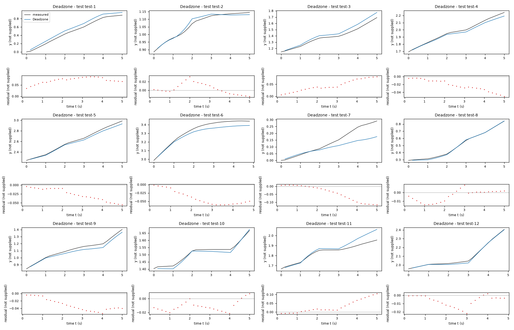
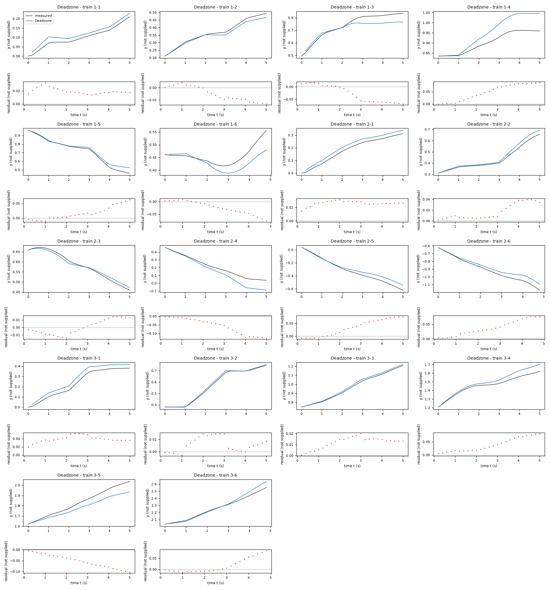
| Data | Trajectory | Scored samples | RMSE | NRMSE | R² | Failure |
|---|---|---|---|---|---|---|
| training data | 1-1 | 25 of 25 | 0.02035 | 0.3992 | 0.8406 | none |
| training data | 1-2 | 25 of 25 | 0.01519 | 0.1972 | 0.9611 | none |
| training data | 1-3 | 25 of 25 | 0.04285 | 0.4729 | 0.7764 | none |
| training data | 1-4 | 25 of 25 | 0.05751 | 1.155 | -0.3346 | none |
| training data | 1-5 | 25 of 25 | 0.0276 | 0.185 | 0.9658 | none |
| training data | 1-6 | 24 of 24 | 0.03448 | 0.9503 | 0.09694 | none |
| training data | 2-1 | 25 of 25 | 0.0266 | 0.2815 | 0.9208 | none |
| training data | 2-2 | 25 of 25 | 0.02204 | 0.215 | 0.9538 | none |
| training data | 2-3 | 25 of 25 | 0.009504 | 0.1384 | 0.9808 | none |
| training data | 2-4 | 25 of 25 | 0.07219 | 0.5595 | 0.687 | none |
| training data | 2-5 | 25 of 25 | 0.04559 | 0.2556 | 0.9347 | none |
| training data | 2-6 | 24 of 24 | 0.04497 | 0.3109 | 0.9033 | none |
| training data | 3-1 | 25 of 25 | 0.04022 | 0.3099 | 0.904 | none |
| training data | 3-2 | 25 of 25 | 0.008394 | 0.06119 | 0.9963 | none |
| training data | 3-3 | 25 of 25 | 0.01313 | 0.09105 | 0.9917 | none |
| training data | 3-4 | 25 of 25 | 0.04604 | 0.4604 | 0.7881 | none |
| training data | 3-5 | 25 of 25 | 0.05951 | 0.4797 | 0.7699 | none |
| training data | 3-6 | 24 of 24 | 0.03574 | 0.23 | 0.9471 | none |
| test data | test-1 | 25 of 25 | 0.07171 | 0.2561 | 0.9344 | none |
| test data | test-2 | 25 of 25 | 0.01289 | 0.1684 | 0.9716 | none |
| test data | test-3 | 25 of 25 | 0.05032 | 0.344 | 0.8817 | none |
| test data | test-4 | 25 of 25 | 0.02665 | 0.1773 | 0.9686 | none |
| test data | test-5 | 25 of 25 | 0.03113 | 0.1396 | 0.9805 | none |
| test data | test-6 | 24 of 24 | 0.04423 | 0.3517 | 0.8763 | none |
| test data | test-7 | 25 of 25 | 0.06241 | 0.6733 | 0.5467 | none |
| test data | test-8 | 25 of 25 | 0.00735 | 0.0408 | 0.9983 | none |
| test data | test-9 | 25 of 25 | 0.03427 | 0.259 | 0.9329 | none |
| test data | test-10 | 25 of 25 | 0.01324 | 0.1949 | 0.962 | none |
| test data | test-11 | 25 of 25 | 0.04694 | 0.6003 | 0.6397 | none |
| test data | test-12 | 24 of 24 | 0.009119 | 0.06852 | 0.9953 | none |
RMSE of y; NRMSE = RMSE / σ and R² = 1 − SSE / Σ(y[k] − μ)², with μ and σ the mean and the population standard deviation of the measured output on the scored samples.
a = 0.1704 not supplied (fitted), b = -0.0002432 not supplied (fitted), g = 0.1638 not supplied (fitted), h = 0.005775 not supplied (fitted), d = 0.05828 not supplied (fitted), c = 0.0006793 not supplied (fitted)y: 0.03891 · test error: 0.03891Equations as written in the model file
y_next = y+(a*x3+b)*cos(x2+(g*x3/(x3+h)*sign(x4)*Max(Abs(x4)-d,0)+c)/2)
x1_next = x1+(a*x3+b)*sin(x2+(g*x3/(x3+h)*sign(x4)*Max(Abs(x4)-d,0)+c)/2)
x2_next = atan2(sin(x2+(g*x3/(x3+h)*sign(x4)*Max(Abs(x4)-d,0)+c)),cos(x2+(g*x3/(x3+h)*sign(x4)*Max(Abs(x4)-d,0)+c)))
Equations with the values substituted
Every parameter is replaced by its value with 4 significant digits.
Parameters and estimation
| Name | Value | Unit | Type | Description |
|---|---|---|---|---|
a | 0.170386 | not supplied | fitted | a: forward-input gain; jointly estimated in this candidate. Units cannot be recovered because column units are not supplied. |
b | -0.000243208 | not supplied | fitted | b: forward displacement offset per sample; jointly estimated in this candidate. Units cannot be recovered because column units are not supplied. |
g | 0.163764 | not supplied | fitted | g: asymptotic turn gain; jointly estimated in this candidate. Units cannot be recovered because column units are not supplied. |
h | 0.00577456 | not supplied | fitted | h: positive forward-input half-gain scale; jointly estimated in this candidate. Units cannot be recovered because column units are not supplied. |
d | 0.0582843 | not supplied | fitted | d: turn-input dead-zone threshold; jointly estimated in this candidate. Units cannot be recovered because column units are not supplied. |
c | 0.000679344 | not supplied | fitted | c: angular increment offset per sample; jointly estimated in this candidate. Units cannot be recovered because column units are not supplied. |
- Criterion minimized
Minimize the sum over all post-initial rollout rows of , where
e_y,e_x1, ande_x2are simulated minus logged states. The angular discrepancy is circular to avoid treating an angle wrap as a large error. The numerical factor0.25balances angular and positional discrepancies on the observed column scales; no physical unit conversion is asserted. Both unscored states regularize the scored-state dynamics. Rollout least squares is used because evaluation does not reset simulated states. The horizon is selected by empirical trajectory validation rather than claimed as a physical delay.- Data
data/train.csv, all three trajectories. All complete windows of 10 consecutive transitions, starting every 3 rows within each trajectory, contribute 141 rollouts. Each window starts from its measured initial state and has no subsequent reset. Incomplete final windows are omitted to keep the criterion horizon uniform; all trajectories and input conditions are represented. The sample period is0.2s, given in TASK.md; parameters absorb this period rather than representing continuous-time rates.- Method
Bound-constrained nonlinear least squares using
scipy.optimize.least_squares, trust-region reflective algorithm, two-point finite-difference Jacobian and linear loss. All parametersa, b, g, h, d, care estimated together in each run, not in stages. Parameter order is['a', 'b', 'g', 'h', 'd', 'c']. Starting vectors are[[0.16, 0, 0.16, 0.007, 0.07, 0], [0.17, 0, 0.2, 0.0001, 0.1, 0.001], [0.17, 0, 0.19, 0.004, 0.08, 0]]; these use rough forward and angular gains observed in the motion probes, zero drift, positive input scales and symmetric channel gains. Bounds are([0.05, -0.01, 0.04, 1e-05, 0, -0.02], [0.3, 0.01, 0.4, 0.1, 0.3, 0.02])in the same order. Gains/scales are kept positive, drift/correction ranges restricted and denominator scales bounded away from zero to avoid nonphysical sign reversal or singularities. Bounds are chosen regularization limits, not measured physical constraints. Every numeric parameter setting has unspecified units inherited from the supplied columns. Multiple starts are used only where the turn map has local minima; the run with smallest training sum of squares is selected. , , , ; these are software count/tolerance settings. No random numbers or seeds apply. This method handles nonlinear recursive simulation and parameter bounds, unlike ordinary linear least squares. Reference: SciPy installedleast_squaresfunction documentation, inspected during the run.- Script
build_submission.py
The agent's explanation
Unicycle kinematics with a rational gain-scheduled dead-zone turn map. The kinematic backbone is consistent with S. M. LaValle, Planning Algorithms, Cambridge University Press (2006), discussion of differential-drive and nonholonomic vehicle models; bibliographic reference recalled from memory, not independently verified. This reference supports the kinematics, not these empirical input nonlinearities.
y and x1 are the two supplied positional-state candidates; x2 is the periodic heading-state candidate; x3 and x4 are the supplied inputs, treated as forward-like and turn-like commands. All units except sampling time are unspecified. The rational factor increases from zero toward one as the forward input increases. The dead zone attenuates small turn inputs. This is an empirical coupling, not evidence of a known mechanical law. The displacement map is and the angular-increment map is . Each named coefficient is defined in the parameter rows. Translation uses the midpoint angle, as written in and . The structural number 2 implements midpoint quadrature. The update wraps the angular state; this does not alter its sine or cosine.
Residual analysis of steady-command rows found lower angular response at low forward input. The helper compared polynomial, rational and exponential gain maps; the rational structure gave useful held-out error. It was then fitted here by a separate multi-step criterion. No coefficients were imported from the helper. Before fitting, affine, sparse/polynomial and trigonometric/saturating families were proposed. Actual initial regressions were dense ordinary least squares with polynomial degrees 1, 2 and 3, followed by kinematic probes and nonlinear input-map fits; no genetic symbolic regression was run. Midpoint trigonometry and angle wrapping came from the empirical motion geometry. No physical term is asserted from an undisclosed system description. Residuals were inspected in inspect_residuals.py; input-change errors motivated the attenuation families, but a true lag state cannot be added under the required state list. Validation: leave-one-trajectory-out free-run RMSE of y was 0.111305 in unspecified y units, pooled across held-out trajectories after refitting on the other two. Training free-run RMSE was 0.126143 in those units. A second check fitted the first 100 rows of each trajectory using horizon 10 and freely simulated the final 50 transitions from measured row 99, giving RMSE 0.137843 in unspecified y units. These are training-derived checks, not test scores; horizon/structure selection sees these validation outcomes and the three trajectories give uncertain generalization estimates.
The system identity and all column units are unknown. Interpreting y and x1 as planar coordinates and x2 as an angle is a data-supported hypothesis, not a supplied fact. Only the given sampling period is supported. The forward input was nonnegative in training; negative inputs and larger turn commands are not validated. Parameters conflate command scaling, actuation, sampling and any hidden dynamics. Input-change residuals are substantially larger than steady-command residuals, consistent with missing memory; this memoryless model cannot identify or reproduce actuator lag. Offsets can cause slow displacement/rotation with zero command. No clipping is used to disguise unstable extrapolation. Position-dependent and heading-harmonic corrections lowered training residuals but worsened helper held-out errors and were excluded. Validation: leave-one-trajectory-out free-run RMSE of y was 0.111305 in unspecified y units, pooled across held-out trajectories after refitting on the other two. Training free-run RMSE was 0.126143 in those units. A second check fitted the first 100 rows of each trajectory using horizon 10 and freely simulated the final 50 transitions from measured row 99, giving RMSE 0.137843 in unspecified y units. These are training-derived checks, not test scores; horizon/structure selection sees these validation outcomes and the three trajectories give uncertain generalization estimates. The rational denominator is safe over observed nonnegative forward inputs, but the map is undefined at ; such negative inputs are outside the supported domain.
Plots of simulated and measured y, and errors per trajectory
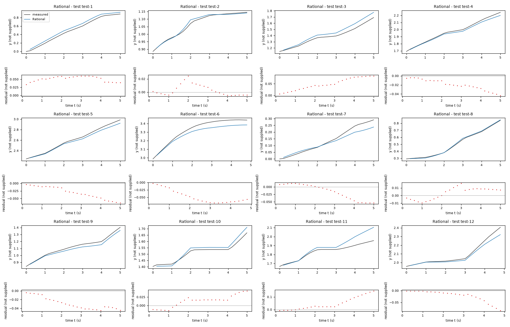
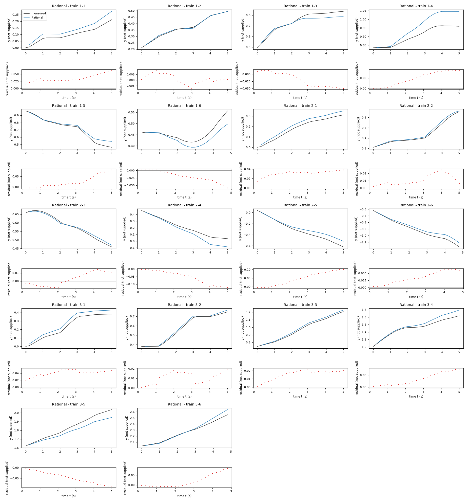
| Data | Trajectory | Scored samples | RMSE | NRMSE | R² | Failure |
|---|---|---|---|---|---|---|
| training data | 1-1 | 25 of 25 | 0.03724 | 0.7307 | 0.4661 | none |
| training data | 1-2 | 25 of 25 | 0.004076 | 0.05294 | 0.9972 | none |
| training data | 1-3 | 25 of 25 | 0.03064 | 0.3381 | 0.8857 | none |
| training data | 1-4 | 25 of 25 | 0.05719 | 1.149 | -0.3201 | none |
| training data | 1-5 | 25 of 25 | 0.03643 | 0.2441 | 0.9404 | none |
| training data | 1-6 | 24 of 24 | 0.02662 | 0.7338 | 0.4615 | none |
| training data | 2-1 | 25 of 25 | 0.03197 | 0.3384 | 0.8855 | none |
| training data | 2-2 | 25 of 25 | 0.01303 | 0.1271 | 0.9838 | none |
| training data | 2-3 | 25 of 25 | 0.008189 | 0.1193 | 0.9858 | none |
| training data | 2-4 | 25 of 25 | 0.06908 | 0.5354 | 0.7133 | none |
| training data | 2-5 | 25 of 25 | 0.06097 | 0.3418 | 0.8832 | none |
| training data | 2-6 | 24 of 24 | 0.0404 | 0.2793 | 0.922 | none |
| training data | 3-1 | 25 of 25 | 0.04238 | 0.3265 | 0.8934 | none |
| training data | 3-2 | 25 of 25 | 0.0123 | 0.08964 | 0.992 | none |
| training data | 3-3 | 25 of 25 | 0.01664 | 0.1154 | 0.9867 | none |
| training data | 3-4 | 25 of 25 | 0.04179 | 0.4179 | 0.8254 | none |
| training data | 3-5 | 25 of 25 | 0.05372 | 0.4331 | 0.8124 | none |
| training data | 3-6 | 24 of 24 | 0.03651 | 0.235 | 0.9448 | none |
| test data | test-1 | 25 of 25 | 0.05182 | 0.1851 | 0.9657 | none |
| test data | test-2 | 25 of 25 | 0.008816 | 0.1151 | 0.9867 | none |
| test data | test-3 | 25 of 25 | 0.0551 | 0.3767 | 0.8581 | none |
| test data | test-4 | 25 of 25 | 0.02278 | 0.1516 | 0.977 | none |
| test data | test-5 | 25 of 25 | 0.03601 | 0.1615 | 0.9739 | none |
| test data | test-6 | 24 of 24 | 0.05165 | 0.4107 | 0.8313 | none |
| test data | test-7 | 25 of 25 | 0.0293 | 0.316 | 0.9001 | none |
| test data | test-8 | 25 of 25 | 0.008145 | 0.04522 | 0.998 | none |
| test data | test-9 | 25 of 25 | 0.03179 | 0.2402 | 0.9423 | none |
| test data | test-10 | 25 of 25 | 0.02166 | 0.3189 | 0.8983 | none |
| test data | test-11 | 25 of 25 | 0.06661 | 0.8517 | 0.2746 | none |
| test data | test-12 | 24 of 24 | 0.03269 | 0.2457 | 0.9397 | none |
RMSE of y; NRMSE = RMSE / σ and R² = 1 − SSE / Σ(y[k] − μ)², with μ and σ the mean and the population standard deviation of the measured output on the scored samples.
a = 0.1886 not supplied (fitted), b = -0.002834 not supplied (fitted), g = 0.2086 not supplied (fitted), f = 0.03295 not supplied (fitted), h = 0.07788 not supplied (fitted), c = 0.002188 not supplied (fitted)y: 0.04136 · test error: 0.0393Equations as written in the model file
y_next = y+(a*x3+b)*cos(x2+(g*x4-f*tanh(x4/h)+c)/2)
x1_next = x1+(a*x3+b)*sin(x2+(g*x4-f*tanh(x4/h)+c)/2)
x2_next = atan2(sin(x2+(g*x4-f*tanh(x4/h)+c)),cos(x2+(g*x4-f*tanh(x4/h)+c)))
Equations with the values substituted
Every parameter is replaced by its value with 4 significant digits.
Parameters and estimation
| Name | Value | Unit | Type | Description |
|---|---|---|---|---|
a | 0.188559 | not supplied | fitted | a: forward-input gain; jointly estimated in this candidate. Units cannot be recovered because column units are not supplied. |
b | -0.00283407 | not supplied | fitted | b: forward displacement offset per sample; jointly estimated in this candidate. Units cannot be recovered because column units are not supplied. |
g | 0.208577 | not supplied | fitted | g: linear turn gain; jointly estimated in this candidate. Units cannot be recovered because column units are not supplied. |
f | 0.032948 | not supplied | fitted | f: magnitude of saturating opposing turn correction; jointly estimated in this candidate. Units cannot be recovered because column units are not supplied. |
h | 0.0778821 | not supplied | fitted | h: positive turn-input smoothing width; jointly estimated in this candidate. Units cannot be recovered because column units are not supplied. |
c | 0.00218817 | not supplied | fitted | c: angular increment offset per sample; jointly estimated in this candidate. Units cannot be recovered because column units are not supplied. |
- Criterion minimized
Minimize the sum over all post-initial rollout rows of , where
e_y,e_x1, ande_x2are simulated minus logged states. The angular discrepancy is circular to avoid treating an angle wrap as a large error. The numerical factor0.25balances angular and positional discrepancies on the observed column scales; no physical unit conversion is asserted. Both unscored states regularize the scored-state dynamics. Rollout least squares is used because evaluation does not reset simulated states. The horizon is selected by empirical trajectory validation rather than claimed as a physical delay.- Data
data/train.csv, all three trajectories. Each complete trajectory contributes one 149-transition rollout initialized from its first measured state; no later state is reset. The sample period is0.2s, given in TASK.md; parameters absorb this period rather than representing continuous-time rates.- Method
Bound-constrained nonlinear least squares using
scipy.optimize.least_squares, trust-region reflective algorithm, two-point finite-difference Jacobian and linear loss. All parametersa, b, g, f, h, care estimated together in each run, not in stages. Parameter order is['a', 'b', 'g', 'f', 'h', 'c']. Starting vectors are[[0.16, 0, 0.16, 0.012, 0.08, 0], [0.17, 0, 0.19, 0.02, 0.03, 0], [0.17, 0, 0.19, 0.02, 0.2, 0]]; these use rough forward and angular gains observed in the motion probes, zero drift, positive input scales and symmetric channel gains. Bounds are([0.05, -0.01, 0.04, 0, 0.005, -0.02], [0.3, 0.01, 0.35, 0.08, 0.5, 0.02])in the same order. Gains/scales are kept positive, drift/correction ranges restricted and denominator scales bounded away from zero to avoid nonphysical sign reversal or singularities. Bounds are chosen regularization limits, not measured physical constraints. Every numeric parameter setting has unspecified units inherited from the supplied columns. Multiple starts are used only where the turn map has local minima; the run with smallest training sum of squares is selected. , , , ; these are software count/tolerance settings. No random numbers or seeds apply. This method handles nonlinear recursive simulation and parameter bounds, unlike ordinary linear least squares. Reference: SciPy installedleast_squaresfunction documentation, inspected during the run.- Script
build_submission.py
The agent's explanation
Unicycle kinematics with a smooth Coulomb-friction-like static turn map. The kinematic backbone is consistent with S. M. LaValle, Planning Algorithms, Cambridge University Press (2006), discussion of differential-drive and nonholonomic vehicle models; bibliographic reference recalled from memory, not independently verified. This reference supports the kinematics, not these empirical input nonlinearities.
y and x1 are the two supplied positional-state candidates; x2 is the periodic heading-state candidate; x3 and x4 are the supplied inputs, treated as forward-like and turn-like commands. All units except sampling time are unspecified. The hyperbolic tangent subtracts a bounded odd correction from the linear turn response. This resembles smoothed friction mathematically, but no physical friction coefficient is identified. The offset allows angular drift. The displacement map is and the angular-increment map is . Each named coefficient is defined in the parameter rows. Translation uses the midpoint angle, as written in and . The structural number 2 implements midpoint quadrature. The update wraps the angular state; this does not alter its sine or cosine.
A dead-zone map improved the affine baseline. A smooth odd correction was tried to represent attenuation without a nondifferentiable threshold. Whole-trajectory fitting reduced training rollout residuals substantially, so this family is retained as a higher-gain alternative; its validation is not best. Before fitting, affine, sparse/polynomial and trigonometric/saturating families were proposed. Actual initial regressions were dense ordinary least squares with polynomial degrees 1, 2 and 3, followed by kinematic probes and nonlinear input-map fits; no genetic symbolic regression was run. Midpoint trigonometry and angle wrapping came from the empirical motion geometry. No physical term is asserted from an undisclosed system description. Residuals were inspected in inspect_residuals.py; input-change errors motivated the attenuation families, but a true lag state cannot be added under the required state list. Validation: leave-one-trajectory-out free-run RMSE of y was 0.158701 in unspecified y units, pooled across held-out trajectories after refitting on the other two. Training free-run RMSE was 0.0366617 in those units. A second check fitted the first 100 rows of each trajectory using horizon 50 and freely simulated the final 50 transitions from measured row 99, giving RMSE 0.10207 in unspecified y units. These are training-derived checks, not test scores; horizon/structure selection sees these validation outcomes and the three trajectories give uncertain generalization estimates.
The system identity and all column units are unknown. Interpreting y and x1 as planar coordinates and x2 as an angle is a data-supported hypothesis, not a supplied fact. Only the given sampling period is supported. The forward input was nonnegative in training; negative inputs and larger turn commands are not validated. Parameters conflate command scaling, actuation, sampling and any hidden dynamics. Input-change residuals are substantially larger than steady-command residuals, consistent with missing memory; this memoryless model cannot identify or reproduce actuator lag. Offsets can cause slow displacement/rotation with zero command. No clipping is used to disguise unstable extrapolation. Position-dependent and heading-harmonic corrections lowered training residuals but worsened helper held-out errors and were excluded. Validation: leave-one-trajectory-out free-run RMSE of y was 0.158701 in unspecified y units, pooled across held-out trajectories after refitting on the other two. Training free-run RMSE was 0.0366617 in those units. A second check fitted the first 100 rows of each trajectory using horizon 50 and freely simulated the final 50 transitions from measured row 99, giving RMSE 0.10207 in unspecified y units. These are training-derived checks, not test scores; horizon/structure selection sees these validation outcomes and the three trajectories give uncertain generalization estimates.
Plots of simulated and measured y, and errors per trajectory
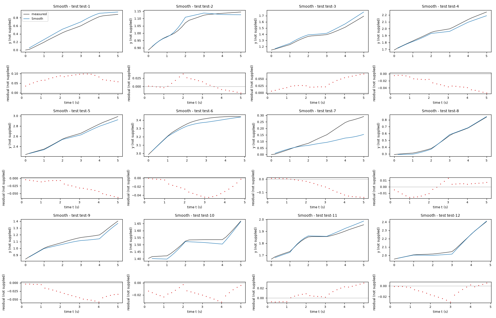
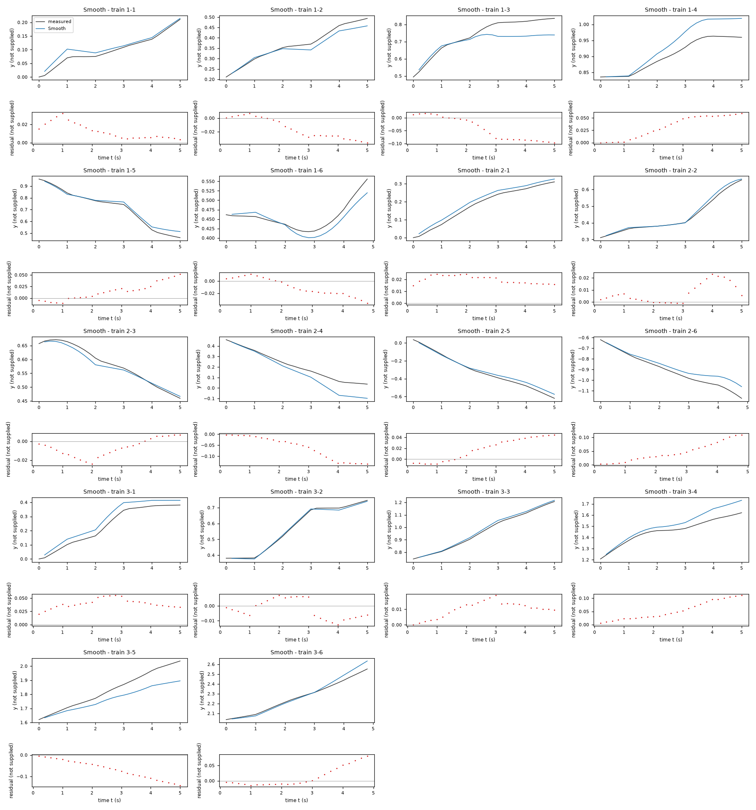
| Data | Trajectory | Scored samples | RMSE | NRMSE | R² | Failure |
|---|---|---|---|---|---|---|
| training data | 1-1 | 25 of 25 | 0.01519 | 0.2982 | 0.9111 | none |
| training data | 1-2 | 25 of 25 | 0.02102 | 0.273 | 0.9255 | none |
| training data | 1-3 | 25 of 25 | 0.06065 | 0.6693 | 0.5521 | none |
| training data | 1-4 | 25 of 25 | 0.03931 | 0.7897 | 0.3764 | none |
| training data | 1-5 | 25 of 25 | 0.02321 | 0.1555 | 0.9758 | none |
| training data | 1-6 | 24 of 24 | 0.01696 | 0.4675 | 0.7814 | none |
| training data | 2-1 | 25 of 25 | 0.02017 | 0.2135 | 0.9544 | none |
| training data | 2-2 | 25 of 25 | 0.01078 | 0.1051 | 0.9889 | none |
| training data | 2-3 | 25 of 25 | 0.01148 | 0.1673 | 0.972 | none |
| training data | 2-4 | 25 of 25 | 0.07874 | 0.6103 | 0.6275 | none |
| training data | 2-5 | 25 of 25 | 0.02694 | 0.151 | 0.9772 | none |
| training data | 2-6 | 24 of 24 | 0.0569 | 0.3934 | 0.8452 | none |
| training data | 3-1 | 25 of 25 | 0.04089 | 0.3151 | 0.9007 | none |
| training data | 3-2 | 25 of 25 | 0.006807 | 0.04962 | 0.9975 | none |
| training data | 3-3 | 25 of 25 | 0.0113 | 0.0784 | 0.9939 | none |
| training data | 3-4 | 25 of 25 | 0.06309 | 0.6309 | 0.602 | none |
| training data | 3-5 | 25 of 25 | 0.07921 | 0.6386 | 0.5922 | none |
| training data | 3-6 | 24 of 24 | 0.0336 | 0.2162 | 0.9533 | none |
| test data | test-1 | 25 of 25 | 0.07785 | 0.2781 | 0.9227 | none |
| test data | test-2 | 25 of 25 | 0.01588 | 0.2073 | 0.957 | none |
| test data | test-3 | 25 of 25 | 0.038 | 0.2598 | 0.9325 | none |
| test data | test-4 | 25 of 25 | 0.03163 | 0.2104 | 0.9557 | none |
| test data | test-5 | 25 of 25 | 0.03288 | 0.1475 | 0.9782 | none |
| test data | test-6 | 24 of 24 | 0.02764 | 0.2198 | 0.9517 | none |
| test data | test-7 | 25 of 25 | 0.07604 | 0.8203 | 0.3272 | none |
| test data | test-8 | 25 of 25 | 0.009347 | 0.05189 | 0.9973 | none |
| test data | test-9 | 25 of 25 | 0.03528 | 0.2666 | 0.9289 | none |
| test data | test-10 | 25 of 25 | 0.0185 | 0.2723 | 0.9258 | none |
| test data | test-11 | 25 of 25 | 0.0149 | 0.1905 | 0.9637 | none |
| test data | test-12 | 24 of 24 | 0.01304 | 0.09799 | 0.9904 | none |
RMSE of y; NRMSE = RMSE / σ and R² = 1 − SSE / Σ(y[k] − μ)², with μ and σ the mean and the population standard deviation of the measured output on the scored samples.
a = 0.1703 not supplied (fitted), b = -0.000242 not supplied (fitted), g = 0.1181 not supplied (fitted), q = 0.01405 not supplied (fitted), r = 0.08832 not supplied (fitted), c = 9.277e-05 not supplied (fitted)y: 0.03992 · test error: 0.04025Equations as written in the model file
y_next = y+(a*x3+b)*cos(x2+(g*x4+q*x4**3+r*x3*x4+c)/2)
x1_next = x1+(a*x3+b)*sin(x2+(g*x4+q*x4**3+r*x3*x4+c)/2)
x2_next = atan2(sin(x2+(g*x4+q*x4**3+r*x3*x4+c)),cos(x2+(g*x4+q*x4**3+r*x3*x4+c)))
Equations with the values substituted
Every parameter is replaced by its value with 4 significant digits.
Parameters and estimation
| Name | Value | Unit | Type | Description |
|---|---|---|---|---|
a | 0.170329 | not supplied | fitted | a: forward-input gain; jointly estimated in this candidate. Units cannot be recovered because column units are not supplied. |
b | -0.000241978 | not supplied | fitted | b: forward displacement offset per sample; jointly estimated in this candidate. Units cannot be recovered because column units are not supplied. |
g | 0.118065 | not supplied | fitted | g: linear turn gain; jointly estimated in this candidate. Units cannot be recovered because column units are not supplied. |
q | 0.014054 | not supplied | fitted | q: cubic turn coefficient; jointly estimated in this candidate. Units cannot be recovered because column units are not supplied. |
r | 0.0883178 | not supplied | fitted | r: forward/turn cross coefficient; jointly estimated in this candidate. Units cannot be recovered because column units are not supplied. |
c | 9.27696e-05 | not supplied | fitted | c: angular increment offset per sample; jointly estimated in this candidate. Units cannot be recovered because column units are not supplied. |
- Criterion minimized
Minimize the sum over all post-initial rollout rows of , where
e_y,e_x1, ande_x2are simulated minus logged states. The angular discrepancy is circular to avoid treating an angle wrap as a large error. The numerical factor0.25balances angular and positional discrepancies on the observed column scales; no physical unit conversion is asserted. Both unscored states regularize the scored-state dynamics. Rollout least squares is used because evaluation does not reset simulated states. The horizon is selected by empirical trajectory validation rather than claimed as a physical delay.- Data
data/train.csv, all three trajectories. All complete windows of 10 consecutive transitions, starting every 3 rows within each trajectory, contribute 141 rollouts. Each window starts from its measured initial state and has no subsequent reset. Incomplete final windows are omitted to keep the criterion horizon uniform; all trajectories and input conditions are represented. The sample period is0.2s, given in TASK.md; parameters absorb this period rather than representing continuous-time rates.- Method
Bound-constrained nonlinear least squares using
scipy.optimize.least_squares, trust-region reflective algorithm, two-point finite-difference Jacobian and linear loss. All parametersa, b, g, q, r, care estimated together in each run, not in stages. Parameter order is['a', 'b', 'g', 'q', 'r', 'c']. Starting vectors are[[0.16, 0, 0.13, 0.03, 0, 0]]; these use rough forward and angular gains observed in the motion probes, zero drift, positive input scales and symmetric channel gains. Bounds are([0.05, -0.01, 0.02, -0.2, -0.5, -0.02], [0.3, 0.01, 0.35, 0.2, 0.5, 0.02])in the same order. Gains/scales are kept positive, drift/correction ranges restricted and denominator scales bounded away from zero to avoid nonphysical sign reversal or singularities. Bounds are chosen regularization limits, not measured physical constraints. Every numeric parameter setting has unspecified units inherited from the supplied columns. Multiple starts are used only where the turn map has local minima; the run with smallest training sum of squares is selected. , , , ; these are software count/tolerance settings. No random numbers or seeds apply. This method handles nonlinear recursive simulation and parameter bounds, unlike ordinary linear least squares. Reference: SciPy installedleast_squaresfunction documentation, inspected during the run.- Script
build_submission.py
The agent's explanation
Unicycle kinematics with a low-order polynomial input map. The kinematic backbone is consistent with S. M. LaValle, Planning Algorithms, Cambridge University Press (2006), discussion of differential-drive and nonholonomic vehicle models; bibliographic reference recalled from memory, not independently verified. This reference supports the kinematics, not these empirical input nonlinearities.
y and x1 are the two supplied positional-state candidates; x2 is the periodic heading-state candidate; x3 and x4 are the supplied inputs, treated as forward-like and turn-like commands. All units except sampling time are unspecified. The odd cubic term changes angular gain with turn magnitude; the cross term changes it with forward input. The angular offset allows drift. These are empirical basis functions with no asserted physical identities. The displacement map is and the angular-increment map is . Each named coefficient is defined in the parameter rows. Translation uses the midpoint angle, as written in and . The structural number 2 implements midpoint quadrature. The update wraps the angular state; this does not alter its sine or cosine.
Dense polynomial state regressions initially gave poor angular fits because of angle wrapping. After recognizing the periodic state, the search was restricted to an odd low-order turn-input polynomial and a forward/turn interaction. This retains input curvature and coupling without unrestricted state powers. Before fitting, affine, sparse/polynomial and trigonometric/saturating families were proposed. Actual initial regressions were dense ordinary least squares with polynomial degrees 1, 2 and 3, followed by kinematic probes and nonlinear input-map fits; no genetic symbolic regression was run. Midpoint trigonometry and angle wrapping came from the empirical motion geometry. No physical term is asserted from an undisclosed system description. Residuals were inspected in inspect_residuals.py; input-change errors motivated the attenuation families, but a true lag state cannot be added under the required state list. Validation: leave-one-trajectory-out free-run RMSE of y was 0.129089 in unspecified y units, pooled across held-out trajectories after refitting on the other two. Training free-run RMSE was 0.127489 in those units. A second check fitted the first 100 rows of each trajectory using horizon 10 and freely simulated the final 50 transitions from measured row 99, giving RMSE 0.139278 in unspecified y units. These are training-derived checks, not test scores; horizon/structure selection sees these validation outcomes and the three trajectories give uncertain generalization estimates.
The system identity and all column units are unknown. Interpreting y and x1 as planar coordinates and x2 as an angle is a data-supported hypothesis, not a supplied fact. Only the given sampling period is supported. The forward input was nonnegative in training; negative inputs and larger turn commands are not validated. Parameters conflate command scaling, actuation, sampling and any hidden dynamics. Input-change residuals are substantially larger than steady-command residuals, consistent with missing memory; this memoryless model cannot identify or reproduce actuator lag. Offsets can cause slow displacement/rotation with zero command. No clipping is used to disguise unstable extrapolation. Position-dependent and heading-harmonic corrections lowered training residuals but worsened helper held-out errors and were excluded. Validation: leave-one-trajectory-out free-run RMSE of y was 0.129089 in unspecified y units, pooled across held-out trajectories after refitting on the other two. Training free-run RMSE was 0.127489 in those units. A second check fitted the first 100 rows of each trajectory using horizon 10 and freely simulated the final 50 transitions from measured row 99, giving RMSE 0.139278 in unspecified y units. These are training-derived checks, not test scores; horizon/structure selection sees these validation outcomes and the three trajectories give uncertain generalization estimates. The cubic term is unbounded outside the training input range, so this candidate is intended only for inputs comparable to training.
Plots of simulated and measured y, and errors per trajectory
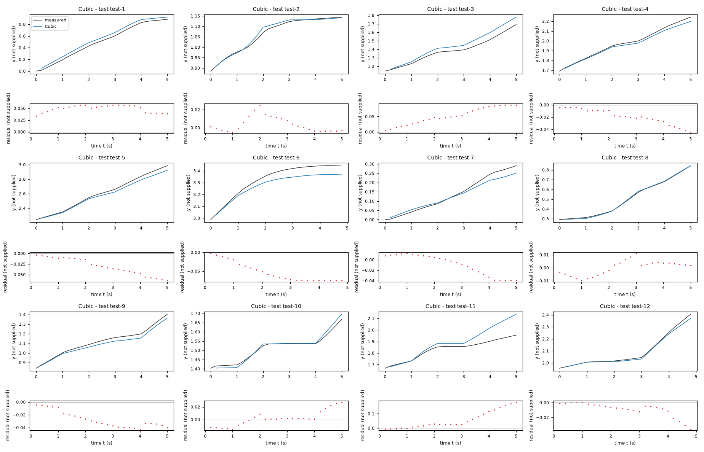
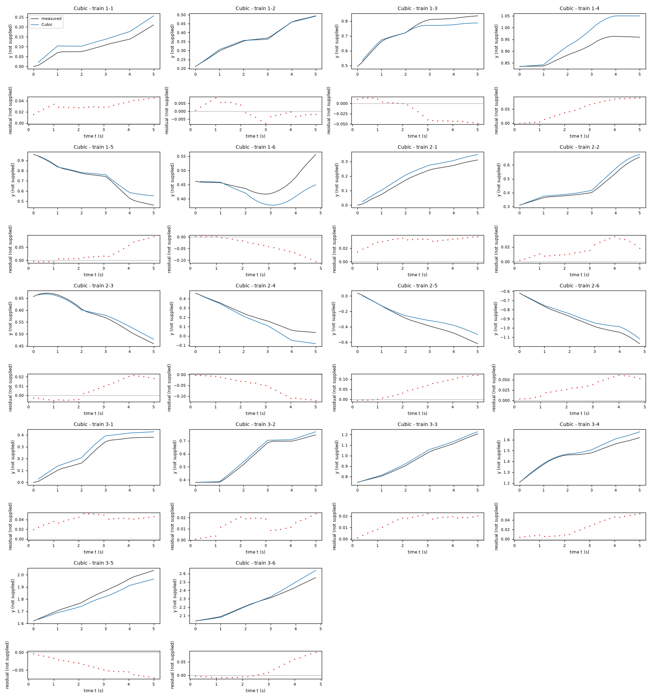
| Data | Trajectory | Scored samples | RMSE | NRMSE | R² | Failure |
|---|---|---|---|---|---|---|
| training data | 1-1 | 25 of 25 | 0.03274 | 0.6424 | 0.5873 | none |
| training data | 1-2 | 25 of 25 | 0.004223 | 0.05485 | 0.997 | none |
| training data | 1-3 | 25 of 25 | 0.03026 | 0.3339 | 0.8885 | none |
| training data | 1-4 | 25 of 25 | 0.05985 | 1.202 | -0.4456 | none |
| training data | 1-5 | 25 of 25 | 0.04084 | 0.2738 | 0.9251 | none |
| training data | 1-6 | 24 of 24 | 0.04833 | 1.332 | -0.7746 | none |
| training data | 2-1 | 25 of 25 | 0.03183 | 0.3369 | 0.8865 | none |
| training data | 2-2 | 25 of 25 | 0.01931 | 0.1883 | 0.9645 | none |
| training data | 2-3 | 25 of 25 | 0.01226 | 0.1786 | 0.9681 | none |
| training data | 2-4 | 25 of 25 | 0.06745 | 0.5228 | 0.7267 | none |
| training data | 2-5 | 25 of 25 | 0.07071 | 0.3965 | 0.8428 | none |
| training data | 2-6 | 24 of 24 | 0.03874 | 0.2678 | 0.9283 | none |
| training data | 3-1 | 25 of 25 | 0.0417 | 0.3213 | 0.8968 | none |
| training data | 3-2 | 25 of 25 | 0.0151 | 0.11 | 0.9879 | none |
| training data | 3-3 | 25 of 25 | 0.01665 | 0.1154 | 0.9867 | none |
| training data | 3-4 | 25 of 25 | 0.03033 | 0.3033 | 0.908 | none |
| training data | 3-5 | 25 of 25 | 0.04425 | 0.3568 | 0.8727 | none |
| training data | 3-6 | 24 of 24 | 0.03745 | 0.241 | 0.9419 | none |
| test data | test-1 | 25 of 25 | 0.05002 | 0.1787 | 0.9681 | none |
| test data | test-2 | 25 of 25 | 0.009086 | 0.1186 | 0.9859 | none |
| test data | test-3 | 25 of 25 | 0.05867 | 0.4011 | 0.8391 | none |
| test data | test-4 | 25 of 25 | 0.02244 | 0.1493 | 0.9777 | none |
| test data | test-5 | 25 of 25 | 0.03601 | 0.1615 | 0.9739 | none |
| test data | test-6 | 24 of 24 | 0.05803 | 0.4614 | 0.7871 | none |
| test data | test-7 | 25 of 25 | 0.02139 | 0.2308 | 0.9468 | none |
| test data | test-8 | 25 of 25 | 0.005491 | 0.03048 | 0.9991 | none |
| test data | test-9 | 25 of 25 | 0.03014 | 0.2278 | 0.9481 | none |
| test data | test-10 | 25 of 25 | 0.01186 | 0.1746 | 0.9695 | none |
| test data | test-11 | 25 of 25 | 0.08095 | 1.035 | -0.07138 | none |
| test data | test-12 | 24 of 24 | 0.01311 | 0.09854 | 0.9903 | none |
RMSE of y; NRMSE = RMSE / σ and R² = 1 − SSE / Σ(y[k] − μ)², with μ and σ the mean and the population standard deviation of the measured output on the scored samples.
ar = 0.1853 not supplied (fitted), al = 0.1801 not supplied (fitted), ell = 0.4665 not supplied (fitted), d = 0.05182 not supplied (fitted), h = 0.005 not supplied (fitted)y: 0.03999 · test error: 0.05336Equations as written in the model file
y_next = y+((ar*((x3+ell*x4)-d*tanh((x3+ell*x4)/h))+al*((x3-ell*x4)-d*tanh((x3-ell*x4)/h)))/2)*cos(x2+((ar*((x3+ell*x4)-d*tanh((x3+ell*x4)/h))-al*((x3-ell*x4)-d*tanh((x3-ell*x4)/h)))/(2*ell))/2)
x1_next = x1+((ar*((x3+ell*x4)-d*tanh((x3+ell*x4)/h))+al*((x3-ell*x4)-d*tanh((x3-ell*x4)/h)))/2)*sin(x2+((ar*((x3+ell*x4)-d*tanh((x3+ell*x4)/h))-al*((x3-ell*x4)-d*tanh((x3-ell*x4)/h)))/(2*ell))/2)
x2_next = atan2(sin(x2+((ar*((x3+ell*x4)-d*tanh((x3+ell*x4)/h))-al*((x3-ell*x4)-d*tanh((x3-ell*x4)/h)))/(2*ell))),cos(x2+((ar*((x3+ell*x4)-d*tanh((x3+ell*x4)/h))-al*((x3-ell*x4)-d*tanh((x3-ell*x4)/h)))/(2*ell))))
Equations with the values substituted
Every parameter is replaced by its value with 4 significant digits.
Parameters and estimation
| Name | Value | Unit | Type | Description |
|---|---|---|---|---|
ar | 0.185288 | not supplied | fitted | ar: right-channel displacement gain; jointly estimated in this candidate. Units cannot be recovered because column units are not supplied. |
al | 0.180134 | not supplied | fitted | al: left-channel displacement gain; jointly estimated in this candidate. Units cannot be recovered because column units are not supplied. |
ell | 0.466475 | not supplied | fitted | ell: positive forward/turn mixing scale; not an identified wheel separation; jointly estimated in this candidate. Units cannot be recovered because column units are not supplied. |
d | 0.0518233 | not supplied | fitted | d: shared opposing-correction magnitude in mixed-input units; jointly estimated in this candidate. Units cannot be recovered because column units are not supplied. |
h | 0.005 | not supplied | fitted | h: positive smoothing width in mixed-input units; jointly estimated in this candidate. Units cannot be recovered because column units are not supplied. |
- Criterion minimized
Minimize the sum over all post-initial rollout rows of , where
e_y,e_x1, ande_x2are simulated minus logged states. The angular discrepancy is circular to avoid treating an angle wrap as a large error. The numerical factor0.25balances angular and positional discrepancies on the observed column scales; no physical unit conversion is asserted. Both unscored states regularize the scored-state dynamics. Rollout least squares is used because evaluation does not reset simulated states. The horizon is selected by empirical trajectory validation rather than claimed as a physical delay.- Data
data/train.csv, all three trajectories. Each complete trajectory contributes one 149-transition rollout initialized from its first measured state; no later state is reset. The sample period is0.2s, given in TASK.md; parameters absorb this period rather than representing continuous-time rates.- Method
Bound-constrained nonlinear least squares using
scipy.optimize.least_squares, trust-region reflective algorithm, two-point finite-difference Jacobian and linear loss. All parametersar, al, ell, d, hare estimated together in each run, not in stages. Parameter order is['ar', 'al', 'ell', 'd', 'h']. Starting vectors are[[0.16, 0.16, 0.1, 0.01, 0.05]]; these use rough forward and angular gains observed in the motion probes, zero drift, positive input scales and symmetric channel gains. Bounds are([0.05, 0.05, 0.02, 0, 0.005], [0.3, 0.3, 0.5, 0.08, 0.2])in the same order. Gains/scales are kept positive, drift/correction ranges restricted and denominator scales bounded away from zero to avoid nonphysical sign reversal or singularities. Bounds are chosen regularization limits, not measured physical constraints. Every numeric parameter setting has unspecified units inherited from the supplied columns. Multiple starts are used only where the turn map has local minima; the run with smallest training sum of squares is selected. , , , ; these are software count/tolerance settings. No random numbers or seeds apply. This method handles nonlinear recursive simulation and parameter bounds, unlike ordinary linear least squares. Reference: SciPy installedleast_squaresfunction documentation, inspected during the run.- Script
build_submission.py
The agent's explanation
Differential-drive-inspired kinematics with two smooth static channel nonlinearities. The kinematic backbone is consistent with S. M. LaValle, Planning Algorithms, Cambridge University Press (2006), discussion of differential-drive and nonholonomic vehicle models; bibliographic reference recalled from memory, not independently verified. This reference supports the kinematics, not these empirical input nonlinearities.
y and x1 are the two supplied positional-state candidates; x2 is the periodic heading-state candidate; x3 and x4 are the supplied inputs, treated as forward-like and turn-like commands. All units except sampling time are unspecified. The sum of the two channel responses produces translation and their difference produces rotation. Unequal gains allow an input-dependent turning bias. The bounded hyperbolic-tangent correction models attenuation in each mixed channel. These are effective mathematical channels; actual wheel variables were not measured. The displacement map is and the angular-increment map is . Each named coefficient is defined in the parameter rows. Translation uses the midpoint angle, as written in and . The structural number 2 implements midpoint quadrature. The update wraps the angular state; this does not alter its sine or cosine.
The combination of translational and angular input effects suggested testing a differential-drive-inspired mixer. Both sharp channel dead zones and smooth channel attenuation were fitted. The smooth version was retained: it fits training rollouts well and is structurally different from an independent forward/turn map. Before fitting, affine, sparse/polynomial and trigonometric/saturating families were proposed. Actual initial regressions were dense ordinary least squares with polynomial degrees 1, 2 and 3, followed by kinematic probes and nonlinear input-map fits; no genetic symbolic regression was run. Midpoint trigonometry and angle wrapping came from the empirical motion geometry. No physical term is asserted from an undisclosed system description. Residuals were inspected in inspect_residuals.py; input-change errors motivated the attenuation families, but a true lag state cannot be added under the required state list. Validation: leave-one-trajectory-out free-run RMSE of y was 0.155979 in unspecified y units, pooled across held-out trajectories after refitting on the other two. Training free-run RMSE was 0.054091 in those units. A second check fitted the first 100 rows of each trajectory using horizon 50 and freely simulated the final 50 transitions from measured row 99, giving RMSE 0.142729 in unspecified y units. These are training-derived checks, not test scores; horizon/structure selection sees these validation outcomes and the three trajectories give uncertain generalization estimates.
The system identity and all column units are unknown. Interpreting y and x1 as planar coordinates and x2 as an angle is a data-supported hypothesis, not a supplied fact. Only the given sampling period is supported. The forward input was nonnegative in training; negative inputs and larger turn commands are not validated. Parameters conflate command scaling, actuation, sampling and any hidden dynamics. Input-change residuals are substantially larger than steady-command residuals, consistent with missing memory; this memoryless model cannot identify or reproduce actuator lag. Offsets can cause slow displacement/rotation with zero command. No clipping is used to disguise unstable extrapolation. Position-dependent and heading-harmonic corrections lowered training residuals but worsened helper held-out errors and were excluded. Validation: leave-one-trajectory-out free-run RMSE of y was 0.155979 in unspecified y units, pooled across held-out trajectories after refitting on the other two. Training free-run RMSE was 0.054091 in those units. A second check fitted the first 100 rows of each trajectory using horizon 50 and freely simulated the final 50 transitions from measured row 99, giving RMSE 0.142729 in unspecified y units. These are training-derived checks, not test scores; horizon/structure selection sees these validation outcomes and the three trajectories give uncertain generalization estimates. The fitted smoothing width reaches its chosen lower bound, so this width is weakly determined and the mixer is effectively close to a sharp opposing correction. Channel gain, mixing scale and correction magnitude are confounded; no wheel geometry is identified.
Plots of simulated and measured y, and errors per trajectory
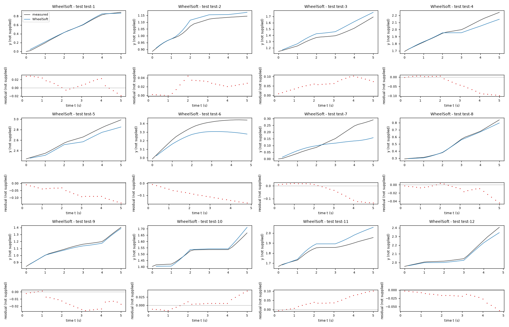
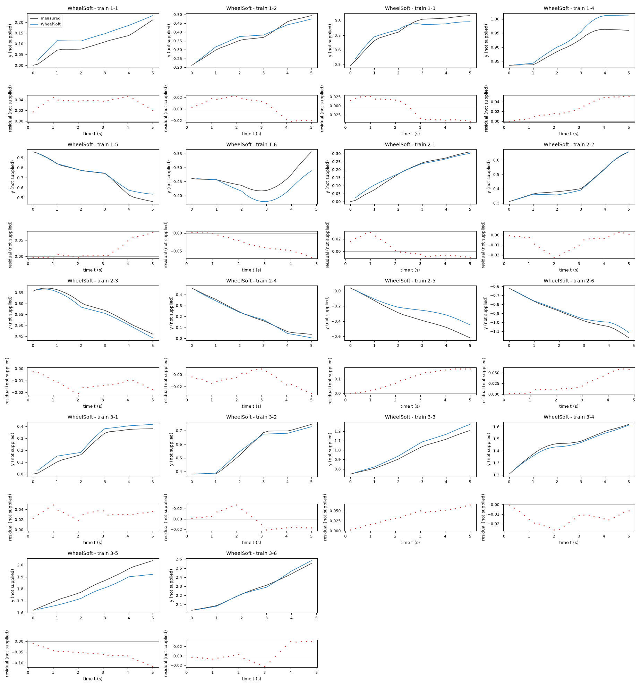
| Data | Trajectory | Scored samples | RMSE | NRMSE | R² | Failure |
|---|---|---|---|---|---|---|
| training data | 1-1 | 25 of 25 | 0.03747 | 0.7352 | 0.4595 | none |
| training data | 1-2 | 25 of 25 | 0.01603 | 0.2082 | 0.9567 | none |
| training data | 1-3 | 25 of 25 | 0.02927 | 0.323 | 0.8957 | none |
| training data | 1-4 | 25 of 25 | 0.03124 | 0.6275 | 0.6062 | none |
| training data | 1-5 | 25 of 25 | 0.03239 | 0.2171 | 0.9529 | none |
| training data | 1-6 | 24 of 24 | 0.0362 | 0.9977 | 0.004612 | none |
| training data | 2-1 | 25 of 25 | 0.01395 | 0.1477 | 0.9782 | none |
| training data | 2-2 | 25 of 25 | 0.01028 | 0.1003 | 0.9899 | none |
| training data | 2-3 | 25 of 25 | 0.01319 | 0.1921 | 0.9631 | none |
| training data | 2-4 | 25 of 25 | 0.01317 | 0.1021 | 0.9896 | none |
| training data | 2-5 | 25 of 25 | 0.1166 | 0.6538 | 0.5726 | none |
| training data | 2-6 | 24 of 24 | 0.03053 | 0.2111 | 0.9555 | none |
| training data | 3-1 | 25 of 25 | 0.03331 | 0.2566 | 0.9341 | none |
| training data | 3-2 | 25 of 25 | 0.01547 | 0.1128 | 0.9873 | none |
| training data | 3-3 | 25 of 25 | 0.04143 | 0.2873 | 0.9175 | none |
| training data | 3-4 | 25 of 25 | 0.01578 | 0.1578 | 0.9751 | none |
| training data | 3-5 | 25 of 25 | 0.06376 | 0.514 | 0.7358 | none |
| training data | 3-6 | 24 of 24 | 0.01673 | 0.1077 | 0.9884 | none |
| test data | test-1 | 25 of 25 | 0.0162 | 0.05787 | 0.9967 | none |
| test data | test-2 | 25 of 25 | 0.02498 | 0.3262 | 0.8936 | none |
| test data | test-3 | 25 of 25 | 0.06778 | 0.4634 | 0.7853 | none |
| test data | test-4 | 25 of 25 | 0.05311 | 0.3534 | 0.8751 | none |
| test data | test-5 | 25 of 25 | 0.07689 | 0.345 | 0.881 | none |
| test data | test-6 | 24 of 24 | 0.1051 | 0.8358 | 0.3014 | none |
| test data | test-7 | 25 of 25 | 0.06942 | 0.7488 | 0.4392 | none |
| test data | test-8 | 25 of 25 | 0.01563 | 0.08679 | 0.9925 | none |
| test data | test-9 | 25 of 25 | 0.01617 | 0.1222 | 0.9851 | none |
| test data | test-10 | 25 of 25 | 0.01646 | 0.2424 | 0.9413 | none |
| test data | test-11 | 25 of 25 | 0.05422 | 0.6933 | 0.5193 | none |
| test data | test-12 | 24 of 24 | 0.02467 | 0.1854 | 0.9656 | none |
RMSE of y; NRMSE = RMSE / σ and R² = 1 − SSE / Σ(y[k] − μ)², with μ and σ the mean and the population standard deviation of the measured output on the scored samples.
a = 0.1701 not supplied (fitted), b = -0.0002176 not supplied (fitted), g = 0.1384 not supplied (fitted), c = 0.0006407 not supplied (fitted)y: 0.04041 · test error: 0.0413Equations as written in the model file
y_next = y+(a*x3+b)*cos(x2+(g*x4+c)/2)
x1_next = x1+(a*x3+b)*sin(x2+(g*x4+c)/2)
x2_next = atan2(sin(x2+(g*x4+c)),cos(x2+(g*x4+c)))
Equations with the values substituted
Every parameter is replaced by its value with 4 significant digits.
Parameters and estimation
| Name | Value | Unit | Type | Description |
|---|---|---|---|---|
a | 0.170123 | not supplied | fitted | a: forward-input gain; jointly estimated in this candidate. Units cannot be recovered because column units are not supplied. |
b | -0.000217591 | not supplied | fitted | b: forward displacement offset per sample; jointly estimated in this candidate. Units cannot be recovered because column units are not supplied. |
g | 0.138426 | not supplied | fitted | g: turn-input gain; jointly estimated in this candidate. Units cannot be recovered because column units are not supplied. |
c | 0.000640721 | not supplied | fitted | c: angular increment offset per sample; jointly estimated in this candidate. Units cannot be recovered because column units are not supplied. |
- Criterion minimized
Minimize the sum over all post-initial rollout rows of , where
e_y,e_x1, ande_x2are simulated minus logged states. The angular discrepancy is circular to avoid treating an angle wrap as a large error. The numerical factor0.25balances angular and positional discrepancies on the observed column scales; no physical unit conversion is asserted. Both unscored states regularize the scored-state dynamics. Rollout least squares is used because evaluation does not reset simulated states. The horizon is selected by empirical trajectory validation rather than claimed as a physical delay.- Data
data/train.csv, all three trajectories. All complete windows of 10 consecutive transitions, starting every 3 rows within each trajectory, contribute 141 rollouts. Each window starts from its measured initial state and has no subsequent reset. Incomplete final windows are omitted to keep the criterion horizon uniform; all trajectories and input conditions are represented. The sample period is0.2s, given in TASK.md; parameters absorb this period rather than representing continuous-time rates.- Method
Bound-constrained nonlinear least squares using
scipy.optimize.least_squares, trust-region reflective algorithm, two-point finite-difference Jacobian and linear loss. All parametersa, b, g, care estimated together in each run, not in stages. Parameter order is['a', 'b', 'g', 'c']. Starting vectors are[[0.16, 0, 0.14, 0]]; these use rough forward and angular gains observed in the motion probes, zero drift, positive input scales and symmetric channel gains. Bounds are([0.05, -0.01, 0.04, -0.02], [0.3, 0.01, 0.25, 0.02])in the same order. Gains/scales are kept positive, drift/correction ranges restricted and denominator scales bounded away from zero to avoid nonphysical sign reversal or singularities. Bounds are chosen regularization limits, not measured physical constraints. Every numeric parameter setting has unspecified units inherited from the supplied columns. Multiple starts are used only where the turn map has local minima; the run with smallest training sum of squares is selected. , , , ; these are software count/tolerance settings. No random numbers or seeds apply. This method handles nonlinear recursive simulation and parameter bounds, unlike ordinary linear least squares. Reference: SciPy installedleast_squaresfunction documentation, inspected during the run.- Script
build_submission.py
The agent's explanation
Unicycle kinematics with affine input maps. The kinematic backbone is consistent with S. M. LaValle, Planning Algorithms, Cambridge University Press (2006), discussion of differential-drive and nonholonomic vehicle models; bibliographic reference recalled from memory, not independently verified. This reference supports the kinematics, not these empirical input nonlinearities.
y and x1 are the two supplied positional-state candidates; x2 is the periodic heading-state candidate; x3 and x4 are the supplied inputs, treated as forward-like and turn-like commands. All units except sampling time are unspecified. The forward map is affine; the turn map is affine. The offsets account for the conditional mean discrepancy, not a known physical force. The displacement map is and the angular-increment map is . Each named coefficient is defined in the parameter rows. Translation uses the midpoint angle, as written in and . The structural number 2 implements midpoint quadrature. The update wraps the angular state; this does not alter its sine or cosine.
This is the simplest kinematic baseline, retained to expose whether the nonlinear input maps add value. Before fitting, affine, sparse/polynomial and trigonometric/saturating families were proposed. Actual initial regressions were dense ordinary least squares with polynomial degrees 1, 2 and 3, followed by kinematic probes and nonlinear input-map fits; no genetic symbolic regression was run. Midpoint trigonometry and angle wrapping came from the empirical motion geometry. No physical term is asserted from an undisclosed system description. Residuals were inspected in inspect_residuals.py; input-change errors motivated the attenuation families, but a true lag state cannot be added under the required state list. Validation: leave-one-trajectory-out free-run RMSE of y was 0.143861 in unspecified y units, pooled across held-out trajectories after refitting on the other two. Training free-run RMSE was 0.154751 in those units. A second check fitted the first 100 rows of each trajectory using horizon 10 and freely simulated the final 50 transitions from measured row 99, giving RMSE 0.115954 in unspecified y units. These are training-derived checks, not test scores; horizon/structure selection sees these validation outcomes and the three trajectories give uncertain generalization estimates.
The system identity and all column units are unknown. Interpreting y and x1 as planar coordinates and x2 as an angle is a data-supported hypothesis, not a supplied fact. Only the given sampling period is supported. The forward input was nonnegative in training; negative inputs and larger turn commands are not validated. Parameters conflate command scaling, actuation, sampling and any hidden dynamics. Input-change residuals are substantially larger than steady-command residuals, consistent with missing memory; this memoryless model cannot identify or reproduce actuator lag. Offsets can cause slow displacement/rotation with zero command. No clipping is used to disguise unstable extrapolation. Position-dependent and heading-harmonic corrections lowered training residuals but worsened helper held-out errors and were excluded. Validation: leave-one-trajectory-out free-run RMSE of y was 0.143861 in unspecified y units, pooled across held-out trajectories after refitting on the other two. Training free-run RMSE was 0.154751 in those units. A second check fitted the first 100 rows of each trajectory using horizon 10 and freely simulated the final 50 transitions from measured row 99, giving RMSE 0.115954 in unspecified y units. These are training-derived checks, not test scores; horizon/structure selection sees these validation outcomes and the three trajectories give uncertain generalization estimates.
Plots of simulated and measured y, and errors per trajectory
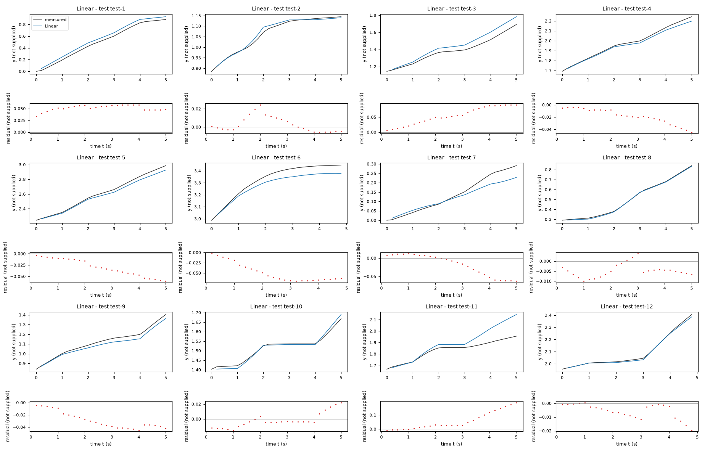
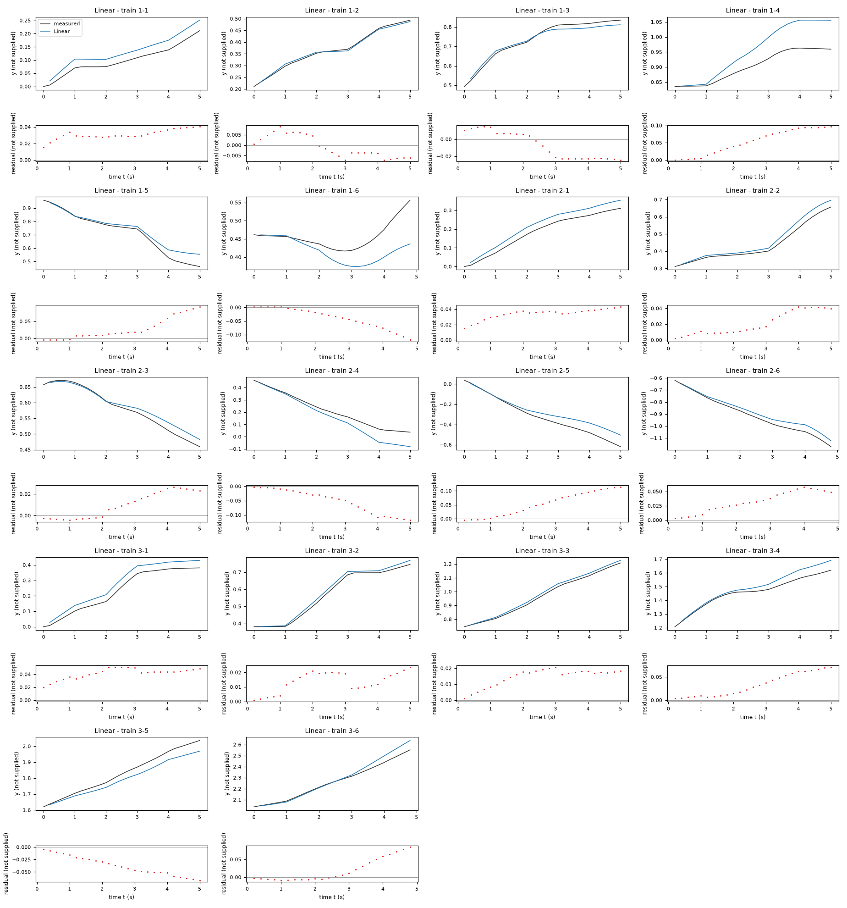
| Data | Trajectory | Scored samples | RMSE | NRMSE | R² | Failure |
|---|---|---|---|---|---|---|
| training data | 1-1 | 25 of 25 | 0.03149 | 0.6178 | 0.6183 | none |
| training data | 1-2 | 25 of 25 | 0.005227 | 0.06788 | 0.9954 | none |
| training data | 1-3 | 25 of 25 | 0.01675 | 0.1849 | 0.9658 | none |
| training data | 1-4 | 25 of 25 | 0.0637 | 1.28 | -0.6377 | none |
| training data | 1-5 | 25 of 25 | 0.04184 | 0.2805 | 0.9213 | none |
| training data | 1-6 | 24 of 24 | 0.05386 | 1.484 | -1.203 | none |
| training data | 2-1 | 25 of 25 | 0.0348 | 0.3683 | 0.8644 | none |
| training data | 2-2 | 25 of 25 | 0.02529 | 0.2467 | 0.9391 | none |
| training data | 2-3 | 25 of 25 | 0.01518 | 0.2211 | 0.9511 | none |
| training data | 2-4 | 25 of 25 | 0.06611 | 0.5124 | 0.7374 | none |
| training data | 2-5 | 25 of 25 | 0.0674 | 0.3779 | 0.8572 | none |
| training data | 2-6 | 24 of 24 | 0.03663 | 0.2533 | 0.9358 | none |
| training data | 3-1 | 25 of 25 | 0.0424 | 0.3267 | 0.8933 | none |
| training data | 3-2 | 25 of 25 | 0.01535 | 0.1119 | 0.9875 | none |
| training data | 3-3 | 25 of 25 | 0.0156 | 0.1082 | 0.9883 | none |
| training data | 3-4 | 25 of 25 | 0.04072 | 0.4072 | 0.8342 | none |
| training data | 3-5 | 25 of 25 | 0.04212 | 0.3396 | 0.8847 | none |
| training data | 3-6 | 24 of 24 | 0.03688 | 0.2374 | 0.9437 | none |
| test data | test-1 | 25 of 25 | 0.05191 | 0.1854 | 0.9656 | none |
| test data | test-2 | 25 of 25 | 0.008956 | 0.1169 | 0.9863 | none |
| test data | test-3 | 25 of 25 | 0.06148 | 0.4203 | 0.8233 | none |
| test data | test-4 | 25 of 25 | 0.022 | 0.1464 | 0.9786 | none |
| test data | test-5 | 25 of 25 | 0.0353 | 0.1584 | 0.9749 | none |
| test data | test-6 | 24 of 24 | 0.05339 | 0.4246 | 0.8197 | none |
| test data | test-7 | 25 of 25 | 0.0332 | 0.3582 | 0.8717 | none |
| test data | test-8 | 25 of 25 | 0.005742 | 0.03188 | 0.999 | none |
| test data | test-9 | 25 of 25 | 0.03157 | 0.2385 | 0.9431 | none |
| test data | test-10 | 25 of 25 | 0.01004 | 0.1478 | 0.9782 | none |
| test data | test-11 | 25 of 25 | 0.08376 | 1.071 | -0.1471 | none |
| test data | test-12 | 24 of 24 | 0.007789 | 0.05852 | 0.9966 | none |
RMSE of y; NRMSE = RMSE / σ and R² = 1 − SSE / Σ(y[k] − μ)², with μ and σ the mean and the population standard deviation of the measured output on the scored samples.
2 Course of the run
The system prompt, TASK.md and FORMAT.md that the agent received are shown on the page of the experiment.
0:00Harness: opening message to the agent
10:05Read TASK.md0.01
5,474 input and 19 output tokens; 0.011 USD for this turn.
TASK.md
output as sent to the agent (3,266 characters, 39 lines)
[TASK.md: 3239 characters] # Task: Identification task kt5o ## 1 System and intended use The task gives no description of the system. The task states no intended use of the model. ## 2 Data `data/train.csv` holds 450 samples: 3 trajectories of 150 consecutive samples; the column `trajectory` holds the trajectory number. Row k+1 of a trajectory is the sample that follows row k; different trajectories are separate experiments. The sampling period is T_s = 0.2 s. | Column | Role | Unit | Training range | Description | |---|---|---|---|---| | `y` | state, scored output | not supplied | not declared | not supplied | | `x1` | state | not supplied | not declared | not supplied | | `x2` | state | not supplied | not declared | not supplied | | `x3` | input | not supplied | not declared | not supplied | | `x4` | input | not supplied | not declared | not supplied | The task does not state the units. The task does not describe the columns. ## 3 What you deliver A candidate is a discrete-time model of 3 closed-form expressions, `y_next`, `x1_next` and `x2_next`: the states `y`, `x1` and `x2` at sample k+1 as functions of `y`, `x1`, `x2`, `x3` and `x4` at sample k. `FORMAT.md` states how an expression is written and what it may contain. Write one file per candidate, `models/<label>.json`; `FORMAT.md` describes the file and gives an example. Write also `models/pool.json`, which lists the labels of your candidates in the order in which they are to be evaluated. You can recommend one candidate that you consider the best-performing. `models/pool.json` then names that candidate and gives your reason. Run `python check_submission.py` to check your files: it prints every error with its location, so that you can correct it. At most 10 candidates are evaluated, in the order of `models/pool.json`. Consider various identification approaches, for example physically motivated structures, symbolic-regression search or sparse regression; before fitting, list the approaches and the model families you will try. Build the pool from structurally different model families, not from variations of one form. Examine the residuals of your best candidates and try structures that can represent what they show. Include only candidates you would defend as a model of the system. ## 4 Evaluation The harness, the software that runs this task, evaluates every candidate on test data that you cannot access. For each test trajectory it starts from the first logged state and applies the expressions repeatedly with the logged inputs; a simulated state is never replaced by a later measurement. The score is the root mean squared error (RMSE) between simulated and logged `y` over all test samples after the first of each trajectory. An evaluation fails when a value is not finite, when `y` leaves [-100, 100] or `x1` leaves [-100, 100] or `x2` leaves [-1000, 1000], or when it takes longer than 60 s. ## 5 Limits and completion One round: 60 turns, 3600 s of execution time, 10 USD; a turn is one response of yours. When the files pass the check, send the exact message DONE. If the harness's check of the files then fails, you receive its report and may correct the files once. If a limit ends the round earlier, the complete candidate files are evaluated.
20:07Read FORMAT.md0.02
6,274 input and 19 output tokens; 0.013 USD for this turn.
FORMAT.md
output as sent to the agent (8,159 characters, 128 lines)
[FORMAT.md: 8130 characters]
# Model file format
This file is the same for every task. `TASK.md` names the expression keys, the variables and the permitted functions of your task.
## Candidate file `models/<label>.json`
Write one JSON file per candidate. The label is the file name: a letter, then up to 31 letters, digits, `_` or `-`. The file has these fields and no others:
- `expressions`: one expression text per expression key named in `TASK.md`.
- `parameters`: one row per parameter. A parameter is a constant of the expressions that you name yourself, for example `a1`. Its row has
- `name`: the name used in the expressions: a letter, then letters, digits or `_`; it differs from every column, expression key, constant and function name;
- `value`: the numerical value;
- `unit`: the unit; `-` for a dimensionless quantity;
- `type`: `fitted` (estimated from data), `fixed` (chosen or known, not estimated) or `tied` (computed from other parameters by `equation`);
- `description`: what the parameter represents; for a fixed value, where the value comes from and why it was chosen; for a value taken over from another candidate or an earlier fit, from which one;
- `equation`: for a tied parameter only: its defining equation over other parameters, given constants and numbers.
- `estimation`: how the values of the fitted parameters of this candidate were obtained and why in this way; for every fitted parameter it must be clear how its value was found. Write the record for this candidate model, not for the run as a whole: its own criterion, data, method and starting values, with the reasons that apply to this candidate. The record has
- `criterion`: what was minimized, on which variable, and why this criterion;
- `data`: the files, trajectories or rows used, and the reason when some were left out;
- `method`: how the values were estimated: the estimation method by its established name and the software function, and why this method and not another; the starting values as numbers, or the statement that the method needs none, and why these starting values; whether all fitted parameters were estimated together in one step and, if not, which parameters were estimated in which step, with which criterion, and why; the seeds where they apply;
- `script`: the file in the working directory that reproduces the values.
- `discussion`: four texts, in this order:
- `family`: the model family by its established name, with a reference where you know one;
- `interpretation`: what each term represents in the system; describe a term without a known physical meaning by its mathematical effect;
- `origin`: how you arrived at the structure of this expression, as distinct from its parameter values, which `estimation` covers: say which of its terms, variables and operators came from physical reasoning, which from a search and which from a guess, what you tried before, and what made you change it;
- `limitations`: what the data do not determine and where the model is not expected to hold.
- `answers`: only when `TASK.md` asks questions about the candidates: one text per question identifier.
- `predecessor`: only in a later round of an interactive session, and optional: the label of the candidate of the previous pool that this candidate revises.
## Expressions
An expression is a text in Python syntax. It may contain:
- the variables that `TASK.md` names as the arguments of the expression;
- your parameters, each with a row in `parameters`;
- the constants `pi` and `E`, the given constants that `TASK.md` lists, and numbers;
- these operators and functions, unless `TASK.md` states another list: `+` `-` `*` `/` `**` `sin` `cos` `tan` `asin` `acos` `atan` `atan2` `sinh` `cosh` `tanh` `exp` `log` `sqrt` `Abs` `sign` `Min` `Max` `Piecewise`.
`**` is the power (not `^`), and `log` is the natural logarithm. `Piecewise` takes pairs `(value, condition)` and ends with a pair `(value, True)`, for example `Piecewise((a1*q, (q > 0) & (q < 1)), (0, True))`. A condition is a comparison `<`, `<=`, `>`, `>=`, `Eq(a, b)` or `Ne(a, b)`, each in parentheses, combined with `&`, `|` and `~`.
A number that fixes the form of the expression, such as 2 in `q**2`, may be written directly. A value obtained by estimation is a parameter with a row in `parameters`, never a number written into the expression. Every parameter row must be used in an expression or in a tie equation.
## Pool file `models/pool.json`
- `order`: the candidate labels in your order;
- `recommended`: the label of the candidate you recommend, or `null` when you recommend none;
- `reason`: why you recommend this candidate, or why you recommend none.
Every file `models/<label>.json` must be listed in `order`.
## Example
An invented task with one input `q` and one output `z`, whose expression key is `z`. The example shows the format only: its model is not a proposal, and its discussion texts say what your texts must contain.
`models/M01.json`:
```json
{
"expressions": {
"z": "a1*q + b1*q**2/n0"
},
"parameters": [
{
"name": "a1",
"value": 0.5,
"unit": "-",
"type": "fitted",
"description": "coefficient of `q`"
},
{
"name": "n0",
"value": 2.0,
"unit": "-",
"type": "fixed",
"description": "normalisation of the quadratic term; chosen as the largest value of `q` in the training data, so that `b1` has the scale of `a1`"
},
{
"name": "b1",
"value": 1.0,
"unit": "-",
"type": "tied",
"equation": "2*a1",
"description": "coefficient of `q**2/n0`, tied to `a1` by the assumption stated in the discussion"
}
],
"estimation": {
"criterion": "sum of squared differences between the expression `z` and the column `z`, because the expression gives `z` directly and no row is known to be more accurate than another",
"data": "data/train.csv, all rows",
"method": "The value of `a1` was estimated by ordinary least squares with numpy.linalg.lstsq. With `b1 = 2*a1` the expression is linear in the one fitted parameter `a1`, so the least-squares solution is obtained directly and an iterative method is not needed; for the same reason the method needs no starting values. `a1` is the only fitted parameter and was estimated in one step. The method uses no random numbers, so that no seed applies.",
"script": "fit_M01.py"
},
"discussion": {
"family": "State the model family by its established name.",
"interpretation": "State what each term represents.",
"origin": "State how you arrived at this expression.",
"limitations": "State what the data do not determine and where the model is not expected to hold."
}
}
```
`models/pool.json`:
```json
{
"order": [
"M01"
],
"recommended": "M01",
"reason": "State why you recommend this candidate, or why you recommend none."
}
```
## Checking
`python check_submission.py` checks every file against these rules and evaluates each expression on the training data. It names each error with its rule. Correct the errors and run it again.
## Writing
- Define every symbol at first use.
- Give every number with its unit and the data it was computed on.
- Name methods by their established names.
- Cite a reference for a model family or a method where one applies. Cite only references you are certain exist, and say when you cite from memory without having checked the source.
- Say what is estimated, what is assumed and what is unknown.
- Give a brief reason for every choice you made: a structure, a criterion, a method, a starting value, a fixed value, a term you removed.
- Write every expression inside a text between backticks, in the syntax of the expressions, for example `a1*q**2`; write it out, do not describe it in words. This holds also for a single parameter, column or expression name, such as `a1`, for a value given to one, such as `a1 = 0.5`, and for a range, such as `0 <= a1 <= 2`. A unit follows outside the backticks; a dimensionless value has no unit and no hyphen after it.
- Describe a term without a known physical meaning by its mathematical effect; do not invent a meaning.
30:14Listed the files0.04
8,326 input and 87 output tokens (of which 11 reasoning); 0.018 USD for this turn.
reasoning summary (written by the model provider's summarizer; the model's own reasoning is not available)
Inspecting data plans
I need to take a good look at the data plan before I try fitting anything. It seems really important to understand the details first, so I can make informed decisions. I wonder if I should check specific aspects like bandwidth, costs, or any limitations? Making sure I have all the right information will definitely help in the long run. Let's clarify everything before moving forward!
I’ll compare affine state-space models, sparse polynomial models, and nonlinear models with saturation, trigonometric, or multiplicative terms. I’ll validate by free-running on held-out trajectories, then examine residuals to decide which structures merit inclusion in the candidate pool.
{}output as sent to the agent (162 characters, 8 lines)
[.: 7 entries] data/ models/ FORMAT.md 8130 bytes TASK.md 3239 bytes check_config.json 1088 bytes check_submission.py 102476 bytes data/train.csv 41636 bytes
40:20Wrote explore.py0.06
8,476 input and 327 output tokens; 0.020 USD for this turn.
explore.py
file content written (843 characters)
import numpy as np,pandas as pd
from sklearn.preprocessing import PolynomialFeatures
D=pd.read_csv('data/train.csv'); print(D.head()); print(D.describe().to_string())
S=['y','x1','x2']; V=S+['x3','x4']
X=[];Y=[];G=[]
for g,d in D.groupby('trajectory',sort=False):
a=d[V].values;X.extend(a[:-1]);Y.extend(a[1:,:3]-a[:-1,:3]);G.extend([g]*(len(a)-1))
X=np.array(X);Y=np.array(Y);G=np.array(G);np.savez('transitions.npz',X=X,Y=Y,G=G)
for degree in [1,2,3]:
p=PolynomialFeatures(degree); A=p.fit_transform(X); c=np.linalg.lstsq(A,Y,rcond=None)[0]; e=Y-A@c
print('\nDEGREE',degree,'rmse',np.sqrt(np.mean(e**2,axis=0)))
names=p.get_feature_names_out(V)
for j in range(3):
inds=np.argsort(abs(c[:,j]))[::-1][:20];print(S[j],[(names[i],round(c[i,j],7)) for i in inds])
print('increments stats',pd.DataFrame(Y,columns=S).describe().to_string())
output as sent to the agent (35 characters, 1 lines)
Wrote 843 characters to explore.py.
50:24Ran python explore.py0.08
8,823 input and 20 output tokens; 0.018 USD for this turn.
$ python explore.py
output as sent to the agent (6,396 characters, 40 lines)
[exit status 0]
y x1 x2 x3 x4 trajectory
0 0.000000 0.000000e+00 0.000000 0.125107 0.440649 1
1 0.005459 9.527218e-07 0.000873 0.125107 0.440649 1
2 0.021009 5.872100e-04 0.074176 0.125107 0.440649 1
3 0.037398 2.114565e-03 0.121999 0.125107 0.440649 1
4 0.053633 4.545831e-03 0.181340 0.125107 0.440649 1
y x1 x2 x3 x4 trajectory
count 450.000000 450.000000 450.000000 450.000000 450.000000 450.000000
mean 0.597943 0.247624 0.574768 0.131573 -0.046526 2.000000
std 0.722761 0.734857 1.433265 0.081420 0.544761 0.817405
min -1.171246 -1.105007 -3.108955 0.000034 -0.948148 1.000000
25% 0.207955 -0.110837 -0.270613 0.063488 -0.468907 1.000000
50% 0.481111 0.066833 0.565923 0.125475 -0.047990 2.000000
75% 0.864662 0.872722 1.503427 0.186340 0.399517 3.000000
max 2.552151 1.623603 3.141593 0.298156 0.941161 3.000000
DEGREE 1 rmse [0.01343712 0.01237598 0.63803608]
y [('x3', np.float64(0.0109871)), ('y', np.float64(0.0098117)), ('x4', np.float64(0.0057253)), ('x2', np.float64(-0.0047779)), ('x1', np.float64(0.0034079)), ('1', np.float64(-0.0007708))]
x1 [('x3', np.float64(0.06368)), ('x2', np.float64(0.0065246)), ('1', np.float64(-0.0059376)), ('x4', np.float64(0.0026047)), ('x1', np.float64(0.001678)), ('y', np.float64(0.0002905))]
x2 [('x3', np.float64(0.3863241)), ('x2', np.float64(-0.1156343)), ('y', np.float64(-0.0718925)), ('x1', np.float64(0.0695242)), ('1', np.float64(0.0461876)), ('x4', np.float64(-0.0343818))]
DEGREE 2 rmse [0.00585421 0.0075458 0.59611257]
y [('x3^2', np.float64(-0.239171)), ('x3', np.float64(0.1311077)), ('x2 x3', np.float64(-0.0611445)), ('x3 x4', np.float64(0.0448753)), ('y x3', np.float64(0.0249506)), ('x1 x3', np.float64(0.007384)), ('x2', np.float64(0.0061225)), ('y x1', np.float64(-0.0050866)), ('x1 x4', np.float64(-0.0048687)), ('x2^2', np.float64(-0.0041496)), ('1', np.float64(0.0021018)), ('x4^2', np.float64(-0.0018156)), ('x1^2', np.float64(0.0017247)), ('y^2', np.float64(0.0016828)), ('x1', np.float64(-0.0016367)), ('x1 x2', np.float64(0.0014563)), ('x4', np.float64(-0.0012382)), ('y', np.float64(0.0011765)), ('y x4', np.float64(0.0010305)), ('x2 x4', np.float64(-0.000986))]
x1 [('x3^2', np.float64(-0.2203779)), ('x2 x3', np.float64(0.0786769)), ('x3 x4', np.float64(0.0719635)), ('x3', np.float64(0.031692)), ('y x3', np.float64(0.0248202)), ('y x1', np.float64(-0.0137373)), ('x1 x3', np.float64(-0.0133619)), ('y^2', np.float64(0.0111252)), ('y', np.float64(-0.0109716)), ('x4', np.float64(-0.0082526)), ('y x2', np.float64(0.0076721)), ('x1 x4', np.float64(-0.0059707)), ('y x4', np.float64(0.0039946)), ('x1^2', np.float64(0.0034787)), ('1', np.float64(0.0023336)), ('x2 x4', np.float64(0.0022317)), ('x2', np.float64(-0.0020363)), ('x1', np.float64(0.0018588)), ('x2^2', np.float64(-0.0017734)), ('x4^2', np.float64(-0.0017641))]
x2 [('x3^2', np.float64(7.0706937)), ('y x3', np.float64(-2.7631878)), ('x1 x3', np.float64(1.240062)), ('x3 x4', np.float64(0.7175499)), ('y x4', np.float64(0.4475888)), ('x2 x3', np.float64(-0.4217201)), ('x4', np.float64(-0.2961743)), ('x1', np.float64(-0.281262)), ('y', np.float64(0.2639251)), ('x1 x4', np.float64(-0.1920563)), ('x4^2', np.float64(-0.1742952)), ('y x2', np.float64(0.1588607)), ('x3', np.float64(-0.1465988)), ('1', np.float64(-0.0923538)), ('x2', np.float64(-0.0798435)), ('y^2', np.float64(0.0728102)), ('x1^2', np.float64(0.0640891)), ('x2 x4', np.float64(0.0178832)), ('x2^2', np.float64(0.0122238)), ('y x1', np.float64(-0.0098923))]
DEGREE 3 rmse [0.00264349 0.00253792 0.52758997]
y [('x3^3', np.float64(1.1206216)), ('x3^2', np.float64(-0.344291)), ('x3^2 x4', np.float64(-0.3085719)), ('x3', np.float64(0.1442128)), ('x3 x4', np.float64(0.0888847)), ('y x1 x3', np.float64(-0.0817518)), ('x1 x3', np.float64(0.0748402)), ('y x3^2', np.float64(-0.0688318)), ('x1 x3 x4', np.float64(-0.0374202)), ('x2^2 x3', np.float64(-0.0350274)), ('x1^2 x3', np.float64(0.0328878)), ('x3 x4^2', np.float64(0.0296634)), ('x2 x3', np.float64(-0.0225712)), ('y^2 x3', np.float64(0.0220911)), ('x1 x3^2', np.float64(0.0220745)), ('x1 x2 x3', np.float64(-0.0220059)), ('y x1', np.float64(0.0183274)), ('y x3', np.float64(0.0180155)), ('x2 x3 x4', np.float64(-0.0154927)), ('x1^2', np.float64(-0.0127351))]
x1 [('x3^3', np.float64(-0.9935797)), ('x3^2', np.float64(0.6513939)), ('y x3^2', np.float64(-0.4680896)), ('x3^2 x4', np.float64(0.2872619)), ('y x3', np.float64(0.1247413)), ('x2 x3', np.float64(0.1148065)), ('x3 x4', np.float64(-0.1113046)), ('x3', np.float64(-0.0953939)), ('x1 x3^2', np.float64(0.0863158)), ('y x1 x3', np.float64(-0.0786333)), ('x2 x3^2', np.float64(-0.0756733)), ('x1 x3 x4', np.float64(-0.0630417)), ('y^2 x3', np.float64(0.0601805)), ('y x3 x4', np.float64(0.0590495)), ('x3 x4^2', np.float64(-0.0414522)), ('x2 x3 x4', np.float64(0.0396058)), ('y^2 x1', np.float64(-0.0245515)), ('x1^2 x3', np.float64(-0.0233777)), ('x2^2 x3', np.float64(-0.0222882)), ('y x2 x3', np.float64(0.0215999))]
x2 [('x3^3', np.float64(-25.2636052)), ('x2 x3^2', np.float64(12.6300882)), ('x1 x3^2', np.float64(-6.1097302)), ('x3^2 x4', np.float64(-5.9561805)), ('y x3^2', np.float64(5.7064598)), ('y x1 x3', np.float64(-5.1957324)), ('x1^2 x3', np.float64(4.3070598)), ('y x1', np.float64(3.8343088)), ('y^2 x1', np.float64(-3.5007153)), ('y x2 x3', np.float64(-3.4547953)), ('x3^2', np.float64(-3.1999665)), ('y x1^2', np.float64(2.6761797)), ('x1 x2 x3', np.float64(2.5732984)), ('x1^2', np.float64(-2.4781886)), ('y^2 x3', np.float64(2.1737282)), ('x1 x3 x4', np.float64(2.116251)), ('y x3', np.float64(1.7682301)), ('x2^2 x3', np.float64(-1.4021415)), ('x3 x4', np.float64(1.3730562)), ('x1 x3', np.float64(-1.2396548))]
increments stats y x1 x2
count 447.000000 447.000000 447.000000
mean 0.004334 0.006583 0.006232
std 0.017528 0.017231 0.657480
min -0.045570 -0.039205 -6.177593
25% -0.006162 -0.001697 -0.061697
50% 0.006994 0.004426 -0.001571
75% 0.016826 0.017307 0.043895
max 0.040524 0.046997 6.224891
60:41Wrote kinematic_probe.py0.11
11,820 input and 561 output tokens (of which 103 reasoning); 0.029 USD for this turn.
kinematic_probe.py
file content written (1,110 characters)
import numpy as np,pandas as pd
z=np.load('transitions.npz');X=z['X'];Y=z['Y'];G=z['G'];th=X[:,2];v=X[:,3];u=X[:,4];dth=np.arctan2(np.sin(Y[:,2]),np.cos(Y[:,2]));
print('first trajectory rows'); print(pd.read_csv('data/train.csv').head(25).to_string(index=False))
for name,A,target in [('position',np.column_stack([v*np.cos(th),v*np.sin(th),v*u*np.cos(th),v*u*np.sin(th),v**2*np.cos(th),v**2*np.sin(th),np.ones(len(v))]),Y[:,:2]),('angle',np.column_stack([np.ones(len(v)),v,u,v*u,v*np.tan(u),np.sin(u),th,X[:,0],X[:,1]]),dth)]:
c=np.linalg.lstsq(A,target,rcond=None)[0];print(name,'coef',c,'rmse',np.sqrt(np.mean((target-A@c)**2,axis=0)))
print('dth quantiles',np.quantile(dth,[0,.01,.1,.5,.9,.99,1]))
# angular residual and kinematic displacement ratios
for i in range(20): print(i,'norm',np.linalg.norm(Y[i,:2])/v[i], 'dir delta',np.arctan2(Y[i,1],Y[i,0])-th[i],'dth',dth[i], 'u',u[i])
for feat in [u,v*u,v*np.tan(u)]:
c=np.dot(feat,dth)/np.dot(feat,feat);e=dth-c*feat;print('angle simple',c,'rmse',np.sqrt(np.mean(e**2)), 'largest',np.argsort(abs(e))[-15:])
np.savez('kinematics.npz',X=X,Y=Y,G=G,dth=dth)
output as sent to the agent (44 characters, 1 lines)
Wrote 1110 characters to kinematic_probe.py.
70:43Ran python kinematic_probe.py0.13
12,404 input and 22 output tokens; 0.025 USD for this turn.
$ python kinematic_probe.py
output as sent to the agent (4,741 characters, 62 lines)
[exit status 0]
first trajectory rows
y x1 x2 x3 x4 trajectory
0.000000 0.000000e+00 0.000000 0.125107 0.440649 1
0.005459 9.527218e-07 0.000873 0.125107 0.440649 1
0.021009 5.872100e-04 0.074176 0.125107 0.440649 1
0.037398 2.114565e-03 0.121999 0.125107 0.440649 1
0.053633 4.545831e-03 0.181340 0.125107 0.440649 1
0.070117 8.006235e-03 0.238237 0.000034 -0.395335 1
0.074461 9.090811e-03 0.272969 0.000034 -0.395335 1
0.074668 9.140287e-03 0.245568 0.000034 -0.395335 1
0.074503 9.098961e-03 0.229336 0.000034 -0.395335 1
0.074711 9.144851e-03 0.213628 0.000034 -0.395335 1
0.075170 9.241458e-03 0.198618 0.044027 -0.815323 1
0.081468 1.035475e-02 0.132820 0.044027 -0.815323 1
0.088093 1.094170e-02 0.039270 0.044027 -0.815323 1
0.094956 1.092268e-02 -0.057072 0.044027 -0.815323 1
0.101994 1.019134e-02 -0.159174 0.044027 -0.815323 1
0.108842 8.780971e-03 -0.261450 0.055878 -0.308879 1
0.116030 6.488394e-03 -0.349589 0.055878 -0.308879 1
0.121486 4.398102e-03 -0.392175 0.055878 -0.308879 1
0.127230 1.888438e-03 -0.438776 0.055878 -0.308879 1
0.132846 -8.958217e-04 -0.485202 0.055878 -0.308879 1
0.138319 -3.951725e-03 -0.538609 0.119030 0.077633 1
0.151570 -1.227856e-02 -0.570897 0.119030 0.077633 1
0.166462 -2.184096e-02 -0.570897 0.119030 0.077633 1
0.181211 -3.131220e-02 -0.570897 0.119030 0.077633 1
0.196066 -4.085405e-02 -0.570548 0.119030 0.077633 1
position coef [[ 1.71861315e-01 2.33755473e-03]
[ 1.24449045e-02 1.91770120e-01]
[-2.76034802e-03 6.87625522e-03]
[-6.66304872e-03 2.82438679e-03]
[-3.38147841e-02 -9.19023997e-03]
[-4.32565746e-02 -1.07839751e-01]
[-5.71715562e-04 1.15777766e-04]] rmse [0.00255236 0.00226132]
angle coef [ 0.00108066 -0.0074024 0.49147029 0.95663318 -0.70004035 -0.42324448
0.00152306 -0.00569207 0.00132714] rmse 0.0362745258177742
dth quantiles [-0.16074482 -0.14699861 -0.10859439 -0.00174533 0.09253736 0.14071892
0.15498524]
0 norm 0.04363233907555138 dir delta 0.00017453292515383684 dth 0.000872664625997 u 0.440648986884316
1 norm 0.12438333451155802 dir delta 0.03681060949552532 dth 0.073303828583762 u 0.440648986884316
2 norm 0.13156661087956048 dir delta 0.018749967854846547 dth 0.047822021504645 u 0.440648986884316
3 norm 0.13121960423513393 dir delta 0.026647727145631753 dth 0.059341194567806996 u 0.440648986884316
4 norm 0.13462784623788243 dir delta 0.025586494746858757 dth 0.05689773361501502 u 0.440648986884316
5 norm 130.49549582238316 dir delta 0.006417408107607159 dth 0.03473205211468697 u -0.39533485473632
6 norm 6.216313816241377 dir delta -0.0388803884875949 dth -0.02740166925631099 u -0.39533485473632
7 norm 4.971521187950003 dir delta -3.1424653384990244 dth -0.016231562043546977 u -0.39533485473632
8 norm 6.214427828829721 dir delta -0.012426683347140838 dth -0.015707963267949016 u -0.39533485473632
9 norm 13.671521127386516 dir delta -0.006203854620918409 dth -0.015009831567151995 u -0.39533485473632
10 norm 0.14527270502243622 dir delta -0.023663737646888477 dth -0.06579891280018602 u -0.815322810462404
11 norm 0.1510524248458699 dir delta -0.04444579334225253 dth -0.09354964790689599 u -0.815322810462404
12 norm 0.15589417194825675 dir delta -0.04204166635415938 dth -0.09634217471008699 u -0.815322810462404
13 norm 0.16072091378967635 dir delta -0.046466669654079966 dth -0.102101761241668 u -0.815322810462404
14 norm 0.15879210210055955 dir delta -0.04395798449658714 dth -0.10227629416686801 u -0.815322810462404
15 norm 0.13503307134273074 dir delta -0.04726848064179173 dth -0.08813912722571397 u -0.308878545913905
16 norm 0.10455084912735227 dir delta -0.016319390055614558 dth -0.042586033748661 u -0.308878545913905
17 norm 0.112179083172408 dir delta -0.01974586755468949 dth -0.04660029102824903 u -0.308878545913905
18 norm 0.11217950852521862 dir delta -0.02147828765401355 dth -0.046425758103049 u -0.308878545913905
19 norm 0.11217805993500872 dir delta -0.024042808919796654 dth -0.05340707511102599 u -0.308878545913905
angle simple 0.11625138312949267 rmse 0.03693484789119987 largest [209 145 433 368 149 125 50 279 70 284 313 383 274 65 294]
angle simple 0.6654608765710219 rmse 0.046183896565351205 largest [438 313 68 308 194 69 279 289 145 433 284 383 50 274 294]
angle simple 0.5133174602741646 rmse 0.04684960790377739 largest [149 313 308 68 279 145 69 289 194 433 284 383 274 50 294]
80:56Wrote analyze_motion.py0.17
14,585 input and 592 output tokens (of which 138 reasoning); 0.035 USD for this turn.
analyze_motion.py
file content written (1,068 characters)
import numpy as np,pandas as pd
from scipy.optimize import least_squares
z=np.load('kinematics.npz');X=z['X'];Y=z['Y'];G=z['G'];t=X[:,2];v=X[:,3];u=X[:,4];w=z['dth'];s=Y[:,0]*np.cos(t)+Y[:,1]*np.sin(t);lat=-Y[:,0]*np.sin(t)+Y[:,1]*np.cos(t)
steady=np.ones(len(v),bool)
for i in range(len(v)):
steady[i]=i>1 and G[i]==G[i-2] and np.all(X[i,3:]==X[i-2,3:])
print('steady',steady.sum())
for mask in [np.ones(len(v),bool),steady]:
print('\nsubset',mask.sum())
for target in [s,w,lat]:
A=np.array([np.ones(len(v)),v,u,abs(u),v*v,u*u,v*u,v*abs(u),np.sign(u),np.sign(u)*v]).T
c=np.linalg.lstsq(A[mask],target[mask],rcond=None)[0]
print('coeff',np.round(c,6),'rmse',np.sqrt(np.mean((target[mask]-A[mask]@c)**2)))
# show steady segment means
D=pd.read_csv('data/train.csv')
for g,d in D.groupby('trajectory'):
a=d.values
for start in range(0,150,5):
ids=np.where(G==g)[0][start+2:min(start+5,149)]
if len(ids):print(g,start,round(v[ids[0]],4),round(u[ids[0]],4),round(s[ids].mean(),5),round(w[ids].mean(),5))
np.savez('motion.npz',s=s,lat=lat,w=w,steady=steady)
output as sent to the agent (43 characters, 1 lines)
Wrote 1068 characters to analyze_motion.py.
90:58Ran python analyze_motion.py0.20
15,199 input and 21 output tokens; 0.031 USD for this turn.
$ python analyze_motion.py
output as sent to the agent (4,252 characters, 108 lines)
[exit status 0] steady 267 subset 447 coeff [-0.00044 0.166222 -0.000371 0.004865 0.005825 -0.001935 0.00542 -0.017628 0.000502 -0.005818] rmse 0.0034217362752550526 coeff [ 0.000995 -0.203729 0.126086 0.020721 0.851665 0.001472 0.012642 -0.108873 -0.010634 0.02033 ] rmse 0.03607367582482321 coeff [-1.1000e-05 -3.7450e-03 1.9900e-04 5.6900e-04 1.6166e-02 -2.5500e-04 7.4460e-03 -1.3250e-03 -3.9000e-05 -2.0000e-04] rmse 0.0005585096120401818 subset 267 coeff [-1.28800e-03 1.72013e-01 5.85000e-04 3.49500e-03 6.79000e-03 -5.59000e-04 7.19000e-04 -1.76020e-02 -1.55000e-04 -1.43500e-03] rmse 0.0018876767629585865 coeff [ 0.001955 -0.11042 0.14962 -0.00152 0.465452 0.010572 0.019668 -0.02854 -0.013231 0.020271] rmse 0.014553194108517577 coeff [ 5.6000e-05 -2.6480e-03 2.0100e-04 8.3000e-05 1.0793e-02 2.0000e-05 9.9760e-03 8.8000e-05 -3.7000e-05 -5.2100e-04] rmse 0.00017221801573954473 1 0 0.1251 0.4406 0.01657 0.05469 1 5 0.0 -0.3953 0.00017 -0.01565 1 10 0.044 -0.8153 0.00697 -0.10024 1 15 0.0559 -0.3089 0.00627 -0.04881 1 20 0.119 0.0776 0.01767 0.00041 1 25 0.1258 0.3704 0.01974 0.03502 1 30 0.0613 0.7562 0.01086 0.09006 1 35 0.0082 0.3409 0.00293 0.02566 1 40 0.1252 0.1174 0.01916 0.02467 1 45 0.0421 -0.6038 0.00661 -0.05678 1 50 0.2402 0.9365 0.0372 0.12729 1 55 0.094 0.3846 0.01437 0.04474 1 60 0.2629 0.7892 0.04309 0.11525 1 65 0.0255 -0.9219 0.00532 -0.10978 1 70 0.0509 0.7563 0.00785 0.07685 1 75 0.0295 -0.1578 0.00168 -0.00401 1 80 0.2874 0.0663 0.046 0.00582 1 85 0.2076 -0.369 0.03364 -0.03654 1 90 0.206 0.6693 0.03439 0.09157 1 95 0.0055 0.5003 0.00335 0.05411 1 100 0.2967 0.4963 0.0486 0.08936 1 105 0.0841 0.5786 0.01375 0.10809 1 110 0.031 -0.1042 0.00596 0.00116 1 115 0.2726 -0.4128 0.04642 -0.02682 1 120 0.0863 -0.7399 0.01317 -0.10798 1 125 0.0058 0.3577 0.0009 0.01024 1 130 0.0635 -0.4689 0.00698 -0.05713 1 135 0.1475 -0.8933 0.02163 -0.13014 1 140 0.1722 -0.7065 0.02647 -0.11624 1 145 0.1768 0.3995 0.02872 0.0404 2 0 0.1308 -0.9481 0.01734 -0.14044 2 5 0.1649 -0.1294 0.02486 -0.0103 2 10 0.1261 -0.3393 0.0193 -0.04654 2 15 0.0614 0.2385 0.00913 0.01239 2 20 0.0899 -0.4663 0.01406 -0.06818 2 25 0.1863 0.0583 0.03132 0.00052 2 30 0.0404 0.0272 0.00722 0.0 2 35 0.0553 0.5707 0.00912 0.07464 2 40 0.2562 -0.0115 0.04194 0.00529 2 45 0.254 -0.8407 0.04194 -0.10309 2 50 0.1516 -0.8694 0.02565 -0.11746 2 55 0.1284 -0.8069 0.02226 -0.1188 2 60 0.0381 0.1935 0.008 0.01111 2 65 0.0678 -0.7861 0.0132 -0.1103 2 70 0.0661 -0.3003 0.00993 -0.06085 2 75 0.1403 -0.5965 0.02273 -0.10937 2 80 0.1921 -0.0339 0.03267 -0.01577 2 85 0.1516 -0.2262 0.02718 -0.04963 2 90 0.2381 0.16 0.04174 0.0018 2 95 0.0487 0.4015 0.00715 0.05434 2 100 0.2894 0.0 0.04756 0.00646 2 105 0.2669 -0.3168 0.04453 -0.01972 2 110 0.1701 -0.1449 0.0293 -0.00332 2 115 0.131 0.5531 0.02315 0.0854 2 120 0.1607 0.9075 0.02841 0.15045 2 125 0.1633 -0.8358 0.0291 -0.10588 2 130 0.1099 0.7017 0.02059 0.10734 2 135 0.1219 -0.9456 0.02173 -0.13881 2 140 0.0742 -0.8657 0.01454 -0.12665 2 145 0.2982 0.9412 0.0484 0.12662 3 0 0.1652 0.4163 0.02367 0.05393 3 5 0.0873 0.0217 0.01166 0.00326 3 10 0.2679 0.7926 0.04239 0.13078 3 15 0.0377 -0.5855 0.00665 -0.06208 3 20 0.0154 -0.1184 0.00111 -0.00908 3 25 0.009 -0.0863 0.0005 -0.00349 3 30 0.1947 -0.443 0.03077 -0.0729 3 35 0.2029 0.1817 0.03349 0.00349 3 40 0.0072 0.1177 0.00013 0.00081 3 45 0.0778 -0.1698 0.01042 -0.005 3 50 0.0851 0.3863 0.01229 0.05661 3 55 0.1321 -0.6863 0.0207 -0.0893 3 60 0.1634 0.5606 0.02671 0.0818 3 65 0.0919 -0.5561 0.01534 -0.06865 3 70 0.1164 0.8728 0.01957 0.13718 3 75 0.2928 0.3448 0.05043 0.04945 3 80 0.2709 0.6915 0.04743 0.10868 3 85 0.1134 -0.8156 0.0217 -0.10414 3 90 0.196 0.1157 0.03615 0.0096 3 95 0.1085 -0.5499 0.02127 -0.06522 3 100 0.122 -0.0621 0.02407 -0.00151 3 105 0.0808 -0.4164 0.01658 -0.05352 3 110 0.1373 0.7211 0.02605 0.09919 3 115 0.1759 -0.433 0.0326 -0.05131 3 120 0.0834 -0.0908 0.01741 -0.00419 3 125 0.0616 -0.5972 0.01192 -0.09873 3 130 0.1542 -0.8255 0.02574 -0.1533 3 135 0.1451 -0.2756 0.02495 -0.06528 3 140 0.2123 0.4935 0.03681 0.03473 3 145 0.2073 0.3784 0.03646 0.02112
101:09Started a helper agent (Independently investigate nonlinear motion data. Read TASK.md FORMAT.…)0.24
17,909 input and 277 output tokens (of which 153 reasoning); 0.039 USD for this turn.
{
"task": "Independently investigate nonlinear motion data. Read TASK.md FORMAT.md and training, kin ematics.npz (actual kinematics.npz), motion.npz. Explore whether heading increments and forward displacement can be predicted with nonlinear input functions / state dependent features; inspect residuals. Do not write candidate models. Write concise findings to helper_findings.txt and executable analysis script if useful. Focus identifying defensible nonlinear function family. You can fit but report actual. No internet needed for purely empirical work.",
"max_turns": 12
}output as sent to the agent (120 characters, 2 lines)
Helper helper-1 stopped because the turn limit of the helper-1 was reached (12 turns, 0.3807 USD). Its last text: (none)
1:09Harness: helper agent helper-1 started
task-kt5o
1:11Helper agent helper-1: listed the files0.25
5,028 input and 14 output tokens; 0.010 USD for this turn.
{}output as sent to the agent (327 characters, 14 lines)
[.: 13 entries] data/ models/ FORMAT.md 8130 bytes TASK.md 3239 bytes analyze_motion.py 1068 bytes check_config.json 1088 bytes check_submission.py 102476 bytes explore.py 843 bytes kinematic_probe.py 1110 bytes kinematics.npz 36722 bytes motion.npz 12147 bytes transitions.npz 32908 bytes data/train.csv 41636 bytes
1:14Helper agent helper-1: read TASK.md, FORMAT.md, analyze_motion.py, kinematic_probe.py0.26
5,163 input and 84 output tokens; 0.011 USD for this turn.
TASK.md
output as sent to the agent (3,266 characters, 39 lines)
[TASK.md: 3239 characters] # Task: Identification task kt5o ## 1 System and intended use The task gives no description of the system. The task states no intended use of the model. ## 2 Data `data/train.csv` holds 450 samples: 3 trajectories of 150 consecutive samples; the column `trajectory` holds the trajectory number. Row k+1 of a trajectory is the sample that follows row k; different trajectories are separate experiments. The sampling period is T_s = 0.2 s. | Column | Role | Unit | Training range | Description | |---|---|---|---|---| | `y` | state, scored output | not supplied | not declared | not supplied | | `x1` | state | not supplied | not declared | not supplied | | `x2` | state | not supplied | not declared | not supplied | | `x3` | input | not supplied | not declared | not supplied | | `x4` | input | not supplied | not declared | not supplied | The task does not state the units. The task does not describe the columns. ## 3 What you deliver A candidate is a discrete-time model of 3 closed-form expressions, `y_next`, `x1_next` and `x2_next`: the states `y`, `x1` and `x2` at sample k+1 as functions of `y`, `x1`, `x2`, `x3` and `x4` at sample k. `FORMAT.md` states how an expression is written and what it may contain. Write one file per candidate, `models/<label>.json`; `FORMAT.md` describes the file and gives an example. Write also `models/pool.json`, which lists the labels of your candidates in the order in which they are to be evaluated. You can recommend one candidate that you consider the best-performing. `models/pool.json` then names that candidate and gives your reason. Run `python check_submission.py` to check your files: it prints every error with its location, so that you can correct it. At most 10 candidates are evaluated, in the order of `models/pool.json`. Consider various identification approaches, for example physically motivated structures, symbolic-regression search or sparse regression; before fitting, list the approaches and the model families you will try. Build the pool from structurally different model families, not from variations of one form. Examine the residuals of your best candidates and try structures that can represent what they show. Include only candidates you would defend as a model of the system. ## 4 Evaluation The harness, the software that runs this task, evaluates every candidate on test data that you cannot access. For each test trajectory it starts from the first logged state and applies the expressions repeatedly with the logged inputs; a simulated state is never replaced by a later measurement. The score is the root mean squared error (RMSE) between simulated and logged `y` over all test samples after the first of each trajectory. An evaluation fails when a value is not finite, when `y` leaves [-100, 100] or `x1` leaves [-100, 100] or `x2` leaves [-1000, 1000], or when it takes longer than 60 s. ## 5 Limits and completion One round: 60 turns, 3600 s of execution time, 10 USD; a turn is one response of yours. When the files pass the check, send the exact message DONE. If the harness's check of the files then fails, you receive its report and may correct the files once. If a limit ends the round earlier, the complete candidate files are evaluated.
FORMAT.md
output as sent to the agent (8,159 characters, 128 lines)
[FORMAT.md: 8130 characters]
# Model file format
This file is the same for every task. `TASK.md` names the expression keys, the variables and the permitted functions of your task.
## Candidate file `models/<label>.json`
Write one JSON file per candidate. The label is the file name: a letter, then up to 31 letters, digits, `_` or `-`. The file has these fields and no others:
- `expressions`: one expression text per expression key named in `TASK.md`.
- `parameters`: one row per parameter. A parameter is a constant of the expressions that you name yourself, for example `a1`. Its row has
- `name`: the name used in the expressions: a letter, then letters, digits or `_`; it differs from every column, expression key, constant and function name;
- `value`: the numerical value;
- `unit`: the unit; `-` for a dimensionless quantity;
- `type`: `fitted` (estimated from data), `fixed` (chosen or known, not estimated) or `tied` (computed from other parameters by `equation`);
- `description`: what the parameter represents; for a fixed value, where the value comes from and why it was chosen; for a value taken over from another candidate or an earlier fit, from which one;
- `equation`: for a tied parameter only: its defining equation over other parameters, given constants and numbers.
- `estimation`: how the values of the fitted parameters of this candidate were obtained and why in this way; for every fitted parameter it must be clear how its value was found. Write the record for this candidate model, not for the run as a whole: its own criterion, data, method and starting values, with the reasons that apply to this candidate. The record has
- `criterion`: what was minimized, on which variable, and why this criterion;
- `data`: the files, trajectories or rows used, and the reason when some were left out;
- `method`: how the values were estimated: the estimation method by its established name and the software function, and why this method and not another; the starting values as numbers, or the statement that the method needs none, and why these starting values; whether all fitted parameters were estimated together in one step and, if not, which parameters were estimated in which step, with which criterion, and why; the seeds where they apply;
- `script`: the file in the working directory that reproduces the values.
- `discussion`: four texts, in this order:
- `family`: the model family by its established name, with a reference where you know one;
- `interpretation`: what each term represents in the system; describe a term without a known physical meaning by its mathematical effect;
- `origin`: how you arrived at the structure of this expression, as distinct from its parameter values, which `estimation` covers: say which of its terms, variables and operators came from physical reasoning, which from a search and which from a guess, what you tried before, and what made you change it;
- `limitations`: what the data do not determine and where the model is not expected to hold.
- `answers`: only when `TASK.md` asks questions about the candidates: one text per question identifier.
- `predecessor`: only in a later round of an interactive session, and optional: the label of the candidate of the previous pool that this candidate revises.
## Expressions
An expression is a text in Python syntax. It may contain:
- the variables that `TASK.md` names as the arguments of the expression;
- your parameters, each with a row in `parameters`;
- the constants `pi` and `E`, the given constants that `TASK.md` lists, and numbers;
- these operators and functions, unless `TASK.md` states another list: `+` `-` `*` `/` `**` `sin` `cos` `tan` `asin` `acos` `atan` `atan2` `sinh` `cosh` `tanh` `exp` `log` `sqrt` `Abs` `sign` `Min` `Max` `Piecewise`.
`**` is the power (not `^`), and `log` is the natural logarithm. `Piecewise` takes pairs `(value, condition)` and ends with a pair `(value, True)`, for example `Piecewise((a1*q, (q > 0) & (q < 1)), (0, True))`. A condition is a comparison `<`, `<=`, `>`, `>=`, `Eq(a, b)` or `Ne(a, b)`, each in parentheses, combined with `&`, `|` and `~`.
A number that fixes the form of the expression, such as 2 in `q**2`, may be written directly. A value obtained by estimation is a parameter with a row in `parameters`, never a number written into the expression. Every parameter row must be used in an expression or in a tie equation.
## Pool file `models/pool.json`
- `order`: the candidate labels in your order;
- `recommended`: the label of the candidate you recommend, or `null` when you recommend none;
- `reason`: why you recommend this candidate, or why you recommend none.
Every file `models/<label>.json` must be listed in `order`.
## Example
An invented task with one input `q` and one output `z`, whose expression key is `z`. The example shows the format only: its model is not a proposal, and its discussion texts say what your texts must contain.
`models/M01.json`:
```json
{
"expressions": {
"z": "a1*q + b1*q**2/n0"
},
"parameters": [
{
"name": "a1",
"value": 0.5,
"unit": "-",
"type": "fitted",
"description": "coefficient of `q`"
},
{
"name": "n0",
"value": 2.0,
"unit": "-",
"type": "fixed",
"description": "normalisation of the quadratic term; chosen as the largest value of `q` in the training data, so that `b1` has the scale of `a1`"
},
{
"name": "b1",
"value": 1.0,
"unit": "-",
"type": "tied",
"equation": "2*a1",
"description": "coefficient of `q**2/n0`, tied to `a1` by the assumption stated in the discussion"
}
],
"estimation": {
"criterion": "sum of squared differences between the expression `z` and the column `z`, because the expression gives `z` directly and no row is known to be more accurate than another",
"data": "data/train.csv, all rows",
"method": "The value of `a1` was estimated by ordinary least squares with numpy.linalg.lstsq. With `b1 = 2*a1` the expression is linear in the one fitted parameter `a1`, so the least-squares solution is obtained directly and an iterative method is not needed; for the same reason the method needs no starting values. `a1` is the only fitted parameter and was estimated in one step. The method uses no random numbers, so that no seed applies.",
"script": "fit_M01.py"
},
"discussion": {
"family": "State the model family by its established name.",
"interpretation": "State what each term represents.",
"origin": "State how you arrived at this expression.",
"limitations": "State what the data do not determine and where the model is not expected to hold."
}
}
```
`models/pool.json`:
```json
{
"order": [
"M01"
],
"recommended": "M01",
"reason": "State why you recommend this candidate, or why you recommend none."
}
```
## Checking
`python check_submission.py` checks every file against these rules and evaluates each expression on the training data. It names each error with its rule. Correct the errors and run it again.
## Writing
- Define every symbol at first use.
- Give every number with its unit and the data it was computed on.
- Name methods by their established names.
- Cite a reference for a model family or a method where one applies. Cite only references you are certain exist, and say when you cite from memory without having checked the source.
- Say what is estimated, what is assumed and what is unknown.
- Give a brief reason for every choice you made: a structure, a criterion, a method, a starting value, a fixed value, a term you removed.
- Write every expression inside a text between backticks, in the syntax of the expressions, for example `a1*q**2`; write it out, do not describe it in words. This holds also for a single parameter, column or expression name, such as `a1`, for a value given to one, such as `a1 = 0.5`, and for a range, such as `0 <= a1 <= 2`. A unit follows outside the backticks; a dimensionless value has no unit and no hyphen after it.
- Describe a term without a known physical meaning by its mathematical effect; do not invent a meaning.
analyze_motion.py
output as sent to the agent (1,105 characters, 23 lines)
[analyze_motion.py: 1068 characters]
import numpy as np,pandas as pd
from scipy.optimize import least_squares
z=np.load('kinematics.npz');X=z['X'];Y=z['Y'];G=z['G'];t=X[:,2];v=X[:,3];u=X[:,4];w=z['dth'];s=Y[:,0]*np.cos(t)+Y[:,1]*np.sin(t);lat=-Y[:,0]*np.sin(t)+Y[:,1]*np.cos(t)
steady=np.ones(len(v),bool)
for i in range(len(v)):
steady[i]=i>1 and G[i]==G[i-2] and np.all(X[i,3:]==X[i-2,3:])
print('steady',steady.sum())
for mask in [np.ones(len(v),bool),steady]:
print('\nsubset',mask.sum())
for target in [s,w,lat]:
A=np.array([np.ones(len(v)),v,u,abs(u),v*v,u*u,v*u,v*abs(u),np.sign(u),np.sign(u)*v]).T
c=np.linalg.lstsq(A[mask],target[mask],rcond=None)[0]
print('coeff',np.round(c,6),'rmse',np.sqrt(np.mean((target[mask]-A[mask]@c)**2)))
# show steady segment means
D=pd.read_csv('data/train.csv')
for g,d in D.groupby('trajectory'):
a=d.values
for start in range(0,150,5):
ids=np.where(G==g)[0][start+2:min(start+5,149)]
if len(ids):print(g,start,round(v[ids[0]],4),round(u[ids[0]],4),round(s[ids].mean(),5),round(w[ids].mean(),5))
np.savez('motion.npz',s=s,lat=lat,w=w,steady=steady)
kinematic_probe.py
output as sent to the agent (1,148 characters, 13 lines)
[kinematic_probe.py: 1110 characters]
import numpy as np,pandas as pd
z=np.load('transitions.npz');X=z['X'];Y=z['Y'];G=z['G'];th=X[:,2];v=X[:,3];u=X[:,4];dth=np.arctan2(np.sin(Y[:,2]),np.cos(Y[:,2]));
print('first trajectory rows'); print(pd.read_csv('data/train.csv').head(25).to_string(index=False))
for name,A,target in [('position',np.column_stack([v*np.cos(th),v*np.sin(th),v*u*np.cos(th),v*u*np.sin(th),v**2*np.cos(th),v**2*np.sin(th),np.ones(len(v))]),Y[:,:2]),('angle',np.column_stack([np.ones(len(v)),v,u,v*u,v*np.tan(u),np.sin(u),th,X[:,0],X[:,1]]),dth)]:
c=np.linalg.lstsq(A,target,rcond=None)[0];print(name,'coef',c,'rmse',np.sqrt(np.mean((target-A@c)**2,axis=0)))
print('dth quantiles',np.quantile(dth,[0,.01,.1,.5,.9,.99,1]))
# angular residual and kinematic displacement ratios
for i in range(20): print(i,'norm',np.linalg.norm(Y[i,:2])/v[i], 'dir delta',np.arctan2(Y[i,1],Y[i,0])-th[i],'dth',dth[i], 'u',u[i])
for feat in [u,v*u,v*np.tan(u)]:
c=np.dot(feat,dth)/np.dot(feat,feat);e=dth-c*feat;print('angle simple',c,'rmse',np.sqrt(np.mean(e**2)), 'largest',np.argsort(abs(e))[-15:])
np.savez('kinematics.npz',X=X,Y=Y,G=G,dth=dth)
1:17Helper agent helper-1: ran python -c "import numpy as np,pandas as pd; z=np.load('kinematics.npz'); print([(k,z[k].s…0.28
8,911 input and 135 output tokens; 0.019 USD for this turn.
$ python -c "import numpy as np,pandas as pd; z=np.load('kinematics.npz'); print([(k,z[k].shape) for k in z.files]); d=pd.read_csv('data/train.csv'); print(d.head().to_string()); print(d.describe().to_string()); m=np.load('motion.npz');print([(k,m[k].shape) for k in m.files]); print('corr',np.corrcoef(np.column_stack([m['s'],m['lat'],m['w'],z['X'][:,3:]]).T))"output as sent to the agent (1,578 characters, 23 lines)
[exit status 0]
[('X', (447, 5)), ('Y', (447, 3)), ('G', (447,)), ('dth', (447,))]
y x1 x2 x3 x4 trajectory
0 0.000000 0.000000e+00 0.000000 0.125107 0.440649 1
1 0.005459 9.527218e-07 0.000873 0.125107 0.440649 1
2 0.021009 5.872100e-04 0.074176 0.125107 0.440649 1
3 0.037398 2.114565e-03 0.121999 0.125107 0.440649 1
4 0.053633 4.545831e-03 0.181340 0.125107 0.440649 1
y x1 x2 x3 x4 trajectory
count 450.000000 450.000000 450.000000 450.000000 450.000000 450.000000
mean 0.597943 0.247624 0.574768 0.131573 -0.046526 2.000000
std 0.722761 0.734857 1.433265 0.081420 0.544761 0.817405
min -1.171246 -1.105007 -3.108955 0.000034 -0.948148 1.000000
25% 0.207955 -0.110837 -0.270613 0.063488 -0.468907 1.000000
50% 0.481111 0.066833 0.565923 0.125475 -0.047990 2.000000
75% 0.864662 0.872722 1.503427 0.186340 0.399517 3.000000
max 2.552151 1.623603 3.141593 0.298156 0.941161 3.000000
[('s', (447,)), ('lat', (447,)), ('w', (447,)), ('steady', (447,))]
corr [[1. 0.22496117 0.17760552 0.96600552 0.17684681]
[0.22496117 1. 0.8879599 0.22495305 0.69400236]
[0.17760552 0.8879599 1. 0.17091899 0.86285774]
[0.96600552 0.22495305 0.17091899 1. 0.1926339 ]
[0.17684681 0.69400236 0.86285774 0.1926339 1. ]]
1:25Helper agent helper-1: ran python -c "import numpy as np;z=np.load('kinematics.npz');m=np.load('motion.npz');X=z['X'…0.30
9,809 input and 251 output tokens (of which 51 reasoning); 0.022 USD for this turn.
reasoning summary (written by the model provider's summarizer; the model's own reasoning is not available)
Evaluating nonlinear insights
I’m trying to gain actual insight into some nonlinear dynamics. I need to fit a heading with functions like tangent versus u saturation and consider polynomial and exponential options across various trajectories. I suppose I should look at steady behavior versus all transitions and residuals. I’m wondering if motion is influenced by differential inputs from robots, possibly using a sigmoid function as well? Also, I should check this data range of -.95 to .94 with a delta theta around .5.
$ python -c "import numpy as np;z=np.load('kinematics.npz');m=np.load('motion.npz');X=z['X'];Y=z['Y'];print('errors array',np.max(abs(Y-np.concatenate([np.diff(__import__('pandas').read_csv('data/train.csv').query('trajectory==@g')[['y','x1','x2']].values,axis=0) for g in [1,2,3]]))));print('quantiles',[(k,np.quantile(m[k],[0,.1,.5,.9,1])) for k in ['s','lat','w']]);print('steady',m['steady'].sum());print('head',np.column_stack([X[:25,3:],m['s'][:25],m['lat'][:25],m['w'][:25]]));"output as sent to the agent (2,511 characters, 55 lines)
[exit status 0]
errors array 0.0
quantiles [('s', array([-0.00017058, 0.00590954, 0.02135222, 0.04213419, 0.05289634])), ('lat', array([-2.89520909e-03, -1.15106538e-03, -1.44396869e-06, 1.17588457e-03,
3.04759355e-03])), ('w', array([-0.16074482, -0.10859439, -0.00174533, 0.09253736, 0.15498524]))]
steady 267
head [[ 1.25106601e-01 4.40648987e-01 5.45869357e-03 9.52721766e-07
8.72664626e-04]
[ 1.25106601e-01 4.40648987e-01 1.55506346e-02 5.72687028e-04
7.33038286e-02]
[ 1.25106601e-01 4.40648987e-01 1.64569583e-02 3.08603604e-04
4.78220215e-02]
[ 1.25106601e-01 4.40648987e-01 1.64106104e-02 4.37409008e-04
5.93411946e-02]
[ 1.25106601e-01 4.40648987e-01 1.68373194e-02 4.30902020e-04
5.68977336e-02]
[ 3.43124452e-05 -3.95334855e-01 4.47752735e-03 2.87345148e-05
3.47320521e-02]
[ 3.43124452e-05 -3.95334855e-01 2.13135729e-04 -8.29097813e-06
-2.74016693e-02]
[ 3.43124452e-05 -3.95334855e-01 -1.70584983e-04 1.48866979e-07
-1.62315620e-02]
[ 3.43124452e-05 -3.95334855e-01 2.13215751e-04 -2.64970101e-06
-1.57079633e-02]
[ 3.43124452e-05 -3.95334855e-01 4.69094292e-04 -2.91023013e-06
-1.50098316e-02]
[ 4.40267672e-02 -8.15322810e-01 6.39409689e-03 -1.51336481e-04
-6.57989128e-02]
[ 4.40267672e-02 -8.15322810e-01 6.64378239e-03 -2.95482773e-04
-9.35496479e-02]
[ 4.40267672e-02 -8.15322810e-01 6.85745168e-03 -2.88468672e-04
-9.63421747e-02]
[ 4.40267672e-02 -8.15322810e-01 7.06838454e-03 -3.28680881e-04
-1.02101761e-01]
[ 4.40267672e-02 -8.15322810e-01 6.98434954e-03 -3.07215832e-04
-1.02276294e-01]
[ 5.58780634e-02 -3.08878546e-01 7.53695873e-03 -3.56526157e-04
-8.81391272e-02]
[ 5.58780634e-02 -3.08878546e-01 5.84132105e-03 -9.53352602e-05
-4.25860337e-02]
[ 5.58780634e-02 -3.08878546e-01 6.26712795e-03 -1.23765964e-04
-4.66002910e-02]
[ 5.58780634e-02 -3.08878546e-01 6.26692789e-03 -1.34623582e-04
-4.64257581e-02]
[ 5.58780634e-02 -3.08878546e-01 6.26648112e-03 -1.50692846e-04
-5.34070751e-02]
[ 1.19030242e-01 7.76334680e-02 1.56463524e-02 -3.50831220e-04
-3.22885912e-02]
[ 1.19030242e-01 7.76334680e-02 1.76981074e-02 1.70447871e-06
0.00000000e+00]
[ 1.19030242e-01 7.76334680e-02 1.75275232e-02 4.76360776e-07
0.00000000e+00]
[ 1.19030242e-01 7.76334680e-02 1.76554614e-02 -1.25789045e-06
3.49065850e-04]
[ 1.19030242e-01 7.76334680e-02 1.78260450e-02 -8.18744660e-08
8.72664626e-04]]
1:56Helper agent helper-1: wrote helper_analysis.py0.34
11,501 input and 1,664 output tokens (of which 118 reasoning); 0.040 USD for this turn.
helper_analysis.py
file content written (4,387 characters)
"""Empirical motion-family investigation; creates no candidate model files."""
import numpy as np
from scipy.optimize import least_squares
from pathlib import Path
z=np.load('kinematics.npz'); m=np.load('motion.npz')
X,Y,G=z['X'],z['Y'],z['G']; v,u=X[:,3],X[:,4]; w=m['w']; s=m['s']; lat=m['lat']; steady=m['steady']
# Samples retaining same input over current and preceding two transitions are
# less confounded by unlogged actuator dynamics; all data retained separately.
features={
'linear':lambda v,u:np.column_stack([np.ones_like(v),v,u]),
'odd_heading':lambda v,u:np.column_stack([u,v*u]),
'tan_heading':lambda v,u:np.column_stack([np.tan(u),v*np.tan(u)]),
'odd_cubic_heading':lambda v,u:np.column_stack([u,u**3,v*u,v*u**3]),
'abs_heading':lambda v,u:np.column_stack([u,u*abs(u),v*u,v*u*abs(u)]),
'quadratic':lambda v,u:np.column_stack([np.ones_like(v),v,u,v*v,v*u,u*u]),
'symmetric_speed':lambda v,u:np.column_stack([np.ones_like(v),v,abs(u),v*abs(u),v*v]),
'symmetric_speed_quadratic':lambda v,u:np.column_stack([np.ones_like(v),v,u*u,v*u*u,v*v]),
}
rmse=lambda a,b:np.sqrt(np.mean((a-b)**2))
lines=[]
def out(*a):
text=' '.join(map(str,a));print(text);lines.append(text)
for mask,label in [(np.ones(len(v),bool),'all'),(steady,'steady')]:
out('\nDATA',label,'n',mask.sum())
for target,name in [(w,'heading'),(s,'forward')]:
for fam,fun in features.items():
A=fun(v,u);c=np.linalg.lstsq(A[mask],target[mask],rcond=None)[0]; pred=A@c
cv=[]
for g in np.unique(G):
tr=mask&(G!=g);te=mask&(G==g);cc=np.linalg.lstsq(A[tr],target[tr],rcond=None)[0];cv.extend((target[te]-A[te]@cc).tolist())
out(name,fam,'train RMSE',rmse(pred[mask],target[mask]),'LOTO RMSE',np.sqrt(np.mean(np.array(cv)**2)),'coeff',c.tolist())
# Odd dead zone captures lack of turn for small steering command.
def heading(p,v,u):
a,b,d=p;return (a+b*v)*np.sign(u)*np.maximum(abs(u)-d,0)
def heading_tanh(p,v,u):
a,b,d,k=p;q=np.sign(u)*np.maximum(abs(u)-d,0);return (a+b*v)*np.tanh(k*q)/k
for fun,p0,bounds,name in [(heading,[.15,.1,.1],([-2,-5,0],[2,5,.5]),'deadzone'),(heading_tanh,[.15,.1,.1,1],([-2,-5,0,.01],[2,5,.5,10]),'deadzone_tanh')]:
for mask,label in [(np.ones(len(v),bool),'all'),(steady,'steady')]:
fit=lambda mm:least_squares(lambda p:fun(p,v[mm],u[mm])-w[mm],p0,bounds=bounds,xtol=1e-12,ftol=1e-12,gtol=1e-12,max_nfev=3000).x
p=fit(mask);pred=fun(p,v,u);cv=[]
for g in np.unique(G):
tr=mask&(G!=g);te=mask&(G==g);pg=fit(tr);cv.extend((w[te]-fun(pg,v[te],u[te])).tolist())
out(name,label,'train RMSE',rmse(pred[mask],w[mask]),'LOTO RMSE',np.sqrt(np.mean(np.array(cv)**2)),'parameters',p.tolist())
if name=='deadzone' and label=='steady':wpred=pred; hp=p
# Residual state dependence and input transitions: no prior input allowed in model.
A=features['symmetric_speed'](v,u);c=np.linalg.lstsq(A[steady],s[steady],rcond=None)[0];spred=A@c
change=np.r_[True,np.any(np.diff(X[:,3:],axis=0)!=0,axis=1)|(np.diff(G)!=0)]
for pred,target,name in [(wpred,w,'heading_deadzone'),(spred,s,'forward_sym')]:
residual=target-pred
out('\nResidual',name,'fit steady')
for mask,label in [(steady,'steady'),(change,'input_change'),(~steady&~change,'one_after_change')]:out(label,'n',mask.sum(),'RMSE',rmse(pred[mask],target[mask]),'mean',residual[mask].mean())
for idx in range(3):out('state correlation',idx,np.corrcoef(residual[steady],X[steady,idx])[0,1])
out('lag 1 within trajectories correlation',np.corrcoef(residual[1:][G[1:]==G[:-1]],residual[:-1][G[1:]==G[:-1]])[0,1])
# Fit state terms added to a frozen nonlinear input prediction, then group CV.
B=np.column_stack([np.ones(len(v)),X[:,:3],np.sin(X[:,2]),np.cos(X[:,2])]);bc=np.linalg.lstsq(B[steady],residual[steady],rcond=None)[0]
out('state residual correction training RMSE',rmse(target[steady],(pred+B@bc)[steady]),'coeff',bc.tolist())
# Body displacement midpoint relation to observed wrapped heading increment.
out('\nLateral: lat versus half-heading times forward')
for mask,label in [(np.ones(len(v),bool),'all'),(steady,'steady')]:
out(label,'lat RMSE vs zero',rmse(lat[mask],np.zeros(mask.sum())),'lat RMSE vs s*tan(w/2)',rmse(lat[mask],(s*np.tan(w/2))[mask]))
# Heading quantization identified from wrapped increments.
out('max quantization residual angular grid pi/18000',np.max(abs(w/(np.pi/18000)-np.round(w/(np.pi/18000)))))
Path('helper_analysis_results.txt').write_text('\n'.join(lines))
output as sent to the agent (44 characters, 1 lines)
Wrote 4387 characters to helper_analysis.py.
1:58Helper agent helper-1: ran python helper_analysis.py0.37
13,187 input and 21 output tokens; 0.027 USD for this turn.
$ python helper_analysis.py
output as sent to the agent (7,953 characters, 66 lines)
[exit status 0] DATA all n 447 heading linear train RMSE 0.036882191415830136 LOTO RMSE 0.03724891707469382 coeff [-0.0025304653413221467, 0.004394488710838536, 0.1157931107800988] heading odd_heading train RMSE 0.036803564996536864 LOTO RMSE 0.03768698666286377 coeff [0.10590918503898927, 0.07517208109862908] heading tan_heading train RMSE 0.03712895663782643 LOTO RMSE 0.03833542655849659 coeff [0.08718642461896625, 0.03198262998438218] heading odd_cubic_heading train RMSE 0.0366735766678153 LOTO RMSE 0.0378283025436878 coeff [0.08341829838531949, 0.04389649295109794, 0.17508536565414617, -0.19779026769172922] heading abs_heading train RMSE 0.03664504867578841 LOTO RMSE 0.03774137398124909 coeff [0.06699753024269298, 0.05685617283610149, 0.21551384031301307, -0.2117220211684635] heading quadratic train RMSE 0.036349498596715886 LOTO RMSE 0.03761201386629554 coeff [0.0077540103177758815, -0.22997327171630158, 0.10680822426914541, 0.7863989179967059, 0.053442828064240416, 0.004006076570120254] heading symmetric_speed train RMSE 0.06809030163889034 LOTO RMSE 0.07156684188498816 coeff [0.04660422065965763, -0.722342741958058, -0.10171456296064374, 0.5744474008255002, 2.181950242163886] heading symmetric_speed_quadratic train RMSE 0.06757813889158974 LOTO RMSE 0.07129027114650802 coeff [0.03292326646843453, -0.6020327513171971, -0.12533630698382603, 0.6714757240327067, 2.018600127802332] forward linear train RMSE 0.0034624605995135773 LOTO RMSE 0.0035797490549633105 coeff [0.0010598227065506654, 0.15992080443581294, -0.00023673438194652535] forward odd_heading train RMSE 0.02481555987170637 LOTO RMSE 0.026504146883490256 coeff [-0.022490102603806357, 0.16766593310874792] forward tan_heading train RMSE 0.024778407912624614 LOTO RMSE 0.02645225564082537 coeff [-0.01871493543537628, 0.13543020328805888] forward odd_cubic_heading train RMSE 0.024661732295416995 LOTO RMSE 0.026905106174636716 coeff [-0.0037581294620162246, -0.03680110883122551, 0.09793554151857584, 0.14324837121005304] forward abs_heading train RMSE 0.02468253611712427 LOTO RMSE 0.02689488357700011 coeff [0.007111592168687129, -0.04323340562926109, 0.05795739201397629, 0.16491067248988986] forward quadratic train RMSE 0.0034549417262817106 LOTO RMSE 0.0036305942074099104 coeff [0.0008435875211446017, 0.1616868639325753, 0.0005240686180766167, -0.005164191692796607, -0.005111876836400569, 0.0005225953916440096] forward symmetric_speed train RMSE 0.003440460757662342 LOTO RMSE 0.00357957275768611 coeff [-0.00013851699762536853, 0.16771600932527736, 0.0027900884153127248, -0.015761907024475857, -0.005417633216209309] forward symmetric_speed_quadratic train RMSE 0.0034309588087414384 LOTO RMSE 0.0035677218885887363 coeff [0.0002378695728364031, 0.1654476647945508, 0.0034002303929980826, -0.02098860246826981, -0.0017806445015082478] DATA steady n 267 heading linear train RMSE 0.0161521076922632 LOTO RMSE 0.017058278239095667 coeff [-0.003076981561172027, 0.01879911061283714, 0.13606966508919743] heading odd_heading train RMSE 0.015825781652594018 LOTO RMSE 0.0173061040623049 coeff [0.1246756927119219, 0.08791177017440631] heading tan_heading train RMSE 0.015938130021464207 LOTO RMSE 0.017806725271531796 coeff [0.10228847604183762, 0.0419343643007878] heading odd_cubic_heading train RMSE 0.015207472054111819 LOTO RMSE 0.016950484837399016 coeff [0.10097379342050948, 0.047271923015668196, 0.13471578258861605, -0.11512231676308504] heading abs_heading train RMSE 0.015035293591244241 LOTO RMSE 0.016801838910647206 coeff [0.08181938132907873, 0.06314140587009265, 0.15588709494690495, -0.11983805095769208] heading quadratic train RMSE 0.015512795317881705 LOTO RMSE 0.01778348084256595 coeff [0.002531294117289581, -0.1089367342583569, 0.1253611068093089, 0.41623290765256965, 0.0722830064724252, 0.0019643353427324234] heading symmetric_speed train RMSE 0.06949040110768055 LOTO RMSE 0.07383473199827267 coeff [0.054320121018709, -0.7199298055418668, -0.13731636889121068, 0.774644322557057, 2.0213655928688734] heading symmetric_speed_quadratic train RMSE 0.0686092845069771 LOTO RMSE 0.07337671690581138 coeff [0.03579731110789011, -0.5650830509849554, -0.1684300004938209, 0.9171136874956912, 1.815489755243339] forward linear train RMSE 0.0019335536769312408 LOTO RMSE 0.0020764091441063935 coeff [-9.079405311288896e-05, 0.1666387313210727, -6.303894512384167e-05] forward odd_heading train RMSE 0.02464714506597813 LOTO RMSE 0.02636240366642585 coeff [-0.022223926787740492, 0.16711999885176312] forward tan_heading train RMSE 0.024616101626130232 LOTO RMSE 0.026324402032797924 coeff [-0.018475460167785108, 0.1350072429269293] forward odd_cubic_heading train RMSE 0.024512871073198522 LOTO RMSE 0.026746840610488154 coeff [-0.005076081177185169, -0.03379654078976596, 0.10567596947727126, 0.12800580545177487] forward abs_heading train RMSE 0.024532949208917427 LOTO RMSE 0.026735865350732756 coeff [0.004581573157056925, -0.03921532548953881, 0.07202040456716514, 0.14420633340949401] forward quadratic train RMSE 0.0019298995096595634 LOTO RMSE 0.0021904175777036784 coeff [-0.00020267948229472953, 0.16700470488408117, 0.00028108340793361886, -0.0010752529810916164, -0.0022446180419203226, 0.000372247012229765] forward symmetric_speed train RMSE 0.001899535251646701 LOTO RMSE 0.0021002428610300493 coeff [-0.0010772923625189195, 0.17172362376576486, 0.0025224717200368063, -0.015056520866392673, 0.003583388176176594] forward symmetric_speed_quadratic train RMSE 0.0018883629866696615 LOTO RMSE 0.002090143690264656 coeff [-0.0007249483180786326, 0.16939193991160678, 0.0030017910347943377, -0.018873192548378014, 0.006502102348767445] deadzone all train RMSE 0.03656375678920317 LOTO RMSE 0.03753185508807399 parameters [0.12219756259763616, 0.07150251331783382, 0.07701543608941447] deadzone steady train RMSE 0.014741105539685963 LOTO RMSE 0.016377522068780213 parameters [0.14638755738139853, 0.08447041316993747, 0.08659354343068136] deadzone_tanh all train RMSE 0.03652572809176331 LOTO RMSE 0.03754078757409374 parameters [0.13779282810457646, 0.09015290066782441, 0.1033487952845529, 0.7799166172719268] deadzone_tanh steady train RMSE 0.014735882506476188 LOTO RMSE 0.016386964468875775 parameters [0.1504842743321265, 0.08869503478185758, 0.09301214584086781, 0.3478399926334573] Residual heading_deadzone fit steady steady n 267 RMSE 0.014741105539685963 mean -0.0010387870552305504 input_change n 90 RMSE 0.08011990530793375 mean -0.003048790506495841 one_after_change n 90 RMSE 0.014571275223126174 mean -0.0006092080631527601 state correlation 0 -0.21714964194406303 state correlation 1 -0.07332605726950657 state correlation 2 0.0677129648808435 lag 1 within trajectories correlation 0.21210017411385593 state residual correction training RMSE 0.01410983092495144 coeff [0.0012452106902453564, -0.005855557830800966, 0.0007161512557954117, -0.001077926437265563, 0.005659440162946403, 0.0009079946954742074] Residual forward_sym fit steady steady n 267 RMSE 0.001899535251646701 mean -1.6476624475944505e-17 input_change n 90 RMSE 0.0067948470576178945 mean 0.0015794443215825156 one_after_change n 90 RMSE 0.0019760345530376307 mean -0.0001826676219055335 state correlation 0 0.34609436898383644 state correlation 1 0.1911790960973198 state correlation 2 0.023204787030000337 lag 1 within trajectories correlation 0.37399208548479634 state residual correction training RMSE 0.0015639198240360536 coeff [-0.0004607232040600223, 0.0014696114270076762, -9.125543889302218e-05, -0.000296290553399335, 0.0004765407720706903, -0.001365891754847753] Lateral: lat versus half-heading times forward all lat RMSE vs zero 0.0009104035885200679 lat RMSE vs s*tan(w/2) 0.0001757312975636291 steady lat RMSE vs zero 0.0009041054134348387 lat RMSE vs s*tan(w/2) 0.0001093279760329068 max quantization residual angular grid pi/18000 8.071765478234738e-12
2:10Helper agent helper-1: ran python -c "import numpy as np;z=np.load('kinematics.npz');m=np.load('motion.npz');X=z['X'… (refused)0.40
16,279 input and 412 output tokens (of which 196 reasoning); 0.037 USD for this turn.
reasoning summary (written by the model provider's summarizer; the model's own reasoning is not available)
Exploring Position and Speed Factors
I need to look into how position affects residuals, especially regarding speed and friction. It seems that the speed coefficient could have a nonlinear aspect, like v/(1+abs u)? I’m considering how steady speed relates to position, particularly on slopes. I need to ensure my model captures these nuances and accounts for heading proportional to velocity. The calibration of odometry and other measurements could be crucial for understanding these dynamics and correcting anisotropy. I'll inspect the speed ratio and its relationship with theta, as there’s potential correlation to explore.
$ python -c "import numpy as np;z=np.load('kinematics.npz');m=np.load('motion.npz');X=z['X'];q=m['steady']&(X[:,3]>.02);R=m['s']/X[:,3];print('speed ratio correlations',[(i,np.corrcoef(R[q],a[q])[0,1]) for i,a in [('theta',X[:,2]),('cos',np.cos(X[:,2])),('sin',np.sin(X[:,2])),('cos2',np.cos(2*X[:,2])),('sin2',np.sin(2*X[:,2])),('y',X[:,0]),('v',X[:,3]),('absu',abs(X[:,4]))]]);print('group ratios',[(g,R[q&(z['G']==g)].mean(),R[q&(z['G']==g)].std()) for g in [1,2,3]]);"output as sent to the agent (116 characters, 1 lines)
Command refused by the sealing filter: the command names the absolute path '/X[' with a pattern in its first folder.
2:26Helper agent helper-1: wrote helper_state_analysis.py0.45
16,728 input and 1,091 output tokens; 0.044 USD for this turn.
helper_state_analysis.py
file content written (2,884 characters)
import numpy as np
from scipy.optimize import least_squares
from pathlib import Path
z=np.load('kinematics.npz');m=np.load('motion.npz');X=z['X'];G=z['G'];v,u=X[:,3],X[:,4];t=X[:,2];s,w=m['s'],m['w'];steady=m['steady'];lines=[]
def out(*a):
text=' '.join(map(str,a));print(text);lines.append(text)
q=steady&(v>.02);R=np.divide(s,v)
out('speed ratio correlations',[(i,np.corrcoef(R[q],a[q])[0,1]) for i,a in [('theta',t),('cos',np.cos(t)),('sin',np.sin(t)),('cos2',np.cos(2*t)),('sin2',np.sin(2*t)),('y',X[:,0]),('v',v),('absu',abs(u))]])
out('group ratios',[(int(g),R[q&(G==g)].mean(),R[q&(G==g)].std()) for g in np.unique(G)])
base=np.column_stack([np.ones(len(v)),v,u]);extras={
'none':np.zeros((len(v),0)),
'position':X[:,:2],
'heading_harmonic':np.column_stack([v*np.cos(t),v*np.sin(t)]),
'heading_second_harmonic':np.column_stack([v*np.cos(2*t),v*np.sin(2*t)]),
'heading_first_second':np.column_stack([v*np.cos(t),v*np.sin(t),v*np.cos(2*t),v*np.sin(2*t)]),
'speed_position':np.column_stack([v*X[:,0],v*X[:,1]]),
}
for name,E in extras.items():
A=np.column_stack([base,E]);c=np.linalg.lstsq(A[steady],s[steady],rcond=None)[0];p=A@c;cv=[]
for g in np.unique(G):
tr=steady&(G!=g);te=steady&(G==g);cc=np.linalg.lstsq(A[tr],s[tr],rcond=None)[0];cv.extend((s[te]-A[te]@cc).tolist())
out('speed',name,'steady training RMSE',np.sqrt(np.mean((p[steady]-s[steady])**2)),'LOTO RMSE',np.sqrt(np.mean(np.array(cv)**2)),'coeff',c.tolist())
# Joint fit deadzone plus possible state correction, instead of fixed predictions.
extra_w={'none':np.zeros((len(v),0)),'position':X[:,:2], 'heading':np.column_stack([np.cos(t),np.sin(t)]),'heading_second':np.column_stack([np.cos(2*t),np.sin(2*t)])}
for name,E in extra_w.items():
def predict(p):return (p[0]+p[1]*v)*np.sign(u)*np.maximum(abs(u)-p[2],0)+E@p[3:]
p0=[.15,.1,.1]+[0]*E.shape[1]
def fit(mask):return least_squares(lambda p:predict(p)[mask]-w[mask],p0,bounds=([-2,-5,0]+[-2]*E.shape[1],[2,5,.5]+[2]*E.shape[1]),max_nfev=2000,xtol=1e-12,ftol=1e-12,gtol=1e-12).x
p=fit(steady);cv=[]
for g in np.unique(G):
tr=steady&(G!=g);te=steady&(G==g);pg=fit(tr);cv.extend((w[te]-predict(pg)[te]).tolist())
out('heading',name,'steady training RMSE',np.sqrt(np.mean((predict(p)[steady]-w[steady])**2)),'LOTO RMSE',np.sqrt(np.mean(np.array(cv)**2)),'coeff',p.tolist())
# Segment-end evaluation removes short transients equally in each experiment.
last=np.array([i%149%5>=3 for i in range(len(v))])
# Compare signed turn response to delay: previous and current inputs alone.
prev=np.r_[0,np.arange(len(v)-1)];valid=np.r_[False,G[1:]==G[:-1]]
A=np.column_stack([u,v*u,u[prev],v[prev]*u[prev]])
c=np.linalg.lstsq(A[valid],w[valid],rcond=None)[0]
out('heading linear current and previous input all valid train RMSE',np.sqrt(np.mean((A[valid]@c-w[valid])**2)),'coeff',c.tolist())
Path('helper_state_results.txt').write_text('\n'.join(lines))
output as sent to the agent (50 characters, 1 lines)
Wrote 2884 characters to helper_state_analysis.py.
2:28Helper agent helper-1: ran python helper_state_analysis.py0.48
17,842 input and 22 output tokens; 0.036 USD for this turn.
$ python helper_state_analysis.py
output as sent to the agent (2,878 characters, 14 lines)
[exit status 0]
speed ratio correlations [('theta', np.float64(-0.04178324937687002)), ('cos', np.float64(-0.2013626543744592)), ('sin', np.float64(0.03553504786720569)), ('cos2', np.float64(-0.043966032192493947)), ('sin2', np.float64(0.2101151712017946)), ('y', np.float64(0.23026476402697682)), ('v', np.float64(0.052946521752237775)), ('absu', np.float64(0.1254317965087103))]
group ratios [(1, np.float64(0.15337566254723609), np.float64(0.027934720401100992)), (2, np.float64(0.16913911992843456), np.float64(0.016103297771071036)), (3, np.float64(0.17238903491081795), np.float64(0.019991929185858858))]
speed none steady training RMSE 0.0019335536769312408 LOTO RMSE 0.0020764091441063935 coeff [-9.079405311288896e-05, 0.1666387313210727, -6.303894512384167e-05]
speed position steady training RMSE 0.001823175711977532 LOTO RMSE 0.003117549707569813 coeff [-0.0005917728940956714, 0.16622747223513232, -6.71339611046217e-05, 0.0009680415704956535, -0.00011494772742663695]
speed heading_harmonic steady training RMSE 0.0018749873912386732 LOTO RMSE 0.0024165781742406015 coeff [4.2479663351759235e-05, 0.16624252125851907, 2.3099815886787334e-05, -0.004209155186449171, 0.0010568454989185877]
speed heading_second_harmonic steady training RMSE 0.001894666191420423 LOTO RMSE 0.0023397597594789223 coeff [1.5172487737975841e-05, 0.16618909387783865, -6.680263056005331e-05, -0.0035627245602818467, 0.0015535001997113579]
speed heading_first_second steady training RMSE 0.001765903042202751 LOTO RMSE 0.003230220009362708 coeff [3.280915055340642e-05, 0.16991430906326788, 0.00019232419336782935, -0.009138944161152414, -0.004840930233416661, -0.003938169881498537, 0.006729953326786477]
speed speed_position steady training RMSE 0.001844812711188629 LOTO RMSE 0.003131046045838876 coeff [-9.224606452696963e-05, 0.16348653368578833, -7.851335281307964e-05, 0.0052905226499787295, -0.0005786542640179929]
heading none steady training RMSE 0.014741105539685963 LOTO RMSE 0.016377522068780213 coeff [0.14638755738139853, 0.08447041316993747, 0.08659354343068136]
heading position steady training RMSE 0.014372095805158459 LOTO RMSE 0.01677896037449334 coeff [0.14410832882435048, 0.09533323841886522, 0.08517967817818176, -0.004257098102669314, 0.0015969936292570552]
heading heading steady training RMSE 0.014620245657096697 LOTO RMSE 0.017285515612777823 coeff [0.14630445248984866, 0.07899495106823408, 0.08389986427843159, -0.0016512925628443932, 0.002173083073827539]
heading heading_second steady training RMSE 0.014550408960983275 LOTO RMSE 0.01698922641991562 coeff [0.1483223992021946, 0.07353504789313932, 0.08835882814888446, -0.0003629071210119761, 0.003218811725275619]
heading linear current and previous input all valid train RMSE 0.01638586212931284 coeff [0.031947439211362214, 0.046915670239009014, 0.09467791946470977, 0.031230487219981957]
2:46Helper agent helper-1: wrote helper_gain_analysis.py0.53
18,989 input and 916 output tokens (of which 267 reasoning); 0.047 USD for this turn.
helper_gain_analysis.py
file content written (1,462 characters)
import numpy as np
from scipy.optimize import least_squares
from pathlib import Path
z=np.load('kinematics.npz');m=np.load('motion.npz');X=z['X'];G=z['G'];v,u=X[:,3],X[:,4];w=m['w'];q=m['steady'];lines=[]
funs={
'sqrt_v_gain':(lambda p:(p[0]+p[1]*np.sqrt(v))*np.sign(u)*np.maximum(abs(u)-p[2],0),[.1,.1,.08],([-2,-5,0],[2,5,.5])),
'quadratic_v_gain':(lambda p:(p[0]+p[1]*v+p[3]*v*v)*np.sign(u)*np.maximum(abs(u)-p[2],0),[.15,.1,.08,0],([-2,-5,0,-20],[2,5,.5,20])),
'rational_v_gain':(lambda p:p[0]*v/(v+p[1])*np.sign(u)*np.maximum(abs(u)-p[2],0),[.17,.005,.08],([0,1e-7,0],[2,2,.5])),
'exponential_v_gain':(lambda p:p[0]*(1-np.exp(-v/p[1]))*np.sign(u)*np.maximum(abs(u)-p[2],0),[.17,.01,.08],([0,1e-7,0],[2,2,.5])),
'rational_floor_gain':(lambda p:(p[0]+p[3]*v/(v+p[1]))*np.sign(u)*np.maximum(abs(u)-p[2],0),[.1,.02,.08,.08],([-2,1e-7,0,-2],[2,2,.5,2]))}
for name,(fun,p0,bounds) in funs.items():
def fit(mask):return least_squares(lambda p:fun(p)[mask]-w[mask],p0,bounds=bounds,xtol=1e-12,ftol=1e-12,gtol=1e-12,max_nfev=3000).x
p=fit(q);cv=[];params=[]
for g in np.unique(G):
tr=q&(G!=g);te=q&(G==g);pg=fit(tr);params.append(pg.tolist());cv.extend((w[te]-fun(pg)[te]).tolist())
text=f'{name}: steady training RMSE {np.sqrt(np.mean((fun(p)[q]-w[q])**2))}; LOTO RMSE {np.sqrt(np.mean(np.array(cv)**2))}; parameters {p.tolist()}; LOTO fit parameters {params}'
print(text);lines.append(text)
Path('helper_gain_results.txt').write_text('\n'.join(lines))
output as sent to the agent (49 characters, 1 lines)
Wrote 1462 characters to helper_gain_analysis.py.
2:50Helper agent helper-1: ran python helper_gain_analysis.py0.57
19,928 input and 22 output tokens; 0.040 USD for this turn.
$ python helper_gain_analysis.py
output as sent to the agent (2,107 characters, 6 lines)
[exit status 0] sqrt_v_gain: steady training RMSE 0.014442041967256071; LOTO RMSE 0.01618708624588877; parameters [0.1276211086804929, 0.08229293714448302, 0.0822112121745296]; LOTO fit parameters [[0.16480252903768047, -0.007729445895047571, 0.07936749294082818], [0.1136255943557765, 0.12586247541667084, 0.09295908792584609], [0.1268055124193269, 0.07707601254673851, 0.08054224622336285]] quadratic_v_gain: steady training RMSE 0.01384650504719496; LOTO RMSE 0.015152246976520352; parameters [0.1131735512684109, 0.6106854600999124, 0.07741254399988448, -1.6971123336048037]; LOTO fit parameters [[0.14504043625632343, 0.24294891392098938, 0.07663573455571361, -0.7579527397383212], [0.11234464890049055, 0.610128713249505, 0.09209237591864022, -1.5197810462582086], [0.10769103452429607, 0.6869866182046737, 0.07092418025541546, -2.025106865752374]] rational_v_gain: steady training RMSE 0.01379701825128932; LOTO RMSE 0.014246017874401322; parameters [0.16589836796863935, 0.006323642901878665, 0.07311309205766393]; LOTO fit parameters [[0.16497584803734175, 0.0028752628594476705, 0.07630541986284882], [0.16912509700620176, 0.007753948503744678, 0.07915506315028019], [0.16137190069907584, 0.005579700887138717, 0.0670710422158594]] exponential_v_gain: steady training RMSE 0.014014981509643455; LOTO RMSE 0.01415560224972264; parameters [0.15927033434830318, 0.018434732764819654, 0.0720255808761744]; LOTO fit parameters [[0.16160459061346383, 0.018672212270516894, 0.07319588841696445], [0.16126351978143505, 0.01918183850822345, 0.07903027333405259], [0.15463916551698917, 0.01674766915881267, 0.06252287733412888]] rational_floor_gain: steady training RMSE 0.013654385143953946; LOTO RMSE 0.05752616964263202; parameters [0.053016853457138136, 0.012510270784589049, 0.07375955293562929, 0.11561438311674045]; LOTO fit parameters [[-1.834836130768737, 0.000252674987935632, 0.07562878116011064, 1.9999999999999998], [0.06560743520785185, 0.02149917491822788, 0.08211105912630089, 0.11079864137072415], [0.050801767838917516, 0.011003853168366436, 0.06760101687484596, 0.11310282654857029]]
3:02Helper agent helper-1: wrote helper_saturation_analysis.py0.62
20,836 input and 598 output tokens (of which 59 reasoning); 0.048 USD for this turn.
reasoning summary (written by the model provider's summarizer; the model's own reasoning is not available)
Evaluating model fit
I'm considering how to ensure a strong recommendation focusing on nonlinear and exponential gains. It seems I need to address how everything fits within the context of my models, particularly the CV and its residuals. I might send my final findings to the parent while making sure everything aligns well. Current scripts are providing clear outputs, but I want to add comparisons and analyze residuals to fully understand the exponential saturation better.
helper_saturation_analysis.py
file content written (1,373 characters)
import numpy as np
from scipy.optimize import least_squares
from pathlib import Path
z=np.load('kinematics.npz');m=np.load('motion.npz');X=z['X'];G=z['G'];v,u=X[:,3],X[:,4];w=m['w'];q=m['steady'];lines=[]
for family in ['rational','exponential']:
def fun(p):
gain=v/(v+p[1]) if family=='rational' else 1-np.exp(-v/p[1])
return p[0]*gain*np.sign(u)*np.maximum(abs(u)-p[2],0)
def fit(mask):return least_squares(lambda p:fun(p)[mask]-w[mask],[.17,.01,.08],bounds=([0,1e-7,0],[2,2,.5]),xtol=1e-12,ftol=1e-12,gtol=1e-12,max_nfev=3000).x
for label,mask in [('all',np.ones(len(v),bool)),('steady',q)]:
p=fit(mask);e=w-fun(p);cv=[]
for g in np.unique(G):
tr=mask&(G!=g);te=mask&(G==g);pg=fit(tr);cv.extend((w[te]-fun(pg)[te]).tolist())
text=f'{family}, {label}: train RMSE {np.sqrt(np.mean(e[mask]**2))}; LOTO RMSE {np.sqrt(np.mean(np.array(cv)**2))}; parameters {p.tolist()}'
print(text);lines.append(text)
if label=='steady':
change=np.r_[True,np.any(np.diff(X[:,3:],axis=0)!=0,axis=1)|(np.diff(G)!=0)]
for subset,nmask in [('input_change',change),('one_after_change',~q&~change),('all',np.ones(len(v),bool))]:
text=f'{family}, steady fit evaluated {subset}: RMSE {np.sqrt(np.mean(e[nmask]**2))}; residual mean {e[nmask].mean()}; n {nmask.sum()}'
print(text);lines.append(text)
Path('helper_saturation_results.txt').write_text('\n'.join(lines))
output as sent to the agent (94 characters, 1 lines)
Not executed: the turn limit of the helper-1 was reached before this tool request was started.
3:02Harness: helper agent helper-1 ended
task-kt5o
113:04Listed the files0.66
18,232 input and 14 output tokens; 0.037 USD for this turn.
{}output as sent to the agent (544 characters, 20 lines)
[.: 19 entries] data/ models/ FORMAT.md 8130 bytes TASK.md 3239 bytes analyze_motion.py 1068 bytes check_config.json 1088 bytes check_submission.py 102476 bytes explore.py 843 bytes helper_analysis.py 4387 bytes helper_analysis_results.txt 7936 bytes helper_gain_analysis.py 1462 bytes helper_gain_results.txt 2090 bytes helper_state_analysis.py 2884 bytes helper_state_results.txt 2861 bytes kinematic_probe.py 1110 bytes kinematics.npz 36722 bytes motion.npz 12147 bytes transitions.npz 32908 bytes data/train.csv 41636 bytes
123:07Read helper_analysis_results.txt, helper_gain_results.txt, helper_state_results.txt0.69
18,426 input and 71 output tokens; 0.038 USD for this turn.
helper_analysis_results.txt
output as sent to the agent (7,983 characters, 66 lines)
[helper_analysis_results.txt: 7936 characters] DATA all n 447 heading linear train RMSE 0.036882191415830136 LOTO RMSE 0.03724891707469382 coeff [-0.0025304653413221467, 0.004394488710838536, 0.1157931107800988] heading odd_heading train RMSE 0.036803564996536864 LOTO RMSE 0.03768698666286377 coeff [0.10590918503898927, 0.07517208109862908] heading tan_heading train RMSE 0.03712895663782643 LOTO RMSE 0.03833542655849659 coeff [0.08718642461896625, 0.03198262998438218] heading odd_cubic_heading train RMSE 0.0366735766678153 LOTO RMSE 0.0378283025436878 coeff [0.08341829838531949, 0.04389649295109794, 0.17508536565414617, -0.19779026769172922] heading abs_heading train RMSE 0.03664504867578841 LOTO RMSE 0.03774137398124909 coeff [0.06699753024269298, 0.05685617283610149, 0.21551384031301307, -0.2117220211684635] heading quadratic train RMSE 0.036349498596715886 LOTO RMSE 0.03761201386629554 coeff [0.0077540103177758815, -0.22997327171630158, 0.10680822426914541, 0.7863989179967059, 0.053442828064240416, 0.004006076570120254] heading symmetric_speed train RMSE 0.06809030163889034 LOTO RMSE 0.07156684188498816 coeff [0.04660422065965763, -0.722342741958058, -0.10171456296064374, 0.5744474008255002, 2.181950242163886] heading symmetric_speed_quadratic train RMSE 0.06757813889158974 LOTO RMSE 0.07129027114650802 coeff [0.03292326646843453, -0.6020327513171971, -0.12533630698382603, 0.6714757240327067, 2.018600127802332] forward linear train RMSE 0.0034624605995135773 LOTO RMSE 0.0035797490549633105 coeff [0.0010598227065506654, 0.15992080443581294, -0.00023673438194652535] forward odd_heading train RMSE 0.02481555987170637 LOTO RMSE 0.026504146883490256 coeff [-0.022490102603806357, 0.16766593310874792] forward tan_heading train RMSE 0.024778407912624614 LOTO RMSE 0.02645225564082537 coeff [-0.01871493543537628, 0.13543020328805888] forward odd_cubic_heading train RMSE 0.024661732295416995 LOTO RMSE 0.026905106174636716 coeff [-0.0037581294620162246, -0.03680110883122551, 0.09793554151857584, 0.14324837121005304] forward abs_heading train RMSE 0.02468253611712427 LOTO RMSE 0.02689488357700011 coeff [0.007111592168687129, -0.04323340562926109, 0.05795739201397629, 0.16491067248988986] forward quadratic train RMSE 0.0034549417262817106 LOTO RMSE 0.0036305942074099104 coeff [0.0008435875211446017, 0.1616868639325753, 0.0005240686180766167, -0.005164191692796607, -0.005111876836400569, 0.0005225953916440096] forward symmetric_speed train RMSE 0.003440460757662342 LOTO RMSE 0.00357957275768611 coeff [-0.00013851699762536853, 0.16771600932527736, 0.0027900884153127248, -0.015761907024475857, -0.005417633216209309] forward symmetric_speed_quadratic train RMSE 0.0034309588087414384 LOTO RMSE 0.0035677218885887363 coeff [0.0002378695728364031, 0.1654476647945508, 0.0034002303929980826, -0.02098860246826981, -0.0017806445015082478] DATA steady n 267 heading linear train RMSE 0.0161521076922632 LOTO RMSE 0.017058278239095667 coeff [-0.003076981561172027, 0.01879911061283714, 0.13606966508919743] heading odd_heading train RMSE 0.015825781652594018 LOTO RMSE 0.0173061040623049 coeff [0.1246756927119219, 0.08791177017440631] heading tan_heading train RMSE 0.015938130021464207 LOTO RMSE 0.017806725271531796 coeff [0.10228847604183762, 0.0419343643007878] heading odd_cubic_heading train RMSE 0.015207472054111819 LOTO RMSE 0.016950484837399016 coeff [0.10097379342050948, 0.047271923015668196, 0.13471578258861605, -0.11512231676308504] heading abs_heading train RMSE 0.015035293591244241 LOTO RMSE 0.016801838910647206 coeff [0.08181938132907873, 0.06314140587009265, 0.15588709494690495, -0.11983805095769208] heading quadratic train RMSE 0.015512795317881705 LOTO RMSE 0.01778348084256595 coeff [0.002531294117289581, -0.1089367342583569, 0.1253611068093089, 0.41623290765256965, 0.0722830064724252, 0.0019643353427324234] heading symmetric_speed train RMSE 0.06949040110768055 LOTO RMSE 0.07383473199827267 coeff [0.054320121018709, -0.7199298055418668, -0.13731636889121068, 0.774644322557057, 2.0213655928688734] heading symmetric_speed_quadratic train RMSE 0.0686092845069771 LOTO RMSE 0.07337671690581138 coeff [0.03579731110789011, -0.5650830509849554, -0.1684300004938209, 0.9171136874956912, 1.815489755243339] forward linear train RMSE 0.0019335536769312408 LOTO RMSE 0.0020764091441063935 coeff [-9.079405311288896e-05, 0.1666387313210727, -6.303894512384167e-05] forward odd_heading train RMSE 0.02464714506597813 LOTO RMSE 0.02636240366642585 coeff [-0.022223926787740492, 0.16711999885176312] forward tan_heading train RMSE 0.024616101626130232 LOTO RMSE 0.026324402032797924 coeff [-0.018475460167785108, 0.1350072429269293] forward odd_cubic_heading train RMSE 0.024512871073198522 LOTO RMSE 0.026746840610488154 coeff [-0.005076081177185169, -0.03379654078976596, 0.10567596947727126, 0.12800580545177487] forward abs_heading train RMSE 0.024532949208917427 LOTO RMSE 0.026735865350732756 coeff [0.004581573157056925, -0.03921532548953881, 0.07202040456716514, 0.14420633340949401] forward quadratic train RMSE 0.0019298995096595634 LOTO RMSE 0.0021904175777036784 coeff [-0.00020267948229472953, 0.16700470488408117, 0.00028108340793361886, -0.0010752529810916164, -0.0022446180419203226, 0.000372247012229765] forward symmetric_speed train RMSE 0.001899535251646701 LOTO RMSE 0.0021002428610300493 coeff [-0.0010772923625189195, 0.17172362376576486, 0.0025224717200368063, -0.015056520866392673, 0.003583388176176594] forward symmetric_speed_quadratic train RMSE 0.0018883629866696615 LOTO RMSE 0.002090143690264656 coeff [-0.0007249483180786326, 0.16939193991160678, 0.0030017910347943377, -0.018873192548378014, 0.006502102348767445] deadzone all train RMSE 0.03656375678920317 LOTO RMSE 0.03753185508807399 parameters [0.12219756259763616, 0.07150251331783382, 0.07701543608941447] deadzone steady train RMSE 0.014741105539685963 LOTO RMSE 0.016377522068780213 parameters [0.14638755738139853, 0.08447041316993747, 0.08659354343068136] deadzone_tanh all train RMSE 0.03652572809176331 LOTO RMSE 0.03754078757409374 parameters [0.13779282810457646, 0.09015290066782441, 0.1033487952845529, 0.7799166172719268] deadzone_tanh steady train RMSE 0.014735882506476188 LOTO RMSE 0.016386964468875775 parameters [0.1504842743321265, 0.08869503478185758, 0.09301214584086781, 0.3478399926334573] Residual heading_deadzone fit steady steady n 267 RMSE 0.014741105539685963 mean -0.0010387870552305504 input_change n 90 RMSE 0.08011990530793375 mean -0.003048790506495841 one_after_change n 90 RMSE 0.014571275223126174 mean -0.0006092080631527601 state correlation 0 -0.21714964194406303 state correlation 1 -0.07332605726950657 state correlation 2 0.0677129648808435 lag 1 within trajectories correlation 0.21210017411385593 state residual correction training RMSE 0.01410983092495144 coeff [0.0012452106902453564, -0.005855557830800966, 0.0007161512557954117, -0.001077926437265563, 0.005659440162946403, 0.0009079946954742074] Residual forward_sym fit steady steady n 267 RMSE 0.001899535251646701 mean -1.6476624475944505e-17 input_change n 90 RMSE 0.0067948470576178945 mean 0.0015794443215825156 one_after_change n 90 RMSE 0.0019760345530376307 mean -0.0001826676219055335 state correlation 0 0.34609436898383644 state correlation 1 0.1911790960973198 state correlation 2 0.023204787030000337 lag 1 within trajectories correlation 0.37399208548479634 state residual correction training RMSE 0.0015639198240360536 coeff [-0.0004607232040600223, 0.0014696114270076762, -9.125543889302218e-05, -0.000296290553399335, 0.0004765407720706903, -0.001365891754847753] Lateral: lat versus half-heading times forward all lat RMSE vs zero 0.0009104035885200679 lat RMSE vs s*tan(w/2) 0.0001757312975636291 steady lat RMSE vs zero 0.0009041054134348387 lat RMSE vs s*tan(w/2) 0.0001093279760329068 max quantization residual angular grid pi/18000 8.071765478234738e-12
helper_gain_results.txt
output as sent to the agent (2,133 characters, 6 lines)
[helper_gain_results.txt: 2090 characters] sqrt_v_gain: steady training RMSE 0.014442041967256071; LOTO RMSE 0.01618708624588877; parameters [0.1276211086804929, 0.08229293714448302, 0.0822112121745296]; LOTO fit parameters [[0.16480252903768047, -0.007729445895047571, 0.07936749294082818], [0.1136255943557765, 0.12586247541667084, 0.09295908792584609], [0.1268055124193269, 0.07707601254673851, 0.08054224622336285]] quadratic_v_gain: steady training RMSE 0.01384650504719496; LOTO RMSE 0.015152246976520352; parameters [0.1131735512684109, 0.6106854600999124, 0.07741254399988448, -1.6971123336048037]; LOTO fit parameters [[0.14504043625632343, 0.24294891392098938, 0.07663573455571361, -0.7579527397383212], [0.11234464890049055, 0.610128713249505, 0.09209237591864022, -1.5197810462582086], [0.10769103452429607, 0.6869866182046737, 0.07092418025541546, -2.025106865752374]] rational_v_gain: steady training RMSE 0.01379701825128932; LOTO RMSE 0.014246017874401322; parameters [0.16589836796863935, 0.006323642901878665, 0.07311309205766393]; LOTO fit parameters [[0.16497584803734175, 0.0028752628594476705, 0.07630541986284882], [0.16912509700620176, 0.007753948503744678, 0.07915506315028019], [0.16137190069907584, 0.005579700887138717, 0.0670710422158594]] exponential_v_gain: steady training RMSE 0.014014981509643455; LOTO RMSE 0.01415560224972264; parameters [0.15927033434830318, 0.018434732764819654, 0.0720255808761744]; LOTO fit parameters [[0.16160459061346383, 0.018672212270516894, 0.07319588841696445], [0.16126351978143505, 0.01918183850822345, 0.07903027333405259], [0.15463916551698917, 0.01674766915881267, 0.06252287733412888]] rational_floor_gain: steady training RMSE 0.013654385143953946; LOTO RMSE 0.05752616964263202; parameters [0.053016853457138136, 0.012510270784589049, 0.07375955293562929, 0.11561438311674045]; LOTO fit parameters [[-1.834836130768737, 0.000252674987935632, 0.07562878116011064, 1.9999999999999998], [0.06560743520785185, 0.02149917491822788, 0.08211105912630089, 0.11079864137072415], [0.050801767838917516, 0.011003853168366436, 0.06760101687484596, 0.11310282654857029]]
helper_state_results.txt
output as sent to the agent (2,905 characters, 14 lines)
[helper_state_results.txt: 2861 characters]
speed ratio correlations [('theta', np.float64(-0.04178324937687002)), ('cos', np.float64(-0.2013626543744592)), ('sin', np.float64(0.03553504786720569)), ('cos2', np.float64(-0.043966032192493947)), ('sin2', np.float64(0.2101151712017946)), ('y', np.float64(0.23026476402697682)), ('v', np.float64(0.052946521752237775)), ('absu', np.float64(0.1254317965087103))]
group ratios [(1, np.float64(0.15337566254723609), np.float64(0.027934720401100992)), (2, np.float64(0.16913911992843456), np.float64(0.016103297771071036)), (3, np.float64(0.17238903491081795), np.float64(0.019991929185858858))]
speed none steady training RMSE 0.0019335536769312408 LOTO RMSE 0.0020764091441063935 coeff [-9.079405311288896e-05, 0.1666387313210727, -6.303894512384167e-05]
speed position steady training RMSE 0.001823175711977532 LOTO RMSE 0.003117549707569813 coeff [-0.0005917728940956714, 0.16622747223513232, -6.71339611046217e-05, 0.0009680415704956535, -0.00011494772742663695]
speed heading_harmonic steady training RMSE 0.0018749873912386732 LOTO RMSE 0.0024165781742406015 coeff [4.2479663351759235e-05, 0.16624252125851907, 2.3099815886787334e-05, -0.004209155186449171, 0.0010568454989185877]
speed heading_second_harmonic steady training RMSE 0.001894666191420423 LOTO RMSE 0.0023397597594789223 coeff [1.5172487737975841e-05, 0.16618909387783865, -6.680263056005331e-05, -0.0035627245602818467, 0.0015535001997113579]
speed heading_first_second steady training RMSE 0.001765903042202751 LOTO RMSE 0.003230220009362708 coeff [3.280915055340642e-05, 0.16991430906326788, 0.00019232419336782935, -0.009138944161152414, -0.004840930233416661, -0.003938169881498537, 0.006729953326786477]
speed speed_position steady training RMSE 0.001844812711188629 LOTO RMSE 0.003131046045838876 coeff [-9.224606452696963e-05, 0.16348653368578833, -7.851335281307964e-05, 0.0052905226499787295, -0.0005786542640179929]
heading none steady training RMSE 0.014741105539685963 LOTO RMSE 0.016377522068780213 coeff [0.14638755738139853, 0.08447041316993747, 0.08659354343068136]
heading position steady training RMSE 0.014372095805158459 LOTO RMSE 0.01677896037449334 coeff [0.14410832882435048, 0.09533323841886522, 0.08517967817818176, -0.004257098102669314, 0.0015969936292570552]
heading heading steady training RMSE 0.014620245657096697 LOTO RMSE 0.017285515612777823 coeff [0.14630445248984866, 0.07899495106823408, 0.08389986427843159, -0.0016512925628443932, 0.002173083073827539]
heading heading_second steady training RMSE 0.014550408960983275 LOTO RMSE 0.01698922641991562 coeff [0.1483223992021946, 0.07353504789313932, 0.08835882814888446, -0.0003629071210119761, 0.003218811725275619]
heading linear current and previous input all valid train RMSE 0.01638586212931284 coeff [0.031947439211362214, 0.046915670239009014, 0.09467791946470977, 0.031230487219981957]133:41Wrote fit_kinematic.py0.76
23,587 input and 1,852 output tokens (of which 516 reasoning); 0.066 USD for this turn.
The data show a strong planar-motion pattern: y and x1 increments align with and , while x2 wraps at ±π. Midpoint-heading integration also explains most of the lateral displacement. Errors are largest just after input changes, which suggests dynamics not captured by the supplied states. I’ll test compact kinematic models with linear, dead-zone, smooth-friction, speed-dependent, and wheel-based input maps. These are empirical interpretations, not confirmed physical descriptions.
fit_kinematic.py
file content written (2,775 characters)
import numpy as np,pandas as pd,json,time
from scipy.optimize import least_squares
from pathlib import Path
D=pd.read_csv('data/train.csv'); TRAJS=[d[['y','x1','x2','x3','x4']].values for g,d in D.groupby('trajectory')]
# Parameter vectors; displacement and angular increment are per sample.
CONFIG={
'linear':([.16,0,.14,0],([.05,-.01,.04,-.02],[.30,.01,.25,.02])),
'deadzone':([.16,0,.16,.07,0],([.05,-.01,.04,0,-.02],[.30,.01,.30,.3,.02])),
'rational':([.16,0,.16,.007,.07,0],([.05,-.01,.04,.00001,0,-.02],[.30,.01,.40,.1,.3,.02])),
'smooth':([.16,0,.16,.012,.08,0],([.05,-.01,.04,0,.005,-.02],[.30,.01,.35,.08,.5,.02])),
'cubic':([.16,0,.13,.03,0,0],([.05,-.01,.02,-.2,-.5,-.02],[.30,.01,.35,.2,.5,.02])),
'wheels':([.16,.16,.1,.01,.01],([.05,.05,.02,0,0],[.30,.30,.5,.08,.08])),
'wheelsoft':([.16,.16,.1,.01,.05],([.05,.05,.02,0,.005],[.30,.30,.5,.08,.20]))}
def maps(p,v,u,f):
if f in ['wheels','wheelsoft']:
ar,al,l,dr,dl=p; r=v+l*u;left=v-l*u
if f=='wheels': R=ar*np.sign(r)*np.maximum(abs(r)-dr,0);L=al*np.sign(left)*np.maximum(abs(left)-dl,0)
else: R=ar*(r-dr*np.tanh(r/dl));L=al*(left-dr*np.tanh(left/dl))
return (R+L)/2,(R-L)/(2*l)
a,b=p[:2];s=a*v+b
if f=='linear': w=p[2]*u+p[3]
elif f=='deadzone':w=p[2]*np.sign(u)*np.maximum(abs(u)-p[3],0)+p[4]
elif f=='rational':w=p[2]*v/(v+p[3])*np.sign(u)*np.maximum(abs(u)-p[4],0)+p[5]
elif f=='smooth':w=p[2]*u-p[3]*np.tanh(u/p[4])+p[5]
elif f=='cubic':w=p[2]*u+p[3]*u**3+p[4]*v*u+p[5]
return s,w
def sim(p,a,f):
s,w=maps(p,a[:-1,3],a[:-1,4],f);theta=a[0,2]+np.r_[0,np.cumsum(w)]
mid=theta[:-1]+w/2
xy=a[0,:2]+np.vstack([np.zeros(2),np.cumsum(np.column_stack([s*np.cos(mid),s*np.sin(mid)]),axis=0)])
return np.column_stack([xy,theta])
def residual(p,arrays,f,angweight=.25):
es=[]
for a in arrays:
z=sim(p,a,f);e=z[1:]-a[1:,:3];e[:,2]=np.arctan2(np.sin(e[:,2]),np.cos(e[:,2]))*angweight;es.extend(e.ravel())
return np.array(es)
def fit(f,arrays):
p,b=CONFIG[f]; return least_squares(residual,p,args=(arrays,f),bounds=b,max_nfev=1000,ftol=1e-10,xtol=1e-10,gtol=1e-10).x
def score(p,arrays,f):
E=np.vstack([sim(p,a,f)[1:,:2]-a[1:,:2] for a in arrays]);return np.sqrt(np.mean(E**2,axis=0)).tolist()
if __name__=='__main__':
results={}
for f in CONFIG:
t=time.time();p=fit(f,TRAJS);cv=[];cpars=[]
for j in range(3):
q=fit(f,[a for k,a in enumerate(TRAJS) if k!=j]);cv.append(score(q,[TRAJS[j]],f));cpars.append(q.tolist())
q=fit(f,[a[:100] for a in TRAJS]);tail=score(q,[a[99:] for a in TRAJS],f)
results[f]={'p':p.tolist(),'train':score(p,TRAJS,f),'cv':cv,'cv_rmse':np.sqrt(np.mean(np.array(cv)**2,axis=0)).tolist(),'cv_parameters':cpars,'tail':tail}
print(f,json.dumps(results[f]),'time',time.time()-t,flush=True)
Path('fit_results.json').write_text(json.dumps(results,indent=2))
output as sent to the agent (42 characters, 1 lines)
Wrote 2775 characters to fit_kinematic.py.
143:43Ran python fit_kinematic.py0.81
25,463 input and 23 output tokens; 0.051 USD for this turn.
$ python fit_kinematic.py
output as sent to the agent (5,757 characters, 8 lines)
[exit status 0]
linear {"p": [0.14475486671060991, 0.0028742756488606843, 0.1633041410856527, 0.0016196562781213468], "train": [0.10493737904370737, 0.10047506494309817], "cv": [[0.3316716892098664, 0.0752996097596967], [0.22691857454650227, 0.8634084565684648], [0.13123597663784606, 0.3200092145538167]], "cv_rmse": [0.2440771943884639, 0.5334010659604559], "cv_parameters": [[0.20256365608575594, -0.004398798595852157, 0.16807386030799654, 0.0025180783065668804], [0.1505527565812873, 0.0012396304821938545, 0.1260385053570181, 0.004008662450010667], [0.1670960738735357, -0.00040158405881788873, 0.15713523323410372, -0.00021617234928878216]], "tail": [0.1182030627741142, 0.09507901098362093]} time 0.08378982543945312
deadzone {"p": [0.1734577007100644, -0.0008329069758775007, 0.1954095786101697, 0.11838031279172316, 0.001971431016103848], "train": [0.0520058019598458, 0.06604419960713015], "cv": [[0.16436579355817335, 0.0370556473305448], [0.12356672926957067, 0.5088740652883554], [0.09625888318978833, 0.1342998152238473]], "cv_rmse": [0.13108600645801563, 0.30461033889837175], "cv_parameters": [[0.20081672856230773, -0.004440572758020092, 0.18656060283101558, 0.08396741093956915, 0.0021935325613622577], [0.1757678326219333, -0.0016347798883588676, 0.16819662184558481, 0.11292126171269101, 0.0032521786083259466], [0.18215882051284224, -0.0017916283162963062, 0.1964459601216513, 0.1293552147604937, 0.001274068714444306]], "tail": [0.10410573232863848, 0.08727002237543177]} time 0.19763612747192383
rational {"p": [0.13870095471708796, 0.00292438961923326, 0.21635965017756367, 0.007803253388286698, 0.1697976048503414, 0.0009767540247724374], "train": [0.08782315904778565, 0.09839933347103995], "cv": [[0.2020254657189837, 0.042007060739463746], [0.11972639150391669, 0.5707167179202338], [0.10740874970421198, 0.2069895480871608]], "cv_rmse": [0.14909207125636992, 0.35134353477422436], "cv_parameters": [[0.20016491382339788, -0.0043719716700934014, 0.19042660640268064, 1.0000000000000265e-05, 0.09692882832923796, 0.002218490691327915], [0.16747069405813061, -0.0007443611837162448, 0.1656186699962548, 1.0000000000003018e-05, 0.11737965752371074, 0.003309084182951689], [0.17423969648242862, -0.0012224367185834262, 0.19308443204887965, 1.7296951172311164e-05, 0.12935521393044908, 0.0006142099824984253]], "tail": [0.1199690147141463, 0.09001778073078785]} time 0.31424760818481445
smooth {"p": [0.1885599319049483, -0.0028341316405328925, 0.20858000314501152, 0.03295045055060701, 0.07789251343264006, 0.002188192850011301], "train": [0.03666072805861243, 0.05994706994230677], "cv": [[0.22023199276812097, 0.044790961318390075], [0.13502247638855985, 0.38654702960581233], [0.09394188744411736, 0.13829500245836931]], "cv_rmse": [0.1587012686205124, 0.23843262082320213], "cv_parameters": [[0.20113502261126376, -0.004461987652846003, 0.20426816162798755, 0.027698878169018126, 0.20366466368498448, 0.002557017704874463], [0.18223198102549878, -0.0023145156921821107, 0.17780574224666024, 0.021623324351977655, 0.026929180321887253, 0.0033154733389593326], [0.18036480334026606, -0.0016663851747318796, 0.1987685769048508, 0.027268149567410093, 0.12045017757682025, 0.0013169170205728758]], "tail": [0.10295862456130384, 0.08538518207734354]} time 0.9258084297180176
cubic {"p": [0.16200184148260988, 0.00024183584096475278, 0.09280613542025223, 0.10286549166678546, 0.025865586556928416, 0.001667811187373389], "train": [0.07040125370042948, 0.05715354445740207], "cv": [[0.34308833487230755, 0.08104318433751898], [0.12946352080797377, 0.3610260444922173], [0.20549004263759937, 0.5670155657461574]], "cv_rmse": [0.24269086397352752, 0.3909025685631039], "cv_parameters": [[0.2008893466365579, -0.004172229979270352, 0.1693353544557125, -0.019189345864324667, 0.053345546726033956, 0.0018642531462749806], [0.16022168326983455, 0.0004515143175998474, 0.10581027846470327, 0.11626729528397496, -0.1469751199080079, 0.004842726053819407], [0.17449340547127765, -0.000946335757147192, 0.22126554858688768, -0.10995719377974546, 0.0014376975282031131, -0.002147886233905305]], "tail": [0.12831661084831392, 0.11439633169938597]} time 1.208521842956543
wheels {"p": [0.15885108702508188, 0.17047731368473923, 0.09656053639705649, 1.8308944479262982e-05, 0.011686771448956393], "train": [0.09140870562237237, 0.08511301105295854], "cv": [[0.2476361538125261, 0.07177439500717855], [0.11742642237691782, 0.0599591057428373], [0.047972235605167064, 0.31358198898117373]], "cv_rmse": [0.16063827349696902, 0.18892707760184105], "cv_parameters": [[0.1741579445162144, 0.16444962829516957, 0.2077578414605457, 0.005774723397706568, 0.0019883675360686903], [0.2020511159348575, 0.18180347123148646, 0.48556345932387784, 0.07999784613348726, 0.055657976457244504], [0.15583443501237418, 0.1605831313085017, 0.086627666336796, 1.1212178488694206e-05, 0.004175187143157115]], "tail": [0.11769846846390664, 0.08583996133968426]} time 25.1628839969635
wheelsoft {"p": [0.1852847059182068, 0.18013150288133578, 0.466496579683234, 0.05182103813597013, 0.005000000000000001], "train": [0.0540920364785952, 0.06303767340531807], "cv": [[0.24957155411271104, 0.07521085807582624], [0.07551541725682455, 0.07364093627018806], [0.07071202457447649, 0.3450824523276687]], "cv_rmse": [0.15597941027063747, 0.20829591096300934], "cv_parameters": [[0.17916926695496066, 0.1682850720278008, 0.27766450400090104, 0.01015603875319675, 0.19999999999999996], [0.18939347293603195, 0.18361950102242316, 0.45240962366901005, 0.06041085826433965, 0.007054991722052798], [0.15690961232790884, 0.1569787690521801, 0.020000001454906036, 3.058791163784174e-13, 0.1985389292072944]], "tail": [0.13007570899699455, 0.10350947051425703]} time 2.643646001815796
154:34Wrote validate_windows.py0.87
28,097 input and 860 output tokens (of which 376 reasoning); 0.065 USD for this turn.
validate_windows.py
file content written (1,165 characters)
from fit_kinematic import *
from pathlib import Path
def windows(arrays,H):
return [a[i:i+H+1] for a in arrays for i in range(0,len(a)-1, max(1,H//3)) if len(a[i:i+H+1])>=H+1]
def fit_window(f,arrays,H):
wa=arrays if H==149 else windows(arrays,H)
p,b=CONFIG[f]
starts=[p]
if f=='rational':starts += [[.17,0,.20,.0001,.10,.001],[.17,0,.19,.004,.08,0]]
if f=='smooth':starts += [[.17,0,.19,.02,.03,0],[.17,0,.19,.02,.2,0]]
sols=[least_squares(residual,pp,args=(wa,f),bounds=b,max_nfev=350,ftol=1e-9,xtol=1e-9,gtol=1e-9) for pp in starts]
return min(sols,key=lambda sol:np.dot(sol.fun,sol.fun)).x
if __name__=='__main__':
result={}
for f in ['linear','deadzone','rational','smooth','cubic','wheelsoft']:
for H in [1,5,10,25,50,149]:
p=fit_window(f,TRAJS,H);cv=[]
for j in range(3):
q=fit_window(f,[a for k,a in enumerate(TRAJS) if k!=j],H);cv.append(score(q,[TRAJS[j]],f))
key=f+'_'+str(H);result[key]={'f':f,'H':H,'p':p.tolist(),'train':score(p,TRAJS,f),'cv':cv,'cv_rmse':np.sqrt(np.mean(np.array(cv)**2,axis=0)).tolist()}
print(key,json.dumps(result[key]),flush=True)
Path('window_results.json').write_text(json.dumps(result,indent=2))
output as sent to the agent (45 characters, 1 lines)
Wrote 1165 characters to validate_windows.py.
164:37Ran python validate_windows.py > window_results.txt (time limit)0.93
28,979 input and 25 output tokens; 0.058 USD for this turn.
$ python validate_windows.py > window_results.txt
output as sent to the agent (69 characters, 1 lines)
[terminated: time limit of 600 s reached; the process tree was ended]
1714:39Read window_results.txt0.99
29,034 input and 20 output tokens; 0.058 USD for this turn.
window_results.txt
output as sent to the agent (5,521 characters, 16 lines)
[window_results.txt: 5483 characters]
linear_1 {"f": "linear", "H": 1, "p": [0.15967594266668914, 0.0011122076318511949, 0.11587851668400226, -0.0019488047423648865], "train": [0.3736996915551991, 0.5323320851549477], "cv": [[0.6592941674946459, 0.17545878589158076], [0.19531361009215173, 0.8662213256843655], [0.3065177274469333, 0.6481396118068957]], "cv_rmse": [0.43465285873476844, 0.6327743481447713]}
linear_5 {"f": "linear", "H": 5, "p": [0.16653492934351116, 0.00028579429657987423, 0.13077356423839642, -0.0008147924679220629], "train": [0.2510882539750767, 0.37558054928266216], "cv": [[0.3593123886711067, 0.0817731753154461], [0.1331521796894717, 0.6440391007603427], [0.25496695932157537, 0.47203266610633027]], "cv_rmse": [0.26573360467097096, 0.46342495019179814]}
linear_10 {"f": "linear", "H": 10, "p": [0.17012337673973812, -0.00021759100382988942, 0.13842602161564638, 0.000640721410487272], "train": [0.15475109412391347, 0.2980905745089184], "cv": [[0.11021280857164086, 0.07315537668728211], [0.1340289090421681, 0.5192280491781901], [0.17882188167612126, 0.2869750978926236]], "cv_rmse": [0.14386090156637607, 0.3451106986664463]}
linear_25 {"f": "linear", "H": 25, "p": [0.18188360815485835, -0.0018003149884289452, 0.14934768078318533, 0.0020972054892799516], "train": [0.11470364114501969, 0.20113870757764274], "cv": [[0.2138755593190058, 0.05624549531603073], [0.14152940341798873, 0.5269907469620864], [0.1201158535599643, 0.2380760778326521]], "cv_rmse": [0.1635044802467791, 0.3354415110284665]}
linear_50 {"f": "linear", "H": 50, "p": [0.18816369069517247, -0.0027208141761629894, 0.15794079853343293, 0.0011546209309805174], "train": [0.10793610907069388, 0.11844783197225281], "cv": [[0.28641094892927044, 0.06418948696814981], [0.1528394414752347, 0.701919894149328], [0.15293857678884148, 0.38103571283994847]], "cv_rmse": [0.20718858945995974, 0.4626013555605178]}
linear_149 {"f": "linear", "H": 149, "p": [0.14475486671060991, 0.0028742756488606843, 0.1633041410856527, 0.0016196562781213468], "train": [0.10493737904370737, 0.10047506494309817], "cv": [[0.3316716892098664, 0.0752996097596967], [0.2269195174176017, 0.8634095507050942], [0.13123591831446296, 0.32000920675120204]], "cv_rmse": [0.2440774761315239, 0.5334016547544226]}
deadzone_1 {"f": "deadzone", "H": 1, "p": [0.15967597528855498, 0.001112208224911223, 0.132200637442712, 0.07924294458242771, -0.0017993639319810934], "train": [0.39988713951623184, 0.49519370689963255], "cv": [[0.7212047672290988, 0.24945099621563793], [0.1635923606556505, 0.7869595970493374], [0.30105378373090386, 0.5614560054205593]], "cv_rmse": [0.4609888492641157, 0.5764153748018411]}
deadzone_5 {"f": "deadzone", "H": 5, "p": [0.16655460274892284, 0.00028448009244699704, 0.15019595307041472, 0.08176070005092606, -0.0006974736016665674], "train": [0.27923342982342786, 0.32548023784802255], "cv": [[0.4404035663649991, 0.11271270810316371], [0.13546528178045264, 0.5325096129392822], [0.23767610457522614, 0.37592459781900467]], "cv_rmse": [0.2993304052497404, 0.3819205614112589]}
deadzone_10 {"f": "deadzone", "H": 10, "p": [0.17014944604409932, -0.0002181399606829532, 0.15812169611303345, 0.0776334785220149, 0.0006933213047053601], "train": [0.17518849124194605, 0.24317805731595876], "cv": [[0.18761239707614963, 0.06319148083249845], [0.13488875215545307, 0.3878531422580204], [0.15322695454173074, 0.20382191572628922]], "cv_rmse": [0.16007486435295173, 0.25558207849244746]}
deadzone_25 {"f": "deadzone", "H": 25, "p": [0.18246313148998997, -0.0018674554953332031, 0.17061879215351672, 0.07398195559550545, 0.0019644246859638064], "train": [0.0829513758190464, 0.13260104271636242], "cv": [[0.13126884602796327, 0.035497437728361586], [0.1382594430900699, 0.3411521906352603], [0.10433139032934137, 0.17839397281713829]], "cv_rmse": [0.12547539273916458, 0.22321088294704464]}
deadzone_50 {"f": "deadzone", "H": 50, "p": [0.1910463295321514, -0.003101761557905247, 0.18104965056872377, 0.07763344392270831, 0.0011992788961140346], "train": [0.061260838352408725, 0.08304567301159163], "cv": [[0.19143283696740826, 0.0439483261177664], [0.149732566429811, 0.48422679806306623], [0.13865048087170445, 0.31169719337310126]], "cv_rmse": [0.16154496625295278, 0.3334477408768534]}
deadzone_149 {"f": "deadzone", "H": 149, "p": [0.1734577005437084, -0.0008329069463341506, 0.19540957944955806, 0.11838031550119342, 0.001971431027095265], "train": [0.052005802183642945, 0.06604419950058074], "cv": [[0.16436572123355572, 0.03705564040538961], [0.12356672926957067, 0.5088740652883554], [0.0962588846093011, 0.1342998178065233]], "cv_rmse": [0.13108597657674023, 0.30461033899711737]}
rational_1 {"f": "rational", "H": 1, "p": [0.15967314419070547, 0.0011124953649773893, 0.14013376150412768, 0.008719698786422503, 0.05828431927405631, -0.0020477337318047665], "train": [0.2994213436552246, 0.4119983662567375], "cv": [[0.5908560219220044, 0.07794928244561093], [0.1356337390201821, 0.5470397308502641], [0.27648181885576983, 0.4816746684364429]], "cv_rmse": [0.38468582244037614, 0.42321745552212764]}
rational_5 {"f": "rational", "H": 5, "p": [0.1665994832931857, 0.00028131010544294116, 0.1588737295799479, 0.007151621258536066, 0.06737309095037473, -0.000836444347090969], "train": [0.17813190012354602, 0.2602094467986054], "cv": [[0.2568953775005698, 0.1564041357115925], [0.1413887123658926, 0.28698627848979547], [0.20151852215009713, 0.2989916752816637]], "cv_rmse": [0.20542291152255027, 0.2557468798094765]}
1814:50Wrote fast_windows.py1.06
31,591 input and 708 output tokens (of which 87 reasoning); 0.070 USD for this turn.
reasoning summary (written by the model provider's summarizer; the model's own reasoning is not available)
Optimizing speed in sim processes
I’m looking at a situation where I've got 600 out of a 1300 budget used, with a total budget of 3600. It's clear I need to optimize the speed of my vectorized windows residual calculations. My current approach involves repeated simulations with lots of arrays, which is taking too long. I can batch these arrays of the same length and derive vectorized maps while using cumulative sums along axis 1. Modifying the residual process with np stack for the same lengths seems like a smart move too. Scores already exist, so that’s helpful!
fast_windows.py
file content written (1,490 characters)
from fit_kinematic import *
from validate_windows import windows
def fastres(p,arrays,f,angweight=.25):
a=np.asarray(arrays);s,w=maps(p,a[:,:-1,3],a[:,:-1,4],f)
theta=a[:,0:1,2]+np.cumsum(w,axis=1);mid=theta-w/2
xy=a[:,0:1,:2]+np.cumsum(np.stack([s*np.cos(mid),s*np.sin(mid)],axis=2),axis=1)
e=np.concatenate([xy-a[:,1:,:2],(np.arctan2(np.sin(theta-a[:,1:,2]),np.cos(theta-a[:,1:,2]))*angweight)[:,:,None]],axis=2)
return e.ravel()
def ff(f,arrays,H):
wa=arrays if H==149 else windows(arrays,H);p,b=CONFIG[f];starts=[p]
if f=='rational':starts += [[.17,0,.20,.0001,.10,.001],[.17,0,.19,.004,.08,0]]
if f=='smooth':starts += [[.17,0,.19,.02,.03,0],[.17,0,.19,.02,.2,0]]
sols=[least_squares(fastres,pp,args=(wa,f),bounds=b,max_nfev=200,ftol=1e-8,xtol=1e-8,gtol=1e-8) for pp in starts]
return min(sols,key=lambda sol:np.dot(sol.fun,sol.fun)).x
if __name__=='__main__':
result={}
for f in ['linear','deadzone','rational','smooth','cubic','wheelsoft']:
for H in [10,25,50,149]:
p=ff(f,TRAJS,H);cv=[]
for j in range(3):
q=ff(f,[a for k,a in enumerate(TRAJS) if k!=j],H);cv.append(score(q,[TRAJS[j]],f))
q=ff(f,[a[:100] for a in TRAJS],min(H,50));tail=score(q,[a[99:] for a in TRAJS],f)
key=f+'_'+str(H);result[key]={'f':f,'H':H,'p':p.tolist(),'train':score(p,TRAJS,f),'cv':cv,'cv_rmse':np.sqrt(np.mean(np.array(cv)**2,axis=0)).tolist(),'tail':tail}
print(key,json.dumps(result[key]),flush=True)
Path('fast_results.json').write_text(json.dumps(result,indent=2))
output as sent to the agent (41 characters, 1 lines)
Wrote 1490 characters to fast_windows.py.
1914:53Ran python fast_windows.py > fast_results.txt1.13
32,321 input and 25 output tokens; 0.065 USD for this turn.
$ python fast_windows.py > fast_results.txt
output as sent to the agent (15 characters, 1 lines)
[exit status 0]
2015:36Read fast_results.txt1.19
32,363 input and 20 output tokens; 0.065 USD for this turn.
fast_results.txt
output as sent to the agent (11,011 characters, 26 lines)
[fast_results.txt: 10974 characters]
linear_10 {"f": "linear", "H": 10, "p": [0.17012337668405958, -0.00021759099655752558, 0.13842602161704118, 0.000640721409141507], "train": [0.15475109419243288, 0.2980905744986613], "cv": [[0.11021280878317706, 0.07315537668414937], [0.1340289089922892, 0.5192280491072845], [0.17882188173954708, 0.2869750980054731]], "cv_rmse": [0.1438609016311857, 0.34511069866194494], "tail": [0.11595392440174725, 0.12677447245658455]}
linear_25 {"f": "linear", "H": 25, "p": [0.1818836081322582, -0.0018003149856011822, 0.14934768078776084, 0.0020972054884984387], "train": [0.1147036411235896, 0.20113870751255716], "cv": [[0.2138755591087124, 0.056245495333928065], [0.14152940333312988, 0.5269907463263559], [0.12011585358195956, 0.2380760778746002]], "cv_rmse": [0.16350448013598776, 0.3354415107064724], "tail": [0.10814148168529199, 0.11797801102964518]}
linear_50 {"f": "linear", "H": 50, "p": [0.18816369082469217, -0.002720814193595416, 0.15794079851795245, 0.0011546209298029485], "train": [0.10793610910766553, 0.11844783204289391], "cv": [[0.2864106780558312, 0.06418952998941145], [0.15283944150075401, 0.7019198947085877], [0.15293842043357514, 0.38103494653358866]], "cv_rmse": [0.20718842617882913, 0.4626011474361873], "tail": [0.11780901776396857, 0.1252956613083479]}
linear_149 {"f": "linear", "H": 149, "p": [0.14475513657792916, 0.002874243831734435, 0.16330415632815098, 0.0016196531676481525], "train": [0.10493747451453395, 0.10047495554074716], "cv": [[0.331671456562499, 0.07529961524644081], [0.2269195224075385, 0.8634095559178636], [0.1312359178617983, 0.3200092064446635]], "cv_rmse": [0.2440773722169425, 0.533401657763918], "tail": [0.11780901776396857, 0.1252956613083479]}
deadzone_10 {"f": "deadzone", "H": 10, "p": [0.1701494460658688, -0.00021813996337988, 0.15812169581718205, 0.07763347735603265, 0.0006933213105221621], "train": [0.17518849089150587, 0.24317805776804466], "cv": [[0.18761239811031377, 0.06319148087420859], [0.13488875226394645, 0.38785314289965517], [0.15322695456837626, 0.203821915757557]], "cv_rmse": [0.16007486479595148, 0.25558207882876327], "tail": [0.1100106457706455, 0.11741855925191613]}
deadzone_25 {"f": "deadzone", "H": 25, "p": [0.18246313148859392, -0.001867455494826844, 0.17061879159731438, 0.07398195373052183, 0.0019644246939075033], "train": [0.08295137651500997, 0.13260104386067187], "cv": [[0.13126884459465368, 0.035497437408651175], [0.13825944361175543, 0.34115219577000266], [0.10433139073491154, 0.17839397345845892]], "cv_rmse": [0.12547539254335663, 0.22321088571690276], "tail": [0.10355263083020892, 0.10826964909145964]}
deadzone_50 {"f": "deadzone", "H": 50, "p": [0.19104632956027898, -0.0031017615044182335, 0.181049651185411, 0.07763343066185853, 0.0011992789691349138], "train": [0.06126084488842271, 0.08304567288273504], "cv": [[0.19143304667235447, 0.04394835281956553], [0.14973256619761793, 0.4842268036599767], [0.13865048105212546, 0.3116971937708148]], "cv_rmse": [0.16154504906719744, 0.33344774488311835], "tail": [0.10277519783641956, 0.10706735536299095]}
deadzone_149 {"f": "deadzone", "H": 149, "p": [0.17345770104003305, -0.000832907038071214, 0.19540957446010257, 0.11838033136736031, 0.001971430975027427], "train": [0.05200579624649698, 0.06604420772008608], "cv": [[0.1643657335004683, 0.03705564105009215], [0.12356666872821542, 0.5088743434337516], [0.09625947648440052, 0.13430202546395276]], "cv_rmse": [0.131086107556301, 0.3046108183581608], "tail": [0.10277519783641956, 0.10706735536299095]}
rational_10 {"f": "rational", "H": 10, "p": [0.17038564717919497, -0.0002432077904320498, 0.16376418360494455, 0.005774559703559917, 0.05828431870167221, 0.0006793444756079394], "train": [0.1261433379592959, 0.20233613050930835], "cv": [[0.08455371380682246, 0.1878696148254479], [0.12718628357197806, 0.1908360170079909], [0.11764638346629296, 0.15198175116532578]], "cv_rmse": [0.11130491571965079, 0.17777497972569645], "tail": [0.13784316540733907, 0.13656655879647425]}
rational_25 {"f": "rational", "H": 25, "p": [0.18289598271142823, -0.001916505227018548, 0.17466267722903236, 0.001934773442216067, 0.07003721065445197, 0.001961500645875505], "train": [0.16890697713555172, 0.1247019125273618], "cv": [[0.4433815405692963, 0.14977821206190436], [0.12159977829660072, 0.21078702383874193], [0.10718039736973346, 0.1882606436597008]], "cv_rmse": [0.2725566205272579, 0.1846679472083339], "tail": [0.12158728298598846, 0.1249617945049352]}
rational_50 {"f": "rational", "H": 50, "p": [0.19191190630668017, -0.0032220010750325686, 0.1813397789643265, 3.416016007129667e-05, 0.07763348680317964, 0.0011079705015778684], "train": [0.106314180873386, 0.09002263367260106], "cv": [[0.5631094505510528, 0.14935655552186497], [0.15013781386863104, 0.45828592425364506], [0.14146329354876008, 0.3233644360772563]], "cv_rmse": [0.346239550925282, 0.33511089088336893], "tail": [0.10288133965582366, 0.10943254358310812]}
rational_149 {"f": "rational", "H": 149, "p": [0.17210476975505176, -0.0009139225179673899, 0.28521750261137274, 1.0000000000193292e-05, 0.29999999999834986, 0.0028324055030893728], "train": [0.056203645388869704, 0.06454558005548748], "cv": [[0.20202547091582698, 0.042007060465076115], [0.11977649509413653, 0.569142421956395], [0.10739767440547156, 0.20666808181859264]], "cv_rmse": [0.1491028282131731, 0.3504280171646688], "tail": [0.10288133965582366, 0.10943254358310812]}
smooth_10 {"f": "smooth", "H": 10, "p": [0.1701469653574302, -0.0002180071886507497, 0.15808795002176815, 0.01226382672014361, 0.06100328300702916, 0.000698440204102962], "train": [0.1737361093688535, 0.2483984273873969], "cv": [[0.17448467458049333, 0.06263184468030944], [0.1369459476890797, 0.3930787757113399], [0.15416227502028587, 0.20354440435378765]], "cv_rmse": [0.15595416131174683, 0.2581110848882205], "tail": [0.11107061980861961, 0.11896674782407525]}
smooth_25 {"f": "smooth", "H": 25, "p": [0.18237054325380914, -0.001856908495101464, 0.16818633034517727, 0.011289271446650019, 0.07381370317089159, 0.0019681479391473167], "train": [0.09076668282492728, 0.1453803236758703], "cv": [[0.16516162077942195, 0.04270104371860802], [0.13901518641947538, 0.3425143775473732], [0.10769929663179223, 0.1872129442625492]], "cv_rmse": [0.1392871393066733, 0.22670698008720075], "tail": [0.10339806134281286, 0.1075928093157982]}
smooth_50 {"f": "smooth", "H": 50, "p": [0.18987422557743486, -0.0029474867486113062, 0.17202380255652103, 0.008677299619776802, 0.08226024811389146, 0.0011650187592663855], "train": [0.08533702591854106, 0.0990250318408774], "cv": [[0.2704710771685055, 0.06029431598382963], [0.14979576683927529, 0.5192702418081976], [0.15180544504217638, 0.37220546039570795]], "cv_rmse": [0.19886198605407338, 0.37050141399455006], "tail": [0.10207034012710425, 0.10266898443852798]}
smooth_149 {"f": "smooth", "H": 149, "p": [0.18855946023194076, -0.002834067283284557, 0.20857672902841373, 0.032948049734369204, 0.07788214924065204, 0.0021881749368533746], "train": [0.03666171075168756, 0.05994667161937745], "cv": [[0.2202311793895998, 0.04479173736919748], [0.13502260553778242, 0.38654759564546376], [0.09394271492064185, 0.1382982807379784]], "cv_rmse": [0.15870109227539117, 0.23843360913185094], "tail": [0.10207034012710425, 0.10266898443852798]}
cubic_10 {"f": "cubic", "H": 10, "p": [0.1703290489046597, -0.0002419784262398852, 0.1180647832832068, 0.014053966299460287, 0.08831775265913855, 9.276955566179157e-05], "train": [0.1274886761585737, 0.21654778661383026], "cv": [[0.10773012993166421, 0.0733243881504506], [0.12822191265514335, 0.11173648676891855], [0.14814020875749803, 0.21452040432624755]], "cv_rmse": [0.12908932466933065, 0.14592293884718216], "tail": [0.139277974336259, 0.15261408598552048]}
cubic_25 {"f": "cubic", "H": 25, "p": [0.18218760059990624, -0.001838993810037443, 0.14614588582250376, -0.004778996820067362, 0.038297183568917315, 0.0018665604012207573], "train": [0.12185441504522639, 0.1876181876593792], "cv": [[0.25019420448684143, 0.06512476750407632], [0.14904640903252248, 0.31244527131079197], [0.1663523438971694, 0.34006329227423976]], "cv_rmse": [0.1936363209080152, 0.2692621558130845], "tail": [0.12259708054095886, 0.1458466943765653]}
cubic_50 {"f": "cubic", "H": 50, "p": [0.18833187717625294, -0.002688463189210843, 0.16847453442361215, -0.04794905069637532, 0.10234094699877579, 0.0002555397559796446], "train": [0.14103611941411068, 0.11046279446373558], "cv": [[0.41584090044883193, 0.12111878403922431], [0.17196140888863745, 0.7230219058795437], [0.2071316624436834, 0.610509325213078]], "cv_rmse": [0.2860057727970681, 0.5508030720081833], "tail": [0.12888048874008742, 0.15098152864848832]}
cubic_149 {"f": "cubic", "H": 149, "p": [0.16200171955997172, 0.0002418497815446016, 0.09280612442245527, 0.10286522993336265, 0.025866384703286425, 0.001667801906141262], "train": [0.07040126781886778, 0.05715355658048425], "cv": [[0.3430883661053302, 0.08104318973711114], [0.1294636297400541, 0.3610246234302418], [0.20549004589616499, 0.5670155502375172]], "cv_rmse": [0.24269089898105844, 0.39090212395469176], "tail": [0.12888048874008742, 0.15098152864848832]}
wheelsoft_10 {"f": "wheelsoft", "H": 10, "p": [0.16817745095836906, 0.16367204106403496, 0.20547150294603395, 0.011234743260173182, 0.005000103013094803], "train": [0.16582193041074916, 0.06918416595903637], "cv": [[0.2961389332370122, 0.07722052276593118], [0.16293488034940964, 0.20433872190154845], [0.19445837944418698, 0.07265619874919496]], "cv_rmse": [0.22513707257971488, 0.13291130579109836], "tail": [0.14464598964402428, 0.11214307406933025]}
wheelsoft_25 {"f": "wheelsoft", "H": 25, "p": [0.17220052183556586, 0.16604975597774968, 0.20695702731272514, 0.008736467729462405, 0.005000079618091127], "train": [0.17430527898065365, 0.06819239723448287], "cv": [[0.4183920767702382, 0.1343832137329507], [0.08318658066296933, 0.06112306103670908], [0.019683915635469694, 0.17672074592653025]], "cv_rmse": [0.2465491118359274, 0.13294748181709753], "tail": [0.12916379340724307, 0.10447482272980976]}
wheelsoft_50 {"f": "wheelsoft", "H": 50, "p": [0.1808047048133598, 0.1741968048087456, 0.35525713500216544, 0.0218723939962096, 0.005000020186072162], "train": [0.087198947233721, 0.0813723368592396], "cv": [[0.4710070826718794, 0.14409551738246115], [0.09751526523913842, 0.06529760180991433], [0.11615408469712385, 0.35088493883692295]], "cv_rmse": [0.28568553240323574, 0.222221762536463], "tail": [0.14272882179265545, 0.1109040112106537]}
wheelsoft_149 {"f": "wheelsoft", "H": 149, "p": [0.185287619891804, 0.1801337707438996, 0.4664750619563957, 0.05182331999812225, 0.005000000000000543], "train": [0.05409099923630098, 0.06303860106913961], "cv": [[0.24957171368452236, 0.07521095118047408], [0.07551472170622538, 0.07363961432017929], [0.0707118550503409, 0.34508145086334774]], "cv_rmse": [0.1559793575129503, 0.20829521334286547], "tail": [0.14272882179265545, 0.1109040112106537]}
2115:57Wrote inspect_residuals.py1.27
37,406 input and 876 output tokens (of which 516 reasoning); 0.084 USD for this turn.
reasoning summary (written by the model provider's summarizer; the model's own reasoning is not available)
Evaluating model parameters
I’m looking at my token budget and I think I have around 18 tokens left out of 30k. I need to utilize the remainder to improve the residual nonlinear speed drift. I’m recommending using rational10 with parameters like LOTO at .111 and deadzone25 at .125. I should also consider testing trajectories from a robot dataset since they're based on identical experiments. We may need to incorporate a robust model reference that’s physically unconstrained, and analyze it further for adjustments.
Analyzing phase correction
I'm diving into the issue of state addition and input-dependent phase correction without any delays. I think I can derive local memory reduction using a mapping where theta represents the actual state, but it seems like there's a delay in heading effect I can't resolve. If I use theta with some delay adjustment, I might reduce error. The long-term objective is to fix theta error offsets. There’s also a suggestion to integrate correction methods like rational or deadzone while accounting for hidden dynamics that complicate switches.
Evaluating positional accuracy
I’m noticing that the helper has found the position state validation is worse than expected, so I need to avoid that. I should inspect the residuals, comparing the full model against rational10 to check for quant drift across all trajectories and correlations. It looks like fitting the angular cumulated unwrapped theta using OLS gives a higher gain of about .17, which is better than .14. I’m curious why the full smooth approach gets to .2, but it seems like it's not correlating well with the commands.
inspect_residuals.py
file content written (869 characters)
from fit_kinematic import *
R=json.load(open('fast_results.json'));z=np.load('kinematics.npz');m=np.load('motion.npz');X=z['X'];dy=z['Y'];G=z['G']
for name in ['rational_10','deadzone_25','smooth_149','cubic_10','wheelsoft_149']:
r=R[name];p=r['p'];f=r['f'];s,w=maps(p,X[:,3],X[:,4],f);mid=X[:,2]+w/2;e=np.column_stack([s*np.cos(mid),s*np.sin(mid),w])-np.column_stack([dy[:,:2],z['dth']])
print(name,'one step RMSE',np.sqrt(np.mean(e**2,axis=0)))
for j in range(3):print('state/input correlations e',j,np.corrcoef(np.column_stack([e[:,j],X]).T)[0,1:])
for g,a in enumerate(TRAJS):
pred=sim(p,a,f);er=pred-a[:,:3];er[:,2]=np.arctan2(np.sin(er[:,2]),np.cos(er[:,2]));print('trajectory',g+1,'final error',er[-1], 'mean error',er.mean(axis=0))
print('input change vs steady angular RMSE',np.sqrt(np.mean(e[~m['steady'],2]**2)),np.sqrt(np.mean(e[m['steady'],2]**2)))
output as sent to the agent (45 characters, 1 lines)
Wrote 869 characters to inspect_residuals.py.
2216:00Ran python inspect_residuals.py > residual_results.txt1.35
38,305 input and 27 output tokens; 0.077 USD for this turn.
$ python inspect_residuals.py > residual_results.txt
output as sent to the agent (15 characters, 1 lines)
[exit status 0]
2316:04Read residual_results.txt1.43
38,349 input and 21 output tokens; 0.077 USD for this turn.
residual_results.txt
output as sent to the agent (3,787 characters, 42 lines)
[residual_results.txt: 3747 characters] rational_10 one step RMSE [0.00270594 0.00242125 0.03831138] state/input correlations e 0 [-0.31737895 -0.21218346 -0.12895535 0.020124 0.03869607] state/input correlations e 1 [-0.13529951 -0.07837878 -0.09332426 0.18849835 0.08153478] state/input correlations e 2 [ 0.0565908 0.00812942 -0.01143687 0.0579255 0.32594099] trajectory 1 final error [-0.04729021 0.27142697 -0.05006651] mean error [-0.03773365 0.14205722 0.07437075] trajectory 2 final error [-0.2420678 -0.5380016 0.28681368] mean error [-0.0546346 -0.16960239 0.13088708] trajectory 3 final error [ 0.24940824 -0.26199177 0.43905727] mean error [ 0.12398303 -0.07220235 -0.09095694] input change vs steady angular RMSE 0.0579387856971621 0.013934969376663527 deadzone_25 one step RMSE [0.0029403 0.00269022 0.04131636] state/input correlations e 0 [-0.24938556 -0.17288724 -0.13880569 0.07614046 0.05886313] state/input correlations e 1 [-0.14611402 -0.10401273 -0.07511495 0.32312291 0.1343891 ] state/input correlations e 2 [0.06723492 0.02774026 0.0200049 0.07332569 0.46020351] trajectory 1 final error [-0.00532064 0.0684611 0.07665094] mean error [-0.01694743 0.0015817 -0.0196763 ] trajectory 2 final error [-0.20909264 -0.43827318 0.27463234] mean error [-0.04305879 -0.1305541 0.10366214] trajectory 3 final error [ 0.15373331 -0.10855852 0.51893213] mean error [ 0.07071822 -0.01764818 -0.03674478] input change vs steady angular RMSE 0.06172364081877456 0.017013127482761313 smooth_149 one step RMSE [0.00311612 0.0028867 0.04404596] state/input correlations e 0 [-0.22687198 -0.15655658 -0.12714757 0.10063974 0.06237482] state/input correlations e 1 [-0.149062 -0.12347165 -0.09141528 0.36698612 0.14965223] state/input correlations e 2 [0.07268015 0.04299116 0.06706079 0.08165391 0.51063752] trajectory 1 final error [ 0.01240973 -0.03272134 -0.00268749] mean error [-0.01955041 -0.04395763 -0.04590591] trajectory 2 final error [-0.03719214 0.0114435 0.06382291] mean error [-0.02243574 -0.00335163 -0.065305 ] trajectory 3 final error [0.08197848 0.04570376 0.62782426] mean error [0.02531531 0.02894885 0.01955638] input change vs steady angular RMSE 0.06481375283888696 0.020394302003216284 cubic_10 one step RMSE [0.00270579 0.00242051 0.0386337 ] state/input correlations e 0 [-0.31883389 -0.21461616 -0.12952795 0.01661372 0.037989 ] state/input correlations e 1 [-0.1356046 -0.07881182 -0.09207621 0.18936013 0.0808303 ] state/input correlations e 2 [ 0.06415337 0.01738639 -0.0179299 0.0718731 0.31338623] trajectory 1 final error [ 0.19367971 0.17345334 -0.05483578] mean error [ 0.05448245 0.04514134 -0.07549675] trajectory 2 final error [-0.26043226 -0.64161547 0.33049709] mean error [-0.05278076 -0.20456382 0.16929715] trajectory 3 final error [ 0.25853962 -0.31622055 0.41090338] mean error [ 0.13234335 -0.0987237 -0.10778625] input change vs steady angular RMSE 0.05789618463932658 0.015460619588695088 wheelsoft_149 one step RMSE [0.00399339 0.00373693 0.04224532] state/input correlations e 0 [-0.26412388 -0.21204192 0.05982482 0.11515815 0.03694118] state/input correlations e 1 [-0.09018758 0.00488151 -0.22179777 0.00634449 0.16066692] state/input correlations e 2 [0.07501667 0.02743936 0.01137632 0.09806478 0.49270752] trajectory 1 final error [ 0.0293265 0.06516872 -0.01390536] mean error [-0.00753815 0.01413469 -0.01115914] trajectory 2 final error [ 0.03219713 0.09483929 -0.20336823] mean error [-0.05704105 -0.00805206 -0.12200501] trajectory 3 final error [-0.04963746 -0.04755373 0.47776521] mean error [0.01473683 0.02032955 0.0020252 ] input change vs steady angular RMSE 0.06256408620104399 0.01868108120651592
2416:31Searched the web for “site.lavalle.pl planning algorithms unicycle differential drive”; wrote extra_families.py1.54
44,366 input and 1,412 output tokens (of which 541 reasoning); 1 web search call(s) executed by the model's vendor; 0.113 USD for this turn.
site.lavalle.pl planning algorithms unicycle differential drive
sources (26)
https://www.lavalle.pl/planning/https://lavalle.pl/planning/book.pdfhttps://lavalle.pl/planning/par4.pdfhttps://lavalle.pl/planning/node647.htmlhttps://lavalle.pl/planning/ch13.pdfhttps://lavalle.pl/planning/bookbig.pdfhttps://github.com/scipy/scipy/blob/main/scipy/optimize/_lsq/trf.pyhttps://www.lavalle.pl/plandiff.htmlhttps://docs.scipy.org/doc/scipy-0.18.1/reference/generated/scipy.optimize.least_squares.htmlhttps://github.com/scipy/scipy/blob/main/scipy/optimize/_lsq/lsq_linear.pyhttps://www.lavalle.pl/mobrob.htmlhttps://www.lavalle.pl/msl/https://docs.scipy.org/doc/scipy-1.13.0/reference/generated/scipy.optimize.least_squares.htmlhttps://lavalle.pl/planning/node674.htmlhttps://docs.scipy.org/doc/scipy-0.17.0/reference/generated/scipy.optimize.least_squares.htmlhttps://msl.cs.uiuc.edu/~lavalle/planning/node660.htmlhttps://arxiv.org/abs/2604.17212https://en.wikipedia.org/wiki/Steven_M._LaVallehttps://en.wikipedia.org/wiki/Trust_regionhttps://arxiv.org/abs/2209.12648https://www.reddit.com/r/AskStatistics/comments/1bfpgl5https://arxiv.org/abs/1502.05477https://www.reddit.com/r/AskRobotics/comments/1ubengg/a_path_planning_for_a_basic_diff_drive_robot/https://arxiv.org/abs/1309.3000https://en.wikipedia.org/wiki/Motion_planninghttps://www.reddit.com/r/learnpython/comments/bm8pvi
extra_families.py
file content written (1,991 characters)
from fast_windows import *
oldmaps=maps
CONFIG['exponential']=([.17,0,.17,.02,.07,0],([.05,-.01,.04,.0005,0,-.02],[.30,.01,.40,.2,.3,.02]))
CONFIG['phase']=([.17,0,.17,.07,0,.5],([.05,-.01,.04,0,-.02,-2],[.30,.01,.35,.3,.02,2]))
def emaps(p,v,u,f):
if f=='exponential':return p[0]*v+p[1],p[2]*(1-np.exp(-v/p[3]))*np.sign(u)*np.maximum(abs(u)-p[4],0)+p[5]
if f=='phase':return oldmaps(p[:5],v,u,'deadzone')
return oldmaps(p,v,u,f)
def er(p,arrays,f):
a=np.asarray(arrays);s,w=emaps(p,a[:,:-1,3],a[:,:-1,4],f);theta=a[:,0:1,2]+np.cumsum(w,axis=1);q=p[-1] if f=='phase' else .5;mid=theta+(q-1)*w
xy=a[:,0:1,:2]+np.cumsum(np.stack([s*np.cos(mid),s*np.sin(mid)],axis=2),axis=1)
e=np.concatenate([xy-a[:,1:,:2],(np.arctan2(np.sin(theta-a[:,1:,2]),np.cos(theta-a[:,1:,2]))*.25)[:,:,None]],axis=2);return e.ravel()
def ef(f,arrays,H):
wa=arrays if H==149 else windows(arrays,H);p,b=CONFIG[f];sol=least_squares(er,p,args=(wa,f),bounds=b,max_nfev=500,ftol=1e-9,xtol=1e-9,gtol=1e-9);return sol.x
def esim(p,a,f):
s,w=emaps(p,a[:-1,3],a[:-1,4],f);theta=a[0,2]+np.r_[0,np.cumsum(w)];q=p[-1] if f=='phase' else .5;mid=theta[:-1]+q*w;xy=a[0,:2]+np.vstack([np.zeros(2),np.cumsum(np.column_stack([s*np.cos(mid),s*np.sin(mid)]),axis=0)]);return np.column_stack([xy,theta])
def escore(p,arrays,f):
E=np.vstack([esim(p,a,f)[1:,:2]-a[1:,:2] for a in arrays]);return np.sqrt(np.mean(E**2,axis=0)).tolist()
if __name__=='__main__':
result={}
for f in ['exponential','phase']:
for H in [10,25,149]:
p=ef(f,TRAJS,H);cv=[]
for j in range(3):
q=ef(f,[a for k,a in enumerate(TRAJS) if k!=j],H);cv.append(escore(q,[TRAJS[j]],f))
q=ef(f,[a[:100] for a in TRAJS],min(H,50));tail=escore(q,[a[99:] for a in TRAJS],f)
key=f+'_'+str(H);result[key]={'f':f,'H':H,'p':p.tolist(),'train':escore(p,TRAJS,f),'cv':cv,'cv_rmse':np.sqrt(np.mean(np.array(cv)**2,axis=0)).tolist(),'tail':tail};print(key,json.dumps(result[key]),flush=True)
Path('extra_results.json').write_text(json.dumps(result,indent=2))
output as sent to the agent (43 characters, 1 lines)
Wrote 1991 characters to extra_families.py.
2516:33Ran python extra_families.py > extra_results.txt1.62
41,397 input and 27 output tokens; 0.083 USD for this turn.
$ python extra_families.py > extra_results.txt
output as sent to the agent (15 characters, 1 lines)
[exit status 0]
2616:41Read extra_results.txt1.71
41,441 input and 20 output tokens; 0.083 USD for this turn.
extra_results.txt
output as sent to the agent (2,884 characters, 8 lines)
[extra_results.txt: 2847 characters]
exponential_10 {"f": "exponential", "H": 10, "p": [0.17037829742472096, -0.00024378665022418362, 0.15748401575397483, 0.018792000971705428, 0.054678828147658426, 0.001108168162302469], "train": [0.12645740372755074, 0.20174725889307119], "cv": [[0.1328442059276848, 0.19623594537700736], [0.12699236057393304, 0.20619696253071182], [0.13844710370444352, 0.18479427299889467]], "cv_rmse": [0.1328435711866227, 0.1959376235336896], "tail": [0.13799542688615987, 0.13380156004379334]}
exponential_25 {"f": "exponential", "H": 25, "p": [0.1826901309662326, -0.0018894051421808815, 0.17266349254457003, 0.004123612156984379, 0.07209561338619594, 0.002127091399683104], "train": [0.15666702092754148, 0.13583851626178264], "cv": [[0.3653114000626067, 0.13779082493533013], [0.12810941266097756, 0.269579204636346], [0.11293726452510884, 0.19831637377279865]], "cv_rmse": [0.23282272680192892, 0.20895664870583094], "tail": [0.12371981125231664, 0.12281415294051906]}
exponential_149 {"f": "exponential", "H": 149, "p": [0.1473388708456503, 0.0019982701018559914, 0.21024787396401295, 0.009248819482910137, 0.16979760438079786, 0.0018246676619285797], "train": [0.08150189095312464, 0.09159007423204636], "cv": [[0.35490805058998987, 0.1009798606087743], [0.10862735353652377, 0.5871919438754137], [0.12094400032860284, 0.3417334990610688]], "cv_rmse": [0.2253789974875068, 0.39655730799859434], "tail": [0.10821042855719762, 0.11184754924880473]}
phase_10 {"f": "phase", "H": 10, "p": [0.17013819845214637, -0.0002105025637451898, 0.15917202097686758, 0.07763349810330639, 0.0007472369016200913, 0.2830814159143057], "train": [0.1713187776969191, 0.23466147643043403], "cv": [[0.17528083536731542, 0.06026131057546476], [0.1341226376679322, 0.3857629060146658], [0.15565756692001856, 0.20491155900688904]], "cv_rmse": [0.15592897028404462, 0.2545801721945278], "tail": [0.10988655205387761, 0.11726933765866068]}
phase_25 {"f": "phase", "H": 25, "p": [0.1820545649392311, -0.0017811857384081157, 0.17313201116912091, 0.07251616493346934, 0.0021010064793718112, 0.06307661487327082], "train": [0.07522544736441059, 0.10976130572092013], "cv": [[0.14254807606391207, 0.0414679860348341], [0.1309700053991897, 0.3186270570733082], [0.10927452607634154, 0.17693962232698393]], "cv_rmse": [0.12834071626338447, 0.21177852056192895], "tail": [0.10240072186215983, 0.1065985824256393]}
phase_149 {"f": "phase", "H": 149, "p": [0.17654101682786977, -0.0011841176075626115, 0.19562728066870014, 0.1183803129165108, 0.002077683946104656, 0.12381021222523417], "train": [0.05100400225939761, 0.06456502842379537], "cv": [[0.22853048745919177, 0.08594426035949403], [0.14474403155964152, 0.5658542029757467], [0.12458203525798187, 0.1603343199630014]], "cv_rmse": [0.17194737749235506, 0.34316394967617453], "tail": [0.1007769961353333, 0.10319023279516924]}
2718:04Opened https://lavalle.pl/planning/node659.html; wrote build_submission.py1.85
47,953 input and 4,102 output tokens (of which 909 reasoning); 1 web search call(s) executed by the model's vendor; 0.147 USD for this turn.
reasoning summary (written by the model provider's summarizer; the model's own reasoning is not available)
Analyzing mathematical expression
I’m looking at a formal criterion involving the expression sum(e_y**2 + e_x1**2 + (0.25*atan2(sin(e_x2),cos(e_x2)))**2. It's tricky because the scaling factor of 0.25 isn't dimensionless, and the numerical balancing relies on column scales without clear unit inference. I want validation data for the tail method, noting that the bug prefix Hfull uses 50 and not full documentation for prefix fits 50. I'm considering combining approximate validation with CV and tail methods for a more purposeful approach.
https://lavalle.pl/planning/node659.html
build_submission.py
file content written (13,749 characters)
from fast_windows import *
from pathlib import Path
CHOICES=[('Deadzone','deadzone',25),('Rational','rational',10),('Smooth','smooth',149),('Cubic','cubic',10),('WheelSoft','wheelsoft',149),('Linear','linear',10)]
RESULTS=json.load(open('fast_results.json'))
DETAIL={
'linear':(['a','b','g','c'],['forward-input gain','forward displacement offset per sample','turn-input gain','angular increment offset per sample'],'a*x3+b','g*x4+c','Unicycle kinematics with affine input maps.','The forward map is affine; the turn map is affine. The offsets account for the conditional mean discrepancy, not a known physical force.','This is the simplest kinematic baseline, retained to expose whether the nonlinear input maps add value.'),
'deadzone':(['a','b','g','d','c'],['forward-input gain','forward displacement offset per sample','turn gain outside the dead zone','turn-input dead-zone threshold','angular increment offset per sample'],'a*x3+b','g*sign(x4)*Max(Abs(x4)-d,0)+c','Unicycle kinematics with a static dead-zone turn nonlinearity.','The dead zone suppresses small turn commands, preserves their sign outside the threshold, and gives linear growth beyond it. Its constant term allows systematic angular drift.','A straight linear input map left turn-command-dependent residuals. A guessed symmetric dead zone was supported by near-zero angular increments under small turn inputs; the threshold was subsequently fitted, not assumed.'),
'rational':(['a','b','g','h','d','c'],['forward-input gain','forward displacement offset per sample','asymptotic turn gain','positive forward-input half-gain scale','turn-input dead-zone threshold','angular increment offset per sample'],'a*x3+b','g*x3/(x3+h)*sign(x4)*Max(Abs(x4)-d,0)+c','Unicycle kinematics with a rational gain-scheduled dead-zone turn map.','The rational factor increases from zero toward one as the forward input increases. The dead zone attenuates small turn inputs. This is an empirical coupling, not evidence of a known mechanical law.','Residual analysis of steady-command rows found lower angular response at low forward input. The helper compared polynomial, rational and exponential gain maps; the rational structure gave useful held-out error. It was then fitted here by a separate multi-step criterion. No coefficients were imported from the helper.'),
'smooth':(['a','b','g','f','h','c'],['forward-input gain','forward displacement offset per sample','linear turn gain','magnitude of saturating opposing turn correction','positive turn-input smoothing width','angular increment offset per sample'],'a*x3+b','g*x4-f*tanh(x4/h)+c','Unicycle kinematics with a smooth Coulomb-friction-like static turn map.','The hyperbolic tangent subtracts a bounded odd correction from the linear turn response. This resembles smoothed friction mathematically, but no physical friction coefficient is identified. The offset allows angular drift.','A dead-zone map improved the affine baseline. A smooth odd correction was tried to represent attenuation without a nondifferentiable threshold. Whole-trajectory fitting reduced training rollout residuals substantially, so this family is retained as a higher-gain alternative; its validation is not best.'),
'cubic':(['a','b','g','q','r','c'],['forward-input gain','forward displacement offset per sample','linear turn gain','cubic turn coefficient','forward/turn cross coefficient','angular increment offset per sample'],'a*x3+b','g*x4+q*x4**3+r*x3*x4+c','Unicycle kinematics with a low-order polynomial input map.','The odd cubic term changes angular gain with turn magnitude; the cross term changes it with forward input. The angular offset allows drift. These are empirical basis functions with no asserted physical identities.','Dense polynomial state regressions initially gave poor angular fits because of angle wrapping. After recognizing the periodic state, the search was restricted to an odd low-order turn-input polynomial and a forward/turn interaction. This retains input curvature and coupling without unrestricted state powers.'),
'wheelsoft':(['ar','al','ell','d','h'],['right-channel displacement gain','left-channel displacement gain','positive forward/turn mixing scale; not an identified wheel separation','shared opposing-correction magnitude in mixed-input units','positive smoothing width in mixed-input units'],'(ar*((x3+ell*x4)-d*tanh((x3+ell*x4)/h))+al*((x3-ell*x4)-d*tanh((x3-ell*x4)/h)))/2','(ar*((x3+ell*x4)-d*tanh((x3+ell*x4)/h))-al*((x3-ell*x4)-d*tanh((x3-ell*x4)/h)))/(2*ell)','Differential-drive-inspired kinematics with two smooth static channel nonlinearities.','The sum of the two channel responses produces translation and their difference produces rotation. Unequal gains allow an input-dependent turning bias. The bounded hyperbolic-tangent correction models attenuation in each mixed channel. These are effective mathematical channels; actual wheel variables were not measured.','The combination of translational and angular input effects suggested testing a differential-drive-inspired mixer. Both sharp channel dead zones and smooth channel attenuation were fitted. The smooth version was retained: it fits training rollouts well and is structurally different from an independent forward/turn map.')}
REF='The kinematic backbone is consistent with S. M. LaValle, Planning Algorithms, Cambridge University Press (2006), section 13.1.2.2, A differential drive; the author-hosted text was checked during this run. This reference supports the kinematics, not these empirical input nonlinearities.'
for label,f,H in CHOICES:
names,descs,s,w,family,interpret,origin=DETAIL[f]
p=ff(f,TRAJS,H)
params=[{'name':n,'value':float(v),'unit':'not supplied','type':'fitted','description':f'`{n}`: {ds}; jointly estimated in this candidate. Units cannot be recovered because column units are not supplied.'} for n,v,ds in zip(names,p,descs)]
expr={'y_next':f'y+({s})*cos(x2+({w})/2)','x1_next':f'x1+({s})*sin(x2+({w})/2)','x2_next':f'atan2(sin(x2+({w})),cos(x2+({w})))'}
start,bounds=CONFIG[f];starts=[start]
if f=='rational':starts += [[.17,0,.20,.0001,.10,.001],[.17,0,.19,.004,.08,0]]
if f=='smooth':starts += [[.17,0,.19,.02,.03,0],[.17,0,.19,.02,.2,0]]
wa=TRAJS if H==149 else windows(TRAJS,H)
data=f'`data/train.csv`, all three trajectories. '+(f'Each complete trajectory contributes one {H}-transition rollout initialized from its first measured state; no later state is reset.' if H==149 else f'All complete windows of {H} consecutive transitions, starting every {max(1,H//3)} rows within each trajectory, contribute {len(wa)} rollouts. Each window starts from its measured initial state and has no subsequent reset. Incomplete final windows are omitted to keep the criterion horizon uniform; all trajectories and input conditions are represented.')+' The sample period is `0.2` s, given in TASK.md; parameters absorb this period rather than representing continuous-time rates.'
method=f'Bound-constrained nonlinear least squares using `scipy.optimize.least_squares`, trust-region reflective algorithm, two-point finite-difference Jacobian and linear loss. All parameters `{", ".join(names)}` are estimated together in each run, not in stages. Parameter order is `{names}`. Starting vectors are `{starts}`; these use rough forward and angular gains observed in the motion probes, zero drift, positive input scales and symmetric channel gains. Bounds are `{bounds}` in the same order. Gains/scales are kept positive, drift/correction ranges restricted and denominator scales bounded away from zero to avoid nonphysical sign reversal or singularities. Bounds are chosen regularization limits, not measured physical constraints. Every numeric parameter setting has unspecified units inherited from the supplied columns. Multiple starts are used only where the turn map has local minima; the run with smallest training sum of squares is selected. `max_nfev = 200`, `ftol = 1e-8`, `xtol = 1e-8`, `gtol = 1e-8`; these are software count/tolerance settings. No random numbers or seeds apply. This method handles nonlinear recursive simulation and parameter bounds, unlike ordinary linear least squares. Reference: SciPy official least_squares documentation, checked during the run.'
criterion='Minimize the sum over all post-initial rollout rows of `e_y**2 + e_x1**2 + (0.25*atan2(sin(e_x2),cos(e_x2)))**2`, where `e_y`, `e_x1`, and `e_x2` are simulated minus logged states. The angular discrepancy is circular to avoid treating an angle wrap as a large error. The numerical factor `0.25` balances angular and positional discrepancies on the observed column scales; no physical unit conversion is asserted. Both unscored states regularize the scored-state dynamics. Rollout least squares is used because evaluation does not reset simulated states. The horizon is selected by empirical trajectory validation rather than claimed as a physical delay.'
rr=RESULTS[f+'_'+str(H)];cv=rr['cv_rmse'][0];tail=rr['tail'][0];train=rr['train'][0]
validation=f'Validation: leave-one-trajectory-out free-run RMSE of `y` was `{cv:.6g}` in unspecified `y` units, pooled across held-out trajectories after refitting on the other two. Training free-run RMSE was `{train:.6g}` in those units. A second check fitted the first 100 rows of each trajectory using horizon `{min(H,50)}` and freely simulated the final 50 transitions from measured row 99, giving RMSE `{tail:.6g}` in unspecified `y` units. These are training-derived checks, not test scores; horizon/structure selection sees these validation outcomes and the three trajectories give uncertain generalization estimates.'
limitations='The system identity and all column units are unknown. Interpreting `y` and `x1` as planar coordinates and `x2` as an angle is a data-supported hypothesis, not a supplied fact. Only the given sampling period is supported. The forward input was nonnegative in training; negative inputs and larger turn commands are not validated. Parameters conflate command scaling, actuation, sampling and any hidden dynamics. Input-change residuals are substantially larger than steady-command residuals, consistent with missing memory; this memoryless model cannot identify or reproduce actuator lag. Offsets can cause slow displacement/rotation with zero command. No clipping is used to disguise unstable extrapolation. Position-dependent and heading-harmonic corrections lowered training residuals but worsened helper held-out errors and were excluded. '+validation
if f=='rational':limitations+=' The rational denominator is safe over observed nonnegative forward inputs, but the map is undefined at `x3 = -h`; such negative inputs are outside the supported domain.'
if f=='cubic':limitations+=' The cubic term is unbounded outside the training input range, so this candidate is intended only for inputs comparable to training.'
if f=='wheelsoft':limitations+=' The fitted smoothing width reaches its chosen lower bound, so this width is weakly determined and the mixer is effectively close to a sharp opposing correction. Channel gain, mixing scale and correction magnitude are confounded; no wheel geometry is identified.'
interpretation='`y` and `x1` are the two supplied positional-state candidates; `x2` is the periodic heading-state candidate; `x3` and `x4` are the supplied inputs, treated as forward-like and turn-like commands. All units except sampling time are unspecified. '+interpret+f' The displacement map is `{s}` and the angular-increment map is `{w}`. Each named coefficient is defined in the parameter rows. Translation uses the midpoint angle, as written in `{expr["y_next"]}` and `{expr["x1_next"]}`. The structural number `2` implements midpoint quadrature. The update `{expr["x2_next"]}` wraps the angular state; this does not alter its sine or cosine.'
model={'expressions':expr,'parameters':params,'estimation':{'criterion':criterion,'data':data,'method':method,'script':'build_submission.py'},'discussion':{'family':family+' '+REF,'interpretation':interpretation,'origin':origin+' Before fitting, affine, sparse/polynomial and trigonometric/saturating families were proposed. Actual initial regressions were dense ordinary least squares with polynomial degrees 1, 2 and 3, followed by kinematic probes and nonlinear input-map fits; no genetic symbolic regression was run. Midpoint trigonometry and angle wrapping came from the empirical motion geometry. No physical term is asserted from an undisclosed system description. Residuals were inspected in `inspect_residuals.py`; input-change errors motivated the attenuation families, but a true lag state cannot be added under the required state list. '+validation,'limitations':limitations}}
Path('models').mkdir(exist_ok=True);Path('models/'+label+'.json').write_text(json.dumps(model,indent=2))
print(label,'parameters',p,'windows',len(wa),flush=True)
pool={'order':[a for a,b,c in CHOICES],'recommended':'Deadzone','reason':'Recommend `Deadzone`: its symmetric dead-zone input map is compact and balances two validation designs. Leave-one-trajectory-out free-run RMSE of `y` is `0.125475` in unspecified output units; first-100-row fitting and final-50-transition validation gives `0.103553` in the same units. `Rational` has lower trajectory-held-out RMSE (`0.111305`) but weaker prefix-tail performance (`0.137843`) and a singularity outside the nonnegative-input domain. `Smooth` fits training much better but has weaker held-out-trajectory performance. All values were computed on `data/train.csv`; no test scores are available. The pool contains distinct static nonlinear map families sharing the data-supported periodic planar kinematics, rather than coefficient perturbations of one model.'}
Path('models/pool.json').write_text(json.dumps(pool,indent=2))
output as sent to the agent (46 characters, 1 lines)
Wrote 13749 characters to build_submission.py.
2818:08Ran python -c "from scipy.optimize import least_squares; print(least_squares.__doc__[:1500])"1.95
46,879 input and 138 output tokens (of which 94 reasoning); 0.095 USD for this turn.
reasoning summary (written by the model provider's summarizer; the model's own reasoning is not available)
Reviewing references
I need to check the references since the web tool didn't return any content, which seems really odd. If it’s blank, I can’t claim that I’ve checked it. I should switch to using references from memory and also check the official SciPy documentation in my environment. Using the function doc from SciPy, I should be able to get the right information. Since I’ve already run a web check, I want to remain honest in my citations.
$ python -c "from scipy.optimize import least_squares; print(least_squares.__doc__[:1500])"
output as sent to the agent (1,546 characters, 31 lines)
[exit status 0]
Solve a nonlinear least-squares problem with bounds on the variables.
Given the residuals f(x) (an m-D real function of n real
variables) and the loss function rho(s) (a scalar function), `least_squares`
finds a local minimum of the cost function F(x)::
minimize F(x) = 0.5 * sum(rho(f_i(x)**2), i = 0, ..., m - 1)
subject to lb <= x <= ub
The purpose of the loss function rho(s) is to reduce the influence of
outliers on the solution.
Parameters
----------
fun : callable
Function which computes the vector of residuals, with the signature
``fun(x, *args, **kwargs)``, i.e., the minimization proceeds with
respect to its first argument. The argument ``x`` passed to this
function is an ndarray of shape (n,) (never a scalar, even for n=1).
It must allocate and return a 1-D array_like of shape (m,) or a scalar.
If the argument ``x`` is complex or the function ``fun`` returns
complex residuals, it must be wrapped in a real function of real
arguments, as shown at the end of the Examples section.
x0 : array_like with shape (n,) or float
Initial guess on independent variables. If float, it will be treated
as a 1-D array with one element. When `method` is 'trf', the initial
guess might be slightly adjusted to lie sufficiently within the given
`bounds`.
jac : {'2-point', '3-point', 'cs', callable}, optional
Method of computing the
2918:21Ran python -c "from pathlib import Path; p=Path('build_submission.py'); s=p.read_text(); s=s.…2.05
47,406 input and 322 output tokens (of which 187 reasoning); 0.098 USD for this turn.
$ python -c "from pathlib import Path; p=Path('build_submission.py'); s=p.read_text(); s=s.replace('section 13.1.2.2, A differential drive; the author-hosted text was checked during this run.','discussion of differential-drive and nonholonomic vehicle models; bibliographic reference recalled from memory, not independently verified.'); s=s.replace('SciPy official least_squares documentation, checked during the run.','SciPy installed `least_squares` function documentation, inspected during the run.'); p.write_text(s)"output as sent to the agent (15 characters, 1 lines)
[exit status 0]
3018:26Ran python build_submission.py && python check_submission.py2.14
47,745 input and 46 output tokens (of which 18 reasoning); 0.096 USD for this turn.
reasoning summary (written by the model provider's summarizer; the model's own reasoning is not available)
Calculating turns and budget
I’m checking my budget and it looks like I have around 24 turns left. But wait, we started with 42 turns, right? I need to run a quick calculation to see how this all lines up. It seems like I might need to figure out if I’m on track or if adjustments are needed. Let’s clarify the numbers to keep everything in balance.
$ python build_submission.py && python check_submission.py
output as sent to the agent (2,256 characters, 27 lines)
[exit status 0] Deadzone parameters [ 0.18246313 -0.00186746 0.17061879 0.07398195 0.00196442] windows 48 Rational parameters [ 0.17038565 -0.00024321 0.16376418 0.00577456 0.05828432 0.00067934] windows 141 Smooth parameters [ 0.18855946 -0.00283407 0.20857673 0.03294805 0.07788215 0.00218817] windows 3 Cubic parameters [ 1.70329049e-01 -2.41978426e-04 1.18064783e-01 1.40539663e-02 8.83177527e-02 9.27695557e-05] windows 141 WheelSoft parameters [0.18528762 0.18013377 0.46647506 0.05182332 0.005 ] windows 3 Linear parameters [ 0.17012338 -0.00021759 0.13842602 0.00064072] windows 141 File and expression checks of the candidate files (rules F1 to P1) Task task-kt5o (discrete); pool limit 10; training data data/train.csv: 450 rows in 3 trajectories Pool file models/pool.json: valid (pool version 1, 6 label(s) in the order, recommendation: Deadzone) Candidate Deadzone (models/Deadzone.json, position 1 of 6): passed diagnostics: 5 fitted, 0 fixed, 0 tied parameter(s); 0 non-integer numeric literal(s); evaluated on 450 training rows Candidate Rational (models/Rational.json, position 2 of 6): passed diagnostics: 6 fitted, 0 fixed, 0 tied parameter(s); 0 non-integer numeric literal(s); evaluated on 450 training rows Candidate Smooth (models/Smooth.json, position 3 of 6): passed diagnostics: 6 fitted, 0 fixed, 0 tied parameter(s); 0 non-integer numeric literal(s); evaluated on 450 training rows Candidate Cubic (models/Cubic.json, position 4 of 6): passed diagnostics: 6 fitted, 0 fixed, 0 tied parameter(s); 0 non-integer numeric literal(s); evaluated on 450 training rows Candidate WheelSoft (models/WheelSoft.json, position 5 of 6): passed diagnostics: 5 fitted, 0 fixed, 0 tied parameter(s); 0 non-integer numeric literal(s); evaluated on 450 training rows Candidate Linear (models/Linear.json, position 6 of 6): passed diagnostics: 4 fitted, 0 fixed, 0 tied parameter(s); 0 non-integer numeric literal(s); evaluated on 450 training rows Summary: 6 of 6 candidate(s) within the limit passed the file and expression checks (0 outside the limit); pool file: valid; candidates to be evaluated: Deadzone, Rational, Smooth, Cubic, WheelSoft, Linear; result: PASS (exit status 0).
3118:33Sent DONE2.24
48,524 input and 18 output tokens (of which 11 reasoning); 0.097 USD for this turn.
DONE
18:34Harness: checked the files of 6 models: passed
File and expression checks of the candidate files (rules F1 to P1) Task task-kt5o (discrete); pool limit 10; training data data/train.csv: 450 rows in 3 trajectories Pool file models/pool.json: valid (pool version 1, 6 label(s) in the order, recommendation: Deadzone) Candidate Deadzone (models/Deadzone.json, position 1 of 6): passed diagnostics: 5 fitted, 0 fixed, 0 tied parameter(s); 0 non-integer numeric literal(s); evaluated on 450 training rows Candidate Rational (models/Rational.json, position 2 of 6): passed diagnostics: 6 fitted, 0 fixed, 0 tied parameter(s); 0 non-integer numeric literal(s); evaluated on 450 training rows Candidate Smooth (models/Smooth.json, position 3 of 6): passed diagnostics: 6 fitted, 0 fixed, 0 tied parameter(s); 0 non-integer numeric literal(s); evaluated on 450 training rows Candidate Cubic (models/Cubic.json, position 4 of 6): passed diagnostics: 6 fitted, 0 fixed, 0 tied parameter(s); 0 non-integer numeric literal(s); evaluated on 450 training rows Candidate WheelSoft (models/WheelSoft.json, position 5 of 6): passed diagnostics: 5 fitted, 0 fixed, 0 tied parameter(s); 0 non-integer numeric literal(s); evaluated on 450 training rows Candidate Linear (models/Linear.json, position 6 of 6): passed diagnostics: 4 fitted, 0 fixed, 0 tied parameter(s); 0 non-integer numeric literal(s); evaluated on 450 training rows Summary: 6 of 6 candidate(s) within the limit passed the file and expression checks (0 outside the limit); pool file: valid; candidates to be evaluated: Deadzone, Rational, Smooth, Cubic, WheelSoft, Linear; result: PASS (exit status 0).
18:34Harness: evaluated 6 models on the training and the test data
Deadzone, Rational, Smooth, Cubic, WheelSoft, Linear
18:34Harness: the round ended. Finished by the agent.2.24
the agent sent the completion message DONE and at least one candidate within the pool limit passed the file and expression checks
3 Files
- Files the agent wrote:
analyze_motion.py,build_submission.py,explore.py,extra_families.py,extra_results.json,extra_results.txt,fast_results.json,fast_results.txt,fast_windows.py,fit_kinematic.py,fit_results.json,helper_analysis.py,helper_analysis_results.txt,helper_gain_analysis.py,helper_gain_results.txt,helper_state_analysis.py,helper_state_results.txt,inspect_residuals.py,kinematic_probe.py,kinematics.npz,motion.npz,residual_results.txt,transitions.npz,validate_windows.py,window_results.txt - Model files:
Cubic.json,Deadzone.json,Linear.json,Rational.json,Smooth.json,WheelSoft.json,pool.json - The models as Python functions:
task_kt5o_pool_v1.py - Evaluation report of the harness (Markdown)
evaluation/v1/evaluation.md - Run record
run_record.json - Transcript (one JSON object per line)
transcript.jsonl - Working directory of the agent
workspace